Testes de Integração¶
Registros parciais
Os testes 5.1 a 5.42 registram a integração do firmware com o hardware da bancada (Firmware e Eletrônica). O teste 5.43 é o primeiro de ponta a ponta pela tela (robô, Bluetooth, ponte, back-end e web): o health-check pedido na tela chegou com os itens do robô real, mas reprovado pelos ToF laterais. Faltam o health-check aprovado na tela, dip_divergente, a largada e a corrida pela tela (roteiro em Roteiro dos testes de ponta a ponta pela tela). As linhas seguintes seguem em branco. Os testes 5.47 a 5.53 são os da Energia com o robô montado: usam a tensão da bateria que a telemetria gravou nas corridas de 24/11/2026, sem medição com multímetro.
Robô completo (testes 5.44 a 5.46): depois da correção dos ToF laterais (extensão soldada no lugar dos adaptadores empilhados) e com a bateria fixa no chassi, os três ToF respondem, o health-check do esp32_real pela serial USB aprovou 8 de 8 e o controle manual com a proteção dos ToF andou pelo Bluetooth. O health-check aprovado pela tela continua pendente.
Nomes dos ambientes: nos testes 5.1 a 5.21, esp32_real e esp32_real_tof_mock são o firmware só com o health-check, que depois passou a se chamar esp32_real_hc e esp32_real_hc_tof_mock. Desde o teste 5.22, esp32_real é o firmware completo no robô (navegação e movimento), com as variantes esp32_real_tof_mock, esp32_real_bt e esp32_real_bt_tof_mock.
Confiram as regras de avaliação dos testes de integração no documento do tema do projeto.
| ID | Descrição | Período | Equipe | Resp. | Aprov. interna | Aprov. orientador |
|---|---|---|---|---|---|---|
| 5.1 | Integração do firmware com o DIP switch: o tipo de labirinto lido nas vias 1 e 2 chega ao tipo_dip do health-check |
20/11/2026 | Firmware e Eletrônica | Amanda | S | N |
| 5.2 | Integração do firmware com os três ToF VL53L0X (XSHUT, troca de endereço e leitura) | 20/11/2026 | Firmware e Eletrônica | Amanda | N | N |
| 5.3 | Integração do firmware com motores, encoders e bateria (autoteste de giro e leitura em mV) | 20/11/2026 | Firmware e Eletrônica | Amanda | S | N |
| 5.4 | Health-check de 8 itens na placa com os drivers reais, reprovando e nomeando o componente | 20/11/2026 | Firmware e Eletrônica | Amanda | S | N |
| 5.5 | Telemetria do firmware na ESP32 pela serial USB: health-check seguido da tel, sem falha |
19/11/2026 a 20/11/2026 | Firmware | Amanda | S | N |
| 5.6 | Máquina de estados do robô e falha por origem: a mesma suíte de 28 testes rodando no PC e na ESP32 real | 20/11/2026 | Firmware | Amanda | S | N |
| 5.7 | Gestos do botão BOOT (debounce, toque na corrida, toque curto e toque longo de 1,5 s): a mesma suíte de 20 testes rodando no PC e na ESP32 real | 20/11/2026 | Firmware | Amanda | S | N |
| 5.8 | Toque físico no botão BOOT da ESP32 (esp32_real_tof_mock): toque curto apaga o mapa e toque longo apaga mapa e tipos resolvidos, com a telemetria seguindo |
20/11/2026 | Firmware | Amanda | S | N |
| 5.9 | Corrida na ESP32 com largar, interromper pela web e BOOT físico (esp32_sim_boot: HAL simulada, botão real, navegação a 1 Hz) |
20/11/2026 | Firmware | Amanda | S | N |
| 5.10 | Suíte test_corrida (máquina de estados, navegação e NVS) rodando no PC e na ESP32 real |
20/11/2026 | Firmware | Amanda | S | N |
| 5.11 | Comando health_check na corrida simulada da ESP32 (esp32_sim_boot) |
20/11/2026 | Firmware | Amanda | S | N |
| 5.12 | DIP lido pelo health-check depois do boot, na ESP32 com a HAL real (esp32_real) |
20/11/2026 | Firmware | Amanda | S | N |
| 5.13 | Suíte test_sinal (padrão do LED para cada estado do robô) rodando no PC e na ESP32 real |
20/11/2026 | Firmware | Amanda | S | N |
| 5.14 | LED azul da placa por estado: corrida simulada (esp32_sim_boot) e health-check reprovado (esp32_real) |
20/11/2026 | Firmware | Amanda | S | N |
| 5.15 | Suíte test_encoder_soma (soma dos pulsos do encoder quando o contador de 16 bits do PCNT zera) rodando no PC e na ESP32 real |
21/11/2026 | Firmware | Amanda | S | N |
| 5.16 | Boot do esp32_real sem o erro do PCNT depois de tirar a interrupção do encoder |
21/11/2026 | Firmware | Amanda | S | N |
| 5.17 | Suíte test_corrida na ESP32 real depois do limite de gravações do mapa na NVS |
21/11/2026 | Firmware | Amanda | S | N |
| 5.18 | Corrida simulada (esp32_sim_boot) com a retomada depois de um reset, com o limite de gravações |
21/11/2026 | Firmware | Amanda | S | N |
| 5.19 | Estouro do contador do encoder com o motor girando (bancada esp32_drivers, rodas no ar) |
21/11/2026 | Firmware | Amanda | S | N |
| 5.20 | Pulsos do encoder por volta da roda, girando à mão (motores desligados) | 21/11/2026 | Firmware | Amanda | N | N |
| 5.21 | Sentido das rodas e comando de parada na bancada dos drivers depois de inverter só o motor e o encoder esquerdos | 21/11/2026 | Firmware | Amanda | S | N |
| 5.22 | Suíte test_execucao (o executor gira e avança, e a corrida completa anda de verdade no mundo simulado) na ESP32 real, e test_corrida de novo |
21/11/2026 | 21/11/2026 | Firmware | Amanda | FRENTE, ESQUERDA, DIREITA e MEIA_VOLTA levam o robô à célula certa, uma roda travada faz a execução falhar e parar, a corrida completa chega ao objetivo andando, e a falha de movimento vira a falha stuck. |
| 5.23 | Corrida simulada andando de verdade na ESP32 (esp32_sim_boot): anda e para, parede lateral ao entrar na célula, largar, health_check e interromper |
21/11/2026 | 21/11/2026 | Firmware | Amanda | O robô só parte com o largar, percorre o labirinto de verdade (um passo por cerca de 1 s por célula reta e 1,5 s com giro), chega ao objetivo, recomeça do (0,0) com um novo largar, para com o interromper e roda o health_check parado, inclusive depois de failed. |
| 5.24 | BOOT parado (toque curto e longo) e corrida nova do (0,0) na ESP32 (esp32_sim_boot) |
21/11/2026 | 21/11/2026 | Firmware | Amanda | Com o robô parado esperando o largar, o toque curto apaga o mapa e o longo apaga também os tipos resolvidos, a navegação volta a (0,0) e o próximo largar corre do começo; cada apagamento imprime uma linha # BOOT .... |
| 5.25 | BOOT durante a corrida e retomada depois de um reset na ESP32 (esp32_sim_boot) |
21/11/2026 | 21/11/2026 | Firmware | Amanda | Um toque no BOOT na corrida para o robô e envia a falha com origem boot e motivo encerrado_operador; depois de um reset, o boot sai como retomada na célula da falha e o largar continua dela até o sucesso. |
| 5.26 | Bluetooth real (SPP "Ratatouille") no robô, sem cabo USB: pareamento no notebook, rfcomm bind e as teclas da bancada pelo /dev/rfcomm0 (esp32_calibracao_bt) |
21/11/2026 | 21/11/2026 | Firmware | Amanda | Pareamento, conexão e teclas da bancada funcionando pelo SPP, sem USB. |
| 5.27 | Alcance e estabilidade do Bluetooth (SPP) em relação ao notebook | 21/11/2026 | 21/11/2026 | Firmware | Amanda | Enlace estável a 3 m do notebook. |
| 5.28 | Avanço de uma célula (a) na bancada de calibração (esp32_calibracao_bt), rodas no ar e no chão |
21/11/2026 | 21/11/2026 | Firmware | Amanda | 1079 pulsos por roda e 180 mm por avanço. |
| 5.29 | Giros de 90° e 180° (g, G, h) na bancada de calibração |
21/11/2026 | 21/11/2026 | Firmware | Amanda | Giro de 90° com cerca de 435 pulsos por roda e ângulo dentro de ±1°. |
| 5.30 | Dez avanços seguidos (A) na bancada de calibração, pelo Bluetooth |
21/11/2026 | 21/11/2026 | Firmware | Amanda | Dez avanços, cerca de 1800 mm no total. |
| 5.31 | Parada de emergência pelo ToF frontal no avanço (a), com uma madeira à frente |
21/11/2026 | 21/11/2026 | Firmware | Amanda | O robô para antes de encostar na madeira, com a margem pedida. |
| 5.32 | Leituras do ToF frontal (t) com uma madeira à frente, afastada aos poucos |
21/11/2026 | 21/11/2026 | Firmware | Amanda | As leituras seguem a distância real e a parede é decidida certo. |
| 5.33 | PID de velocidade (v) e limiar de stuck (s) na bancada de calibração |
21/11/2026 | 21/11/2026 | Firmware | Amanda | v até 5% de erro; s detecta a trava em torno de 1000 ms. |
| 5.34 | Avanços (a e A) com o erro de cada avanço compensado no seguinte, com o ToF frontal lido durante o avanço, pelo Bluetooth |
21/11/2026 | 21/11/2026 | Firmware | Amanda | a com 1079 pulsos e dez avanços concluídos. |
| 5.35 | Dez giros de 90° (Q) na bancada de calibração, pelo Bluetooth |
21/11/2026 | 21/11/2026 | Firmware | Amanda | 10 giros de 90° concluídos, terminando a 180° da partida, até 5° de desvio. |
| 5.36 | Enlace Bluetooth (SPP) com o verificador da telemetria no /dev/rfcomm0: abertura da conexão, atraso de entrega e perda no início |
21/11/2026 | 21/11/2026 | Firmware | Amanda | tel a 1 Hz sem buraco de seq, sem linha inválida, sem queda e com p95 do atraso até 3 s. |
| 5.37 | Enlace Bluetooth (SPP) com o ModemManager ativo e a regra de udev que ignora as portas rfcomm |
21/11/2026 | 21/11/2026 | Firmware | Amanda | O mesmo do 5.36, sem parar o ModemManager. |
| 5.38 | Enlace Bluetooth (SPP) com o verificador corrigido para o Bluetooth: resumo completo no /dev/rfcomm0, com o ModemManager ativo |
21/11/2026 | 21/11/2026 | Firmware | Amanda | tel a 1 Hz sem buraco de seq, sem linha inválida, sem queda e com p95 do atraso até 3 s: Resultado: OK. |
| 5.39 | Comandos health_check, largar e interromper pelo Bluetooth, com o monitor_comandos.py no /dev/rfcomm0 (esp32_real_bt_tof_mock, rodas no ar) |
21/11/2026 | 21/11/2026 | Firmware | Amanda | Cada comando chega ao robô e ele responde conforme o contrato: health-check com hc_item e hc_resultado aprovados, largar com running e passo, interromper com falha de origem web e motivo null. |
| 5.40 | Robô liga ocioso, health-check só por comando e corridas repetidas pelo Bluetooth (esp32_real_bt_tof_mock, rodas no ar) |
21/11/2026 | 21/11/2026 | Firmware | Amanda | Ao ligar não roda health-check nem gira as rodas; o largar só parte depois de um health_check aprovado; várias corridas seguidas pelo Bluetooth. |
| 5.41 | Validade de 10 min do health-check: depois do prazo o largar é ignorado até um novo health_check aprovado (esp32_real_bt_tof_mock, rodas no ar) |
21/11/2026 | 21/11/2026 | Firmware | Amanda | Com o health-check aprovado há mais de 10 min, o largar não parte o robô; depois de um novo health_check aprovado, parte. |
| 5.42 | Atraso de entrega pelo Bluetooth com o health_check e o largar mandados pelo verificar_serial.py (--health-check e --largar) |
21/11/2026 | 21/11/2026 | Firmware | Amanda | Atraso de entrega com p95 até 3 s, sem queda, sem buraco de seq e sem linha inválida, com o health-check e com uma corrida: Resultado: OK. |
| 5.43 | Health-check pedido pela tela, com o robô real pelo Bluetooth (esp32_real_bt), a ponte e o back-end: os 8 itens chegam à tela e o receptor mostra o sinal |
21/11/2026 | 21/11/2026 | Firmware | Amanda | O botão "Solicitar health-check" da tela faz o robô responder com os 8 itens, que aparecem expandidos, e o receptor Bluetooth da barra lateral mostra "Recebendo sinal". |
| 5.44 | ToF laterais corrigidos no robô montado: os três VL53L0X iniciam nos endereços 0x30 a 0x32 e medem (perto e na distância de parada) · detalhes |
21/11/2026 | Eletrônica | Marcus | S | N |
| 5.45 | Health-check de 8 itens aprovado no robô completo (esp32_real, serial USB), com os ToF reais e a bateria fixa · detalhes |
21/11/2026 | Eletrônica e Firmware | Marcus | S | N |
| 5.46 | Controle manual pelo Bluetooth no robô completo com proteção dos 3 ToF (controle_manual_tof): freia antes da parede e não gira para o lado com obstáculo · detalhes |
21/11/2026 | Eletrônica | Marcus | S | N |
| 5.47 | Integração da energia com o robô montado: a LiPo alimenta sozinha o robô nas corridas pela tela, sem cabo nem fonte externa (RF01 da Energia). Detalhes | 24/11/2026 | Energia e Integração | João Marcos e Giovana | S | N |
| 5.48 | Leitura da bateria na telemetria: a tensão da LiPo lida pelo firmware no divisor chega ao back-end no início e no fim de toda tentativa (RF04 da Energia). Detalhes | 24/11/2026 | Energia e Integração | João Marcos e Giovana | S | N |
| 5.49 | Consumo de bateria por tentativa: o back-end calcula a porcentagem gasta pela curva da LiPo e ela sai na tela e na exportação (RF04 da Energia, dado de telemetria do slide 11). Detalhes | 24/11/2026 | Energia e Integração | João Marcos e Giovana | S | N |
| 5.50 | Proteção contra descarga profunda: a tensão da LiPo fica acima do corte de 7,0 V durante toda a sessão de corridas (RNF04 da Energia). Detalhes | 24/11/2026 | Energia e Integração | João Marcos e Giovana | S | N |
| 5.51 | Motor travado não derruba a lógica: com a roda presa, o firmware continua alimentado, detecta o stuck e informa a falha (RNF01 da Energia). Detalhes |
24/11/2026 | Energia e Integração | João Marcos e Giovana | S | N |
| 5.52 | Exatidão da leitura da bateria: a tensão lida pelo firmware comparada com o multímetro nos terminais da LiPo, com erro de até 2% (RF04 da Energia). Detalhes | 24/11/2026 | Energia e Integração | João Marcos e Giovana | N | N |
| 5.53 | Autonomia de 30 min de operação contínua com a LiPo carregada, sem troca nem recarga (RNF02 da Energia). Detalhes | 24/11/2026 | Energia e Integração | João Marcos e Giovana | N | N |
Detalhamento dos testes¶
Resultados esperados, resultados obtidos e observações de cada teste da tabela acima. Clique no teste para abrir.
5.1 · Integração do firmware com o DIP switch: o tipo de labirinto lido nas vias 1 e 2 chega ao tipo_dip do…
Resultados esperados: 00 = 4x4, 01 = 8x4, 10 = 12x4 e 11 = inválido (reprova o health-check); as vias 3 e 4 não mudam o tipo.
Resultados obtidos: Nas 9 combinações testadas o tipo seguiu o esperado, inclusive 1111 como invalido. O health-check informou tipo_dip=4x4 com todas as vias desligadas.
Observações: Bancada esp32_hc_bancada. Mapeamento a confirmar com a Eletrônica. Log na seção Evidências.
5.2 · Integração do firmware com os três ToF VL53L0X (XSHUT, troca de endereço e leitura)
Resultados esperados: Os três sensores iniciam nos endereços 0x30 a 0x32 e medem distâncias.
Resultados obtidos: Só o frontal (GPIO33) iniciou e mediu. Um lateral (GPIO5) responde ao endereço, mas falha ao ler a calibração (Error 263); o outro não responde em nenhum GPIO testado.
Observações: Defeito de hardware nos laterais a investigar pela Eletrônica (alimentação, solda de SDA/SCL, fio do XSHUT). Descartados por teste: pinos do XSHUT, tempo de boot, três tentativas de início, clock do I²C (50, 100 e 400 kHz), timeout de leitura (50 e 500 ms), biblioteca (Adafruit e Pololu) e interruptor da bateria ligado ou desligado. Log na seção Evidências. Atualização (21/11): corrigido pela Eletrônica, ver o teste 5.44.
5.3 · Integração do firmware com motores, encoders e bateria (autoteste de giro e leitura em mV)
Resultados esperados: Cada roda conta ao menos 50 pulsos em 300 ms a 30 % de potência, com o encoder da mesma roda; a bateria é lida em mV.
Resultados obtidos: Direita: 525 a 530 pulsos. Esquerda: 316 e 340 pulsos, e 33 (reprovada) em uma execução com a bateria atrapalhando a partida. Bateria: 7768 mV.
Observações: Rodas no ar e interruptor ligado. Falta comparar a bateria com o multímetro (erro de até 2 %). Limiar provisório. Log na seção Evidências.
5.4 · Health-check de 8 itens na placa com os drivers reais, reprovando e nomeando o componente
Resultados esperados: Os 8 itens são avaliados e, havendo reprovação, o componente aparece nomeado.
Resultados obtidos: Reprovou e nomeou tof_esquerdo como primeiro reprovado (e tof_direito); bateria, tof_frontal, motores e encoders passaram. Duração de 815 ms.
Observações: O resultado reprovado decorre do teste 5.2. Log na seção Evidências.
5.5 · Telemetria do firmware na ESP32 pela serial USB: health-check seguido da tel, sem falha
Resultados esperados: Saem 8 hc_item e 1 hc_resultado aprovado (inicio nova), sem falha, e depois a tel a 1 Hz com o robô parado; seq contínuo.
Resultados obtidos: Saíram os 8 hc_item, o hc_resultado (aprovado, 4x4, nova) e a tel, sem falha e com seq contínuo de 0 a 46. Na primeira execução o robô subiu como success e retomada por causa do estado guardado na NVS; depois de apagar a flash saiu nova e running.
Observações: Firmware esp32_sim (HAL simulada) rodando na placa real. Pendente: robô parte sozinho, sem esperar o largar, e a tel running sai antes do hc_resultado, até a máquina de estados ser ligada à navegação. Evidência: 5.5-telemetria-serial.txt.
5.6 · Máquina de estados do robô e falha por origem: a mesma suíte de 28 testes rodando no PC e na ESP32 real
Resultados esperados: Transições de health-check, largada, interrupção e BOOT corretas, e a falha da web (sem motivo) e do BOOT (encerrado_operador) iguais às linhas do contrato; resultado igual no PC e na placa.
Resultados obtidos: 28 de 28 testes aprovados na ESP32 (esp32_sim) e 28 de 28 no PC (native).
Observações: Cobre a lógica da máquina e a montagem da falha; os gestos do BOOT na placa e a ligação à navegação ainda não foram feitos. Evidência: 5.6-maquina-estados-esp32.txt.
5.7 · Gestos do botão BOOT (debounce, toque na corrida, toque curto e toque longo de 1,5 s): a mesma suíte de 20…
Resultados esperados: O contato com ruído menor que 30 ms é ignorado; em corrida o toque sai ao apertar; parado, soltar antes de 1,5 s dá toque curto e segurar 1,5 s dá toque longo uma única vez, sem toque curto ao soltar; resultado igual no PC e na placa.
Resultados obtidos: 20 de 20 testes aprovados na ESP32 (esp32_sim) e 20 de 20 no PC (native).
Observações: Cobre o detector com o tempo injetado e com a HAL simulada; o aperto físico do botão está no teste 5.8. Limiar do toque longo provisório. Evidência: 5.7-gestos-boot-esp32.txt.
5.8 · Toque físico no botão BOOT da ESP32 (esp32_real_tof_mock): toque curto apaga o mapa e toque longo apaga…
Resultados esperados: Com a NVS gravada (mem_mapa e mem_tipos presentes), o toque curto (menos de 1,5 s) apaga só o mapa e o toque longo (1,5 s ou mais) apaga também os tipos resolvidos; a tel continua a 1 Hz sem reinício.
Resultados obtidos: ao ligar: sim/sim; depois do toque curto nao/sim; depois do toque longo nao/nao; seq contínuo de 0 a 154 no mesmo boot 4.
Observações: Bateria do carrinho desligada, então o health-check reprova bateria, motores e encoders (esperado). Os bipes (1 no curto, 2 no longo) não foram registrados. Limiar de 1,5 s provisório. Evidência: 5.8-botao-boot-fisico-esp32.txt.
5.9 · Corrida na ESP32 com largar, interromper pela web e BOOT físico (esp32_sim_boot: HAL simulada, botão…
Resultados esperados: O robô espera o largar em health-check, sem nenhum passo; com o largar passa a running e chega ao sucesso; um novo largar recomeça do (0,0); o BOOT na corrida envia falha com origem boot e motivo encerrado_operador; o largar seguinte retoma da mesma célula; o interromper envia falha com origem web e motivo nulo (Tabela 8 do contrato).
Resultados obtidos: Todos os comportamentos esperados observados na placa: tel de health-check até o largar, running, success, failed na falha e na interrupção, passo e sucesso na ordem do contrato.
Observações: Movimento e sensores simulados; só o BOOT é real. O motivo nulo da falha web é o do contrato: o motivo vem do modal da web. Os 19 casos de test_corrida (PC) cobrem a mesma lógica e ainda não rodaram na placa. Evidência: 5.9-corrida-largar-interromper-boot-esp32.txt.
5.10 · Suíte test_corrida (máquina de estados, navegação e NVS) rodando no PC e na ESP32 real
Resultados esperados: Espera do largar, largar só com health-check aprovado, interromper (falha web, motivo nulo), BOOT na corrida (falha boot), retomada, toques curto e longo parado, corrida completa até o sucesso e troca do DIP, com o mesmo resultado no PC e na placa.
Resultados obtidos: 19 de 19 testes aprovados na ESP32 (esp32_sim) e 19 de 19 no PC (native).
Observações: Na placa a NVS é a da flash: o teste apaga mem_mapa e mem_tipos e deixa o mapa do último caso gravado, então o primeiro boot seguinte sai como retomada. Evidência: 5.10-corrida-esp32.txt.
5.11 · Comando health_check na corrida simulada da ESP32 (esp32_sim_boot)
Resultados esperados: Parado (esperando o largar ou depois do sucesso), o comando roda os 8 itens e publica o hc_resultado; na corrida o comando é ignorado e a corrida segue; interromper parado em success não gera falha.
Resultados obtidos: Todos observados na placa: hc_item ×8 e hc_resultado aprovado com o robô esperando e depois do sucesso, tel voltando a health-check; nenhum hc_item com o comando enviado na corrida, que seguiu até o sucesso; nenhuma falha ao interromper em success; falha web com motivo nulo ao interromper na corrida.
Observações: HAL simulada (sensores e labirinto). O comando depois de failed não foi exercitado na placa (está em test_estados). Evidência: 5.11-health-check-comando-esp32.txt.
5.12 · DIP lido pelo health-check depois do boot, na ESP32 com a HAL real (esp32_real)
Resultados esperados: Cada comando health_check relê o DIP e informa o tipo_dip da posição atual das vias 1 e 2, sem reiniciar a placa.
Resultados obtidos: Com o DIP trocado entre os comandos, o hc_resultado informou 8x4, 12x4, 12x4, 8x4 e 4x4 (boot 1 em 4x4), conforme as vias.
Observações: O código 11 (inválido) não foi exercitado na placa (está em test_dip). O health-check reprova nesta rodada por causa dos ToF laterais (teste 5.2) e, em dois comandos, pelo motor e encoder esquerdos com a bateria atrapalhando a roda; os 3 últimos passaram com a bateria segurada. Evidência: 5.12-dip-health-check-esp32.txt.
5.13 · Suíte test_sinal (padrão do LED para cada estado do robô) rodando no PC e na ESP32 real
Resultados esperados: Pisca rápido no health-check, aceso fixo aguardando, pisca lento reprovado, pisca médio na corrida, 3 piscadas e aceso no sucesso, pisca muito rápido na falha; o padrão reinicia ao mudar de estado e aguenta a virada do relógio de 32 bits.
Resultados obtidos: 9 de 9 testes aprovados na ESP32 (esp32_sim) e 9 de 9 no PC (native).
Observações: O teste cobre o padrão em função do tempo; o LED físico está no teste 5.14. Evidência: 5.13-sinal-led-esp32.txt.
5.14 · LED azul da placa por estado: corrida simulada (esp32_sim_boot) e health-check reprovado (esp32_real)
Resultados esperados: Reprovado: pisca lento (1 s aceso, 1 s apagado). Na corrida simulada, o LED muda com a sequência health-check, aguardando, running, success, failed e health-check de novo.
Resultados obtidos: No esp32_real, com o health-check reprovado pelos ToF laterais, o LED fica 1 s aceso e 1 s apagado, como previsto. No esp32_sim_boot, o LED seguiu o padrão esperado em cada estado da sequência health-check, aguardando, running, success, running, failed e health-check de novo (o log da sequência está na evidência).
Observações: O LED foi conferido a olho, sem registro em vídeo ou foto; o log registra só a sequência de estados. Evidência: 5.14-led-por-estado-esp32.txt.
5.15 · Suíte test_encoder_soma (soma dos pulsos do encoder quando o contador de 16 bits do PCNT zera) rodando…
Resultados esperados: O total de pulsos segue contínuo ao passar de +30000 e de -30000, em várias voltas, e ao ir e voltar perto do limite, sem interrupção.
Resultados obtidos: 6 de 6 testes aprovados na ESP32 (esp32_sim) e 6 de 6 no PC (native).
Observações: A lógica é testada com o contador simulado; o cruzamento do 30000 com a roda girando de verdade ainda não foi medido. Evidência: 5.15-encoder-soma-esp32.txt.
5.16 · Boot do esp32_real sem o erro do PCNT depois de tirar a interrupção do encoder
Resultados esperados: As três linhas E (...) pcnt: ... que apareciam em todo boot não aparecem mais.
Resultados obtidos: Boot sem nenhuma linha pcnt; restam só o Error 263 dos ToF laterais (teste 5.2) e o aviso do NVS no primeiro boot.
Observações: Interruptor da bateria desligado no teste. Evidência: 5.16-pcnt-boot-esp32-real.txt.
5.17 · Suíte test_corrida na ESP32 real depois do limite de gravações do mapa na NVS
Resultados esperados: Os 19 casos continuam passando com MEM_GRAVACOES_MAX e a contagem zerada a cada mem_carregar, na NVS da flash.
Resultados obtidos: 19 de 19 testes aprovados na ESP32 (esp32_sim).
Observações: O limite é conferido no PC (test_memoria, 3 casos novos); aqui a regressão da retomada na flash. Evidência: 5.17-corrida-esp32-regressao-nvs.txt.
5.18 · Corrida simulada (esp32_sim_boot) com a retomada depois de um reset, com o limite de gravações
Resultados esperados: Depois de interromper na corrida e de um reset, o boot sai como retomada na célula da falha e o largar continua dela até o sucesso.
Resultados obtidos: Retomada em (0,2) depois da falha web em (0,2) e do reset; a corrida seguiu por (0,3), (1,3), (2,3) até o sucesso em (3,3). O health-check parado e o largar depois do sucesso também funcionaram.
Observações: HAL simulada, BOOT real. Evidência: 5.18-corrida-retomada-esp32.txt.
5.19 · Estouro do contador do encoder com o motor girando (bancada esp32_drivers, rodas no ar)
Resultados esperados: A contagem continua sem pulo ao cruzar +30000, -30000 e -60000, nos dois motores, e passa do limite do int16; frente soma e ré subtrai.
Resultados obtidos: Esquerdo: de 0 até 46475 (cruzou +30000 e passou de 32767), de volta por 0, -30000 e -60000 até -67046, sem salto; direito: cruzou -30000 em ré e voltou até +5018, sem salto. Frente soma, ré subtrai, nos dois.
Observações: Motor a 30%, cerca de 400 pulsos por leitura de 200 ms (bat 7,7 V). Neste teste o sentido físico da roda esquerda estava invertido: e (frente) girava a roda para trás do robô e E, para a frente; a conferência por roda está na subseção do sentido das rodas. Evidência: 5.19-encoder-estouro-esp32.txt.
5.20 · Pulsos do encoder por volta da roda, girando à mão (motores desligados)
Resultados esperados: Cerca de 840 pulsos por volta da roda ([EST], a confirmar no datasheet), com o contador somando para a frente e voltando ao zero.
Resultados obtidos: Esquerda: 0 a -588 e de volta a +19; direita: 0 a +633 e de volta a +33. O contador volta ao ponto de partida, mas 588 e 633 não confirmam 840 porque a volta exata não foi medida.
Observações: Não conclusivo: repetir com uma distância medida (rolar o robô 500 mm, esperado cerca de 3930 pulsos por roda, ENCODER_PULSOS_POR_VOLTA 840 e roda de 34 mm). Evidência: 5.20-encoder-volta-manual-esp32.txt.
5.21 · Sentido das rodas e comando de parada na bancada dos drivers depois de inverter só o motor e o encoder…
Resultados esperados: e e d giram a roda para a frente e o encoder sobe; E e D giram para trás e o encoder desce; p para na hora, a cada uso.
Resultados obtidos: Nas duas rodas, e e d subiram o contador e E e D o desceram, e cada p apareceu como # comando: p e parou a roda (4 de 4). O sentido físico das duas rodas foi conferido a olho e está correto.
Observações: A conferência do sentido foi visual, sem vídeo. O p que falhou no teste anterior (bancada sem eco) não se repetiu. Depois do upload a placa só falou depois do EN. Evidência: 5.21-sentido-rodas-parada-esp32.txt.
Evidências¶
Log da bancada do health-check (testes 5.1 a 5.4)¶
Saída serial do ambiente esp32_hc_bancada na ESP32 real, com as rodas no ar e o interruptor ligado. Nela aparecem, em ordem, a inicialização dos ToF (5.2), a leitura do DIP em 9 combinações (5.1), a bateria e o autoteste dos motores (5.3) e o health-check de 8 itens com o resultado reprovado (5.4).
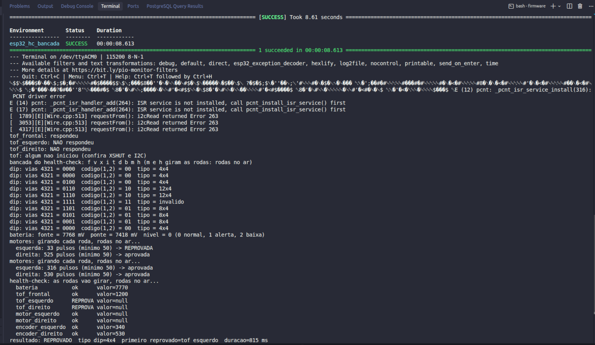
Os logs de texto de cada teste estão em evidencias/testes-integracao/firmware-hardware/: 5.1, 5.2, 5.3 e 5.4.
Investigação da falha dos ToF laterais (teste 5.2)¶
Só o ToF frontal (GPIO33) inicia e mede. O lateral ligado ao XSHUT do GPIO5 responde ao endereço 0x29 e o ID do chip lê 0xEE (VL53L0X rev. 1.1), mas a inicialização falha ao ler a calibração de fábrica (PerformRefSpadManagement), com Error 263 (timeout de I²C) e Status -6. O outro lateral (XSHUT no GPIO4) não responde em nenhum GPIO testado. Para concluir se a causa é de software ou de hardware, cada hipótese foi testada na placa com o mesmo procedimento (comando v da bancada, só o sensor do GPIO5 em alto):
| Hipótese de software | Como foi testada | Resultado |
|---|---|---|
| Pino de XSHUT errado ou sem saída | x (um GPIO por vez em alto) e f (varredura dos GPIOs livres) |
GPIO33 e GPIO5 acordam um sensor; o pino funciona. O GPIO4 não acorda nenhum. Log: 5.2-tof-xshut.txt |
| Tempo de boot depois do XSHUT | 10 ms de espera (datasheet pede 1,2 ms) e três tentativas com reinício do sensor | Falha igual em todas. Log: 5.2-tof-tentativas-e-interruptor.txt |
| Clock do I²C | 50, 100 e 400 kHz | Falha igual nos três. Log: 5.2-tof-clock-timeout.txt |
| Timeout da leitura de I²C | 50 ms (padrão) e 500 ms | Falha igual: a leitura não completa nem com 10 vezes mais tempo. Log: 5.2-tof-clock-timeout.txt |
| Biblioteca do sensor | Adafruit e Pololu | Adafruit falha na calibração; a Pololu devolve init OK, mas toda leitura dá 0 mm com o mesmo erro. Log: 5.2-tof-bibliotecas.txt |
| Alimentação pelo lado da bateria | Interruptor ligado e desligado | Falha igual. Log: 5.2-tof-tentativas-e-interruptor.txt |
| Mau contato que só fecha com o movimento | Carrinho em movimento durante a leitura (tecla t), 7 reinicializações dos ToF sem reiniciar a placa (comando r da bancada), apertando as soldas e mexendo nos sensores (sem mexer nos fios) |
O frontal responde e acompanha o movimento em todas as tentativas; os dois laterais não responderam em nenhuma, com o mesmo Error 263 de antes. Não houve nenhuma mudança entre as tentativas. Log: 5.2-tof-reinicio-movimento.txt |
| Troca de módulo entre conectores da placa | Troca completa: o módulo que era o esquerdo ligado no conector do frontal, e o que era o frontal ligado no conector do esquerdo | O conector do frontal responde com o módulo que falhava como esquerdo (mede de forma estável, 76 a 82 mm); o conector do esquerdo continua sem resposta (Error 263 e NAO respondeu) mesmo com o módulo que funcionava como frontal. O defeito acompanha o conector da placa, não o módulo. Fotos e log: 5.2-tof-troca-de-modulo.txt e subseção abaixo |
| Modelo do chip | Leitura do ID (registrador 0xC0) |
0xEE, é um VL53L0X; o modelo não é o problema. Log: 5.2-tof-bibliotecas.txt |
Conclusão da hipótese: nenhuma variação de software mudou o resultado, e movimentar o carrinho ou reiniciar os sensores sem reiniciar a placa também não (apertar as soldas e mexer nos sensores, sem mexer nos fios), e o sensor frontal funciona com exatamente o mesmo código. A falha é repetível e aparece só no passo que dispara o laser do sensor (a leitura da calibração), com o chip identificado corretamente. Isso apontava para o hardware dos laterais, e a troca de módulo entre conectores (última linha da tabela) localizou o defeito: o módulo que falhava como esquerdo responde quando ligado ao conector do frontal, e o que funcionava como frontal deixa de responder no conector do esquerdo, então os módulos estão bons e o problema está no conector da placa do lateral (solda dos pinos, trilhas de SDA, SCL, XSHUT e VIN, ou o próprio GPIO). Ação: a Eletrônica confere, na placa, o conector do lateral que falha (continuidade e solda dos pinos, 3,3 V no VIN e a trilha do XSHUT), e a rodada se repete depois. Enquanto isso, o ambiente esp32_real_tof_mock permite os testes de ponta a ponta (ADR-018).
Logs desta investigação em evidencias/testes-integracao/firmware-hardware/: xshut, tentativas e interruptor, bibliotecas e ID do chip, clock e timeout, movimento e reinício dos ToF, troca de módulo entre conectores e o resumo geral 5.2-tof.txt.
Telemetria pela serial USB (teste 5.5)¶
Saída serial do esp32_sim na ESP32 real em duas execuções: a primeira com o estado antigo guardado na NVS (success e retomada) e a segunda depois de apagar a flash (nova e running). Mostra os 8 hc_item, o hc_resultado, a tel a 1 Hz com o robô parado e o seq contínuo, sem nenhuma falha. Log completo: 5.5-telemetria-serial.txt.
Máquina de estados na ESP32 (teste 5.6)¶
A suíte test_estados (28 casos) roda no PC e dentro da ESP32 real: o PlatformIO grava os testes na placa e lê o resultado pela serial USB (pio test -e esp32_sim -f test_estados). Ela cobre as transições de health-check, largada (só com o último health-check aprovado), comandos health_check e interromper, e as reações ao botão BOOT, além da falha de cada origem comparada com as linhas do contrato: interrupção pela web (origem web, motivo nulo) e BOOT (origem boot, encerrado_operador). Resultado: 28 de 28 na placa e 28 de 28 no PC. Log: 5.6-maquina-estados-esp32.txt.
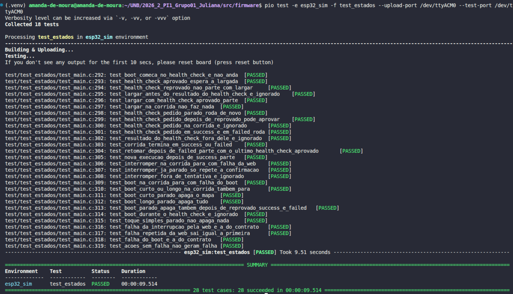
Gestos do botão BOOT na ESP32 (teste 5.7)¶
A suíte test_boot (20 casos) roda no PC e dentro da ESP32 real (pio test -e esp32_sim -f test_boot). Ela cobre o debounce de 30 ms, o toque durante a corrida (sai ao apertar), o toque curto parado (sai ao soltar antes de 1,5 s) e o toque longo (sai aos 1,5 s, com o botão ainda apertado, uma única vez), além da virada do contador de 32 bits e do botão da HAL simulada. Resultado: 20 de 20 na placa e 20 de 20 no PC. Log: 5.7-gestos-boot-esp32.txt.
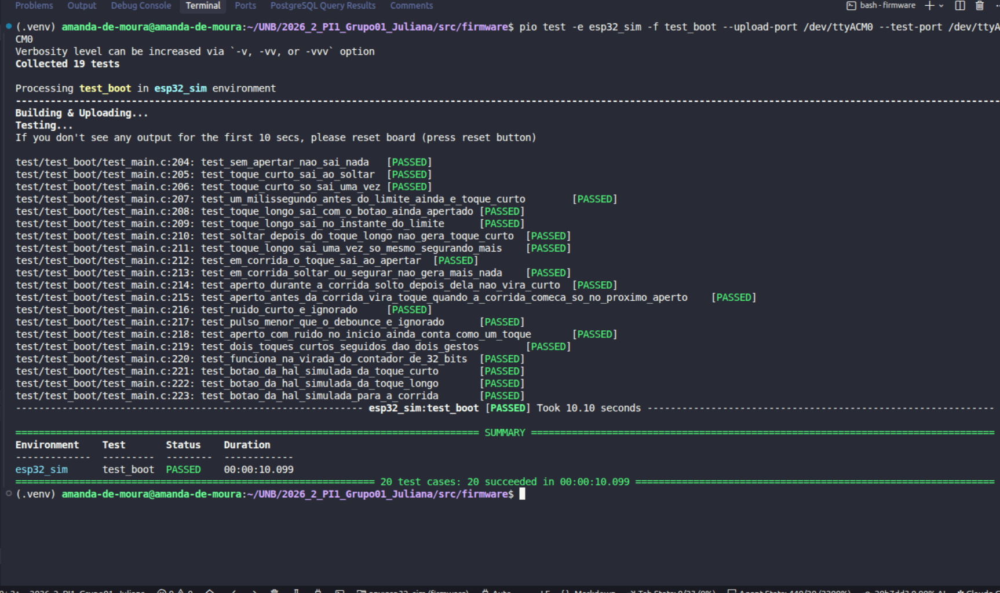
Toque físico no botão BOOT (teste 5.8)¶
Com o esp32_sim gravado antes (ele escreve mem_mapa e mem_tipos na NVS) e o esp32_real_tof_mock rodando, o botão BOOT da placa foi apertado com o firmware já em execução: um toque curto e depois um toque longo. O firmware imprime a presença das chaves antes e depois de cada gesto. O mapa saiu na hora do toque curto, os tipos resolvidos só saíram no toque longo, e a telemetria seguiu sem reinício (mesmo boot, seq contínuo). O BOOT não reinicia a placa durante a execução, só em reset. Log: 5.8-botao-boot-fisico-esp32.txt.
Corrida com largar, interromper e BOOT (teste 5.9)¶
O ambiente esp32_sim_boot roda a navegação na ESP32 com a HAL simulada (sensores e labirinto), o botão BOOT físico e uma decisão por segundo, para dar tempo de apertar o botão no meio da corrida. Os comandos foram enviados pela serial. O robô fica em health-check sem andar até o largar; a corrida chegou ao sucesso; um novo largar recomeçou do (0,0); o BOOT na corrida gerou a falha boot/encerrado_operador e a tel foi para failed; o largar seguinte retomou da célula da falha; e o interromper gerou a falha web com motivo nulo, como a Tabela 8 do contrato define (o motivo é o escolhido no modal da web). A lógica está também na lib corrida, com 19 testes no PC (pio test -e native -f test_corrida). Log: 5.9-corrida-largar-interromper-boot-esp32.txt.
Corrida na ESP32 (teste 5.10)¶
A suíte test_corrida (19 casos) roda no PC e dentro da ESP32 real (pio test -e esp32_sim -f test_corrida). Ela cobre a lib corrida, que junta a máquina de estados, a navegação e a NVS: o robô espera o largar em health-check, só parte com o último health-check aprovado, trata interromper (falha web sem motivo) e o BOOT na corrida (falha boot), retoma depois da falha e do reset, apaga a NVS com o toque curto e o longo, termina em sucesso e recomeça no novo largar, e reinicia a navegação quando o DIP muda. Resultado: 19 de 19 na placa e 19 de 19 no PC. Log: 5.10-corrida-esp32.txt.
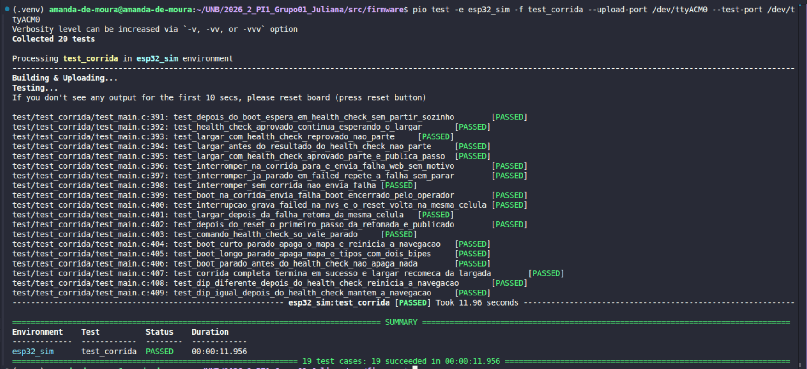
Comando health_check na corrida simulada (teste 5.11)¶
No esp32_sim_boot, o comando health_check enviado com o robô parado rodou os 8 itens e publicou o hc_resultado, tanto esperando o largar quanto depois do sucesso (a tel voltou a health-check). Enviado com a corrida em andamento, foi ignorado e a corrida chegou ao sucesso. O interromper com o robô parado em success não gerou falha, e na corrida gerou a falha web com motivo nulo. Log: 5.11-health-check-comando-esp32.txt.
DIP lido pelo health-check na placa real (teste 5.12)¶
No esp32_real, o DIP foi trocado com a placa ligada e o comando health_check enviado a cada troca. O tipo_dip do hc_resultado acompanhou as vias (8x4, 12x4, 12x4, 8x4, 4x4), então o health-check relê o DIP depois do boot, como a navegação precisa para reiniciar com o tipo novo. O resultado foi reprovado em todos por causa dos ToF laterais (teste 5.2); o motor e o encoder esquerdos também reprovaram em dois comandos porque a bateria atrapalhava a roda, e passaram nos três últimos, com a bateria segurada. Log: 5.12-dip-health-check-esp32.txt.
Troca de módulo entre conectores dos ToF (teste 5.2)¶
Para separar o defeito do módulo e o do conector da placa, os dois módulos foram trocados de lugar: o que era o esquerdo foi ligado no conector do frontal, e o que era o frontal, no conector do esquerdo. Depois da troca, o conector do frontal passou a responder e a medir de forma estável (76 a 82 mm) com o módulo que falhava, e o conector do esquerdo seguiu sem resposta com o módulo que antes funcionava. Como o defeito acompanha o conector, e não o módulo, a verificação passa para a placa: solda dos pinos do conector, trilhas de SDA, SCL, XSHUT e VIN, e o 3,3 V no VIN. O direito não foi trocado nesta rodada. Log: 5.2-tof-troca-de-modulo.txt.
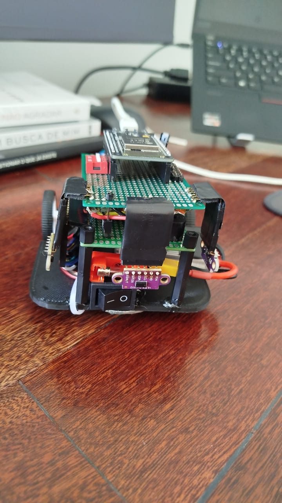
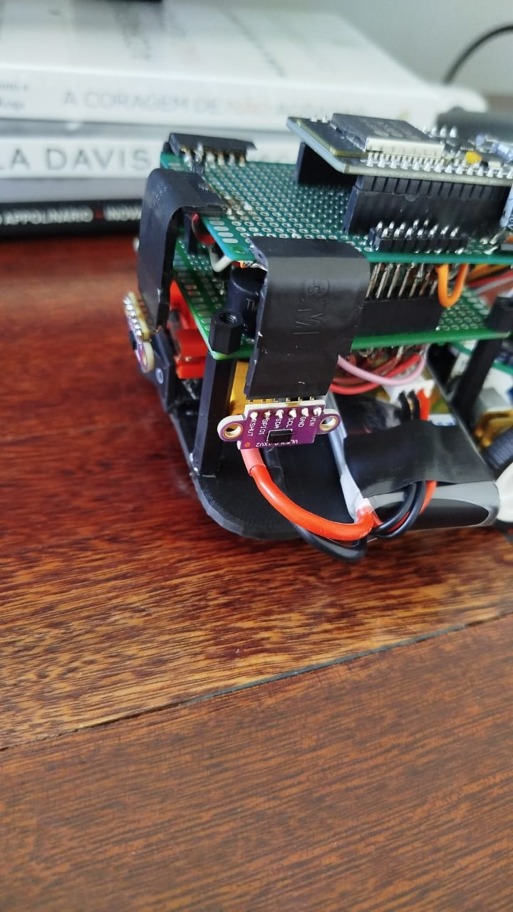
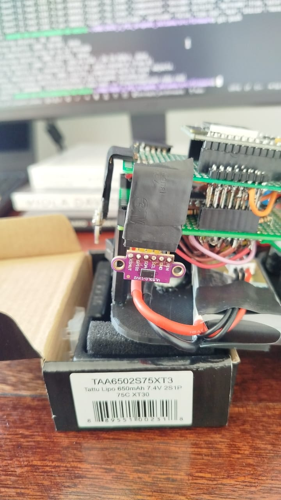
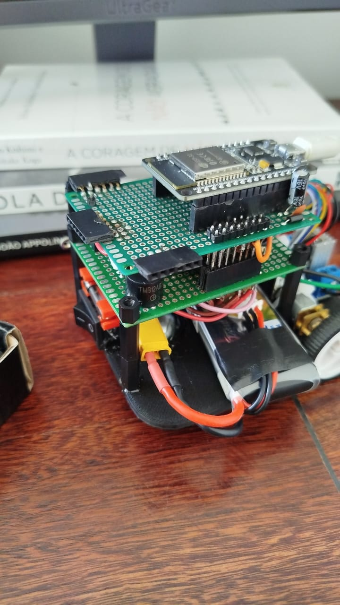
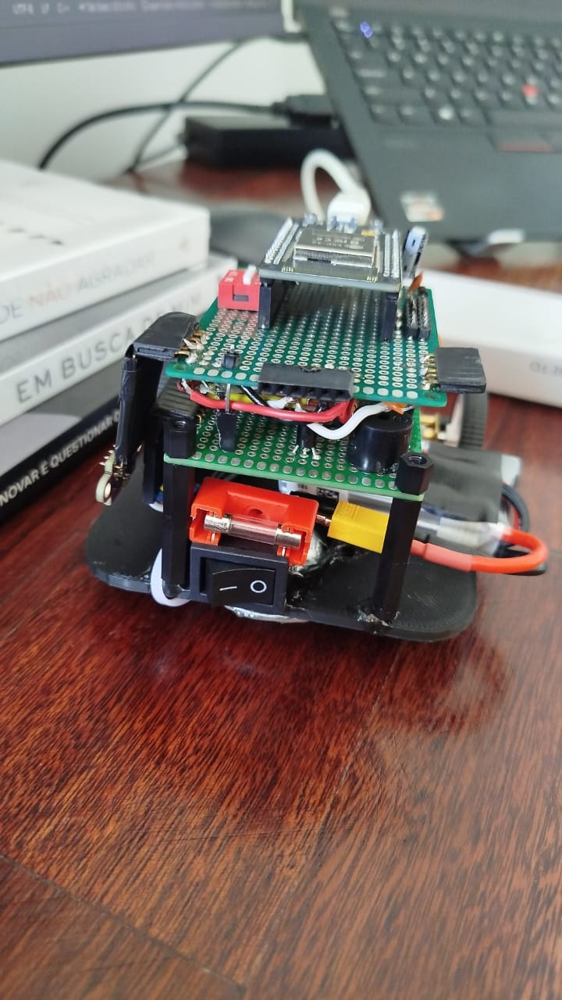
Saídas do monitor depois da troca: o health-check do esp32_real com o tof_frontal aprovado e os dois laterais reprovados, e a bancada com o boot, o comando r e a leitura contínua (t), só com a coluna do frontal respondendo.
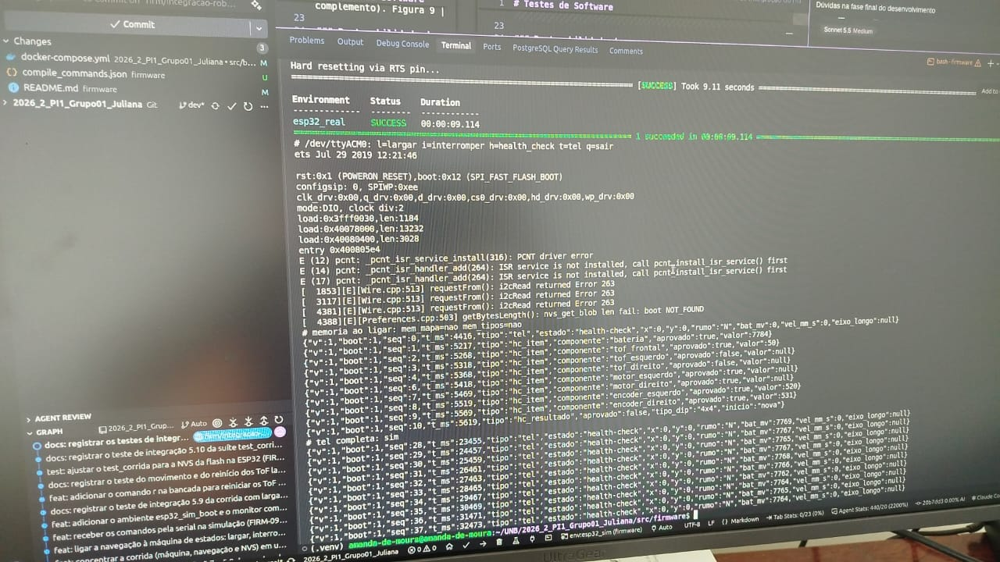
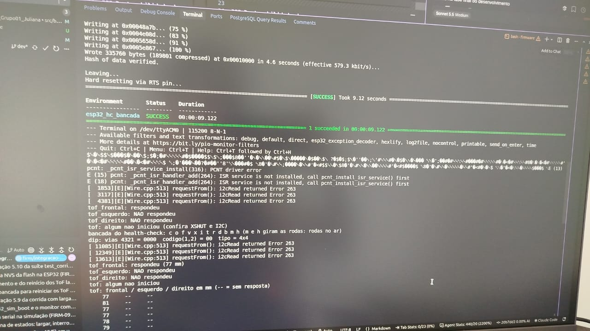
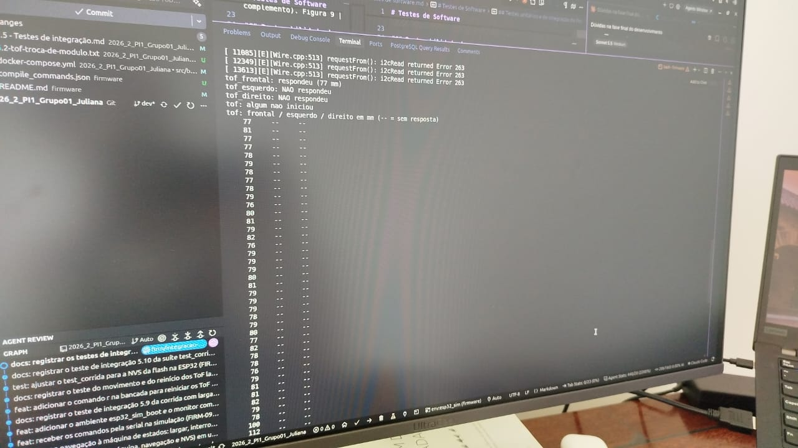
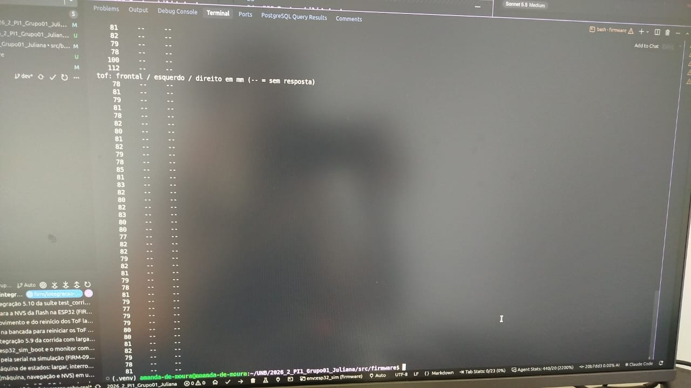
LED por estado (testes 5.13 e 5.14)¶
A suíte test_sinal (9 casos) confere o padrão do LED de cada estado em função do tempo: pisca rápido no health-check (400 ms, 200 aceso), aceso fixo aguardando o largar, pisca lento no reprovado (2 s, 1 s aceso), pisca médio na corrida (1 s, 500 ms aceso), 3 piscadas e aceso fixo no sucesso e pisca muito rápido na falha (200 ms, 100 aceso). O padrão reinicia ao mudar de estado e aguenta a virada do relógio de 32 bits. Resultado: 9 de 9 na placa e 9 de 9 no PC. Log: 5.13-sinal-led-esp32.txt.
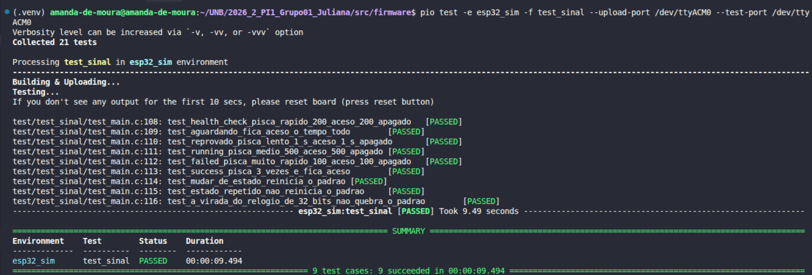
No LED azul da placa (GPIO2), o esp32_real com o health-check reprovado pelos ToF laterais (teste 5.2) piscou 1 s aceso e 1 s apagado, o padrão do estado reprovado. No esp32_sim_boot, a corrida passou pela sequência de estados health-check, running, success, running, failed e health-check de novo, e o LED seguiu o padrão esperado em cada um. A conferência foi visual; não há foto nem vídeo do LED. Log: 5.14-led-por-estado-esp32.txt.
Encoder sem interrupção (testes 5.15 e 5.16)¶
O contador de 16 bits do PCNT zera em ±30000, e o driver dependia de uma interrupção para somar o estouro, que nunca foi instalada (o erro pcnt_isr_service_install em todo boot). O driver agora soma o estouro na própria leitura (encoder_soma, lido a 200 Hz no controle). A suíte test_encoder_soma (6 casos) cobre a passagem do +30000 e do -30000, várias voltas e o vai e volta perto do limite: 6 de 6 na placa e 6 de 6 no PC. Log: 5.15-encoder-soma-esp32.txt.
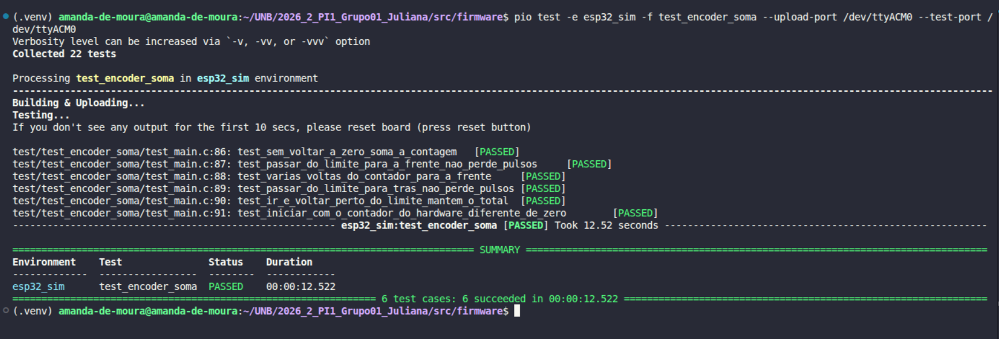
No boot do esp32_real, as três linhas de erro do PCNT desapareceram. Log: 5.16-pcnt-boot-esp32-real.txt.
Corrida simulada, retomada e regressão da NVS (testes 5.17 e 5.18)¶
Depois do limite de gravações do mapa (600 por inicialização), a suíte test_corrida continua com 19 de 19 na ESP32 (flash real). Na corrida simulada do esp32_sim_boot, a falha por interromper em (0,2) seguida de reset voltou como retomada na mesma célula, e o largar continuou dela até o sucesso. Logs: 5.17 e 5.18.
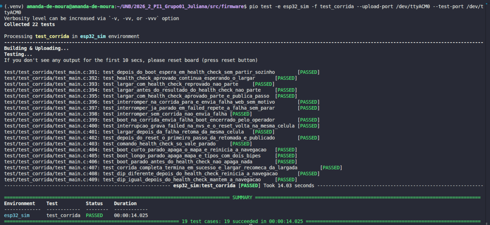
Encoder: estouro do contador e pulsos por volta (testes 5.19 e 5.20)¶
Na bancada dos drivers, com as rodas no ar e o motor a 30%, os dois encoders passaram de +30000, -30000 e -60000 sem nenhum pulo (o PCNT zera nesses pontos e o encoder_soma soma o estouro na leitura), e o esquerdo foi de 46475 a -67046, bem além do limite do int16. Frente soma e ré subtrai nos dois motores. Log: 5.19-encoder-estouro-esp32.txt. Girando a roda à mão, o contador voltou ao ponto de partida, mas a volta exata não foi medida (588 e 633 pulsos), então os 840 pulsos por volta seguem sem confirmação; o teste 5.20 fica para repetir rolando o robô por uma distância medida. Log: 5.20-encoder-volta-manual-esp32.txt.
Sentido das rodas (achado no teste 5.19)¶
Na bancada dos drivers, com a configuração original, a roda esquerda girava para trás com a potência positiva (e) e para a frente com a negativa (E), e o encoder contava positivo com a potência positiva. Como o movimento e a navegação assumem que potência positiva e encoder positivo são para a frente, o robô andaria torto. Uma primeira correção inverteu os dois lados, e a conferência seguinte (rodas no ar) mostrou que a esquerda ficou certa e a direita passou a girar ao contrário (d para trás, D para a frente): a direita já estava certa na configuração original, o que bate com motores espelhados, um de cada lado. A correção final do driver é invertido ligado só no motor e no encoder esquerdos. A conferência final está no teste 5.21: com só a esquerda invertida, as duas rodas giram para a frente com e e d, e o encoder sobe para a frente.
Na mesma conferência, o p da bancada parou de responder nos comandos do final (a causa não foi identificada; no teste 5.21, com a bancada repetindo cada tecla, o p parou a roda 4 de 4 vezes). A bancada passou a repetir cada tecla recebida (# comando: x), a parar com qualquer outra tecla (inclusive Enter) e a parar sozinha depois de 20 s sem comando.
Roteiro dos testes de calibração no robô (FIRM-10)¶
Testes a registrar nesta tabela quando forem feitos, com a bancada esp32_calibracao (ver o README do firmware). Cada um leva o log do monitor e, quando houver, a foto ou a medida da régua ou do transferidor em evidencias/testes-integracao/firmware-hardware/.
| Critério (issue #141) | Comando | Procedimento | Resultado esperado |
|---|---|---|---|
| Avanço de uma célula | a |
robô no chão, com a régua ao lado | 1079 pulsos por roda (com 640 pulsos por volta, provisório); 180 mm. Registrado no teste 5.28 |
| 10 avanços seguidos | A |
marque o ponto de partida e meça o final na pista | 1800 mm, erro final de até 10 mm. Registrado no teste 5.30 |
| Giro de 90° | g e G |
confira o ângulo impresso (calculado pelos encoders) | 435 pulsos por roda (provisório). Registrado no teste 5.29 |
| 10 giros seguidos | Q |
confira o desvio impresso pelos pulsos | termina virado 180° em relação à partida (2,5 voltas), desvio acumulado de até 5° |
| PID de velocidade | v |
rodas no ar ou no chão | média depois da rampa a até 5% de 400 mm/s nas duas rodas (APROVADO) |
| Limiar de stuck | s |
segure a roda até ela parar por completo, por mais de 1 s | detecção em torno de MOTOR_TRAVADO_MS (1000 ms). Não verificado: com a roda segurada sem força ela seguiu girando e o detector, que exige o encoder parado por 1 s, não disparou (esperado) |
| Limiar de parede | t |
robô no centro de células com e sem parede | leituras que separam parede de ausência de parede nos três ToF |
| Corredor de 4 células | esp32_real |
pista de 4 células, ToF laterais funcionando | percorre sem encostar nas paredes |
| Bateria contra o multímetro | esp32_drivers |
compare a tensão impressa com o multímetro | erro de até 2% (adiado: sem multímetro) |
| Firmware completo | esp32_real_tof_mock |
pista aberta, depois da calibração | a corrida chega ao sucesso ou falha com stuck |
Executor de movimento na ESP32 (teste 5.22)¶
A suíte test_execucao (11 casos) roda no PC e dentro da ESP32: cada ação da navegação leva o robô simulado à célula certa, uma roda travada faz a execução falhar e parar, a corrida completa no labirinto de demonstração chega ao objetivo andando de verdade (motores, encoders e ToF do mundo simulado), e a falha de movimento vira a falha stuck. Na mesma rodada, o test_corrida continuou com 19 de 19. Log: 5.22-execucao-esp32.txt.
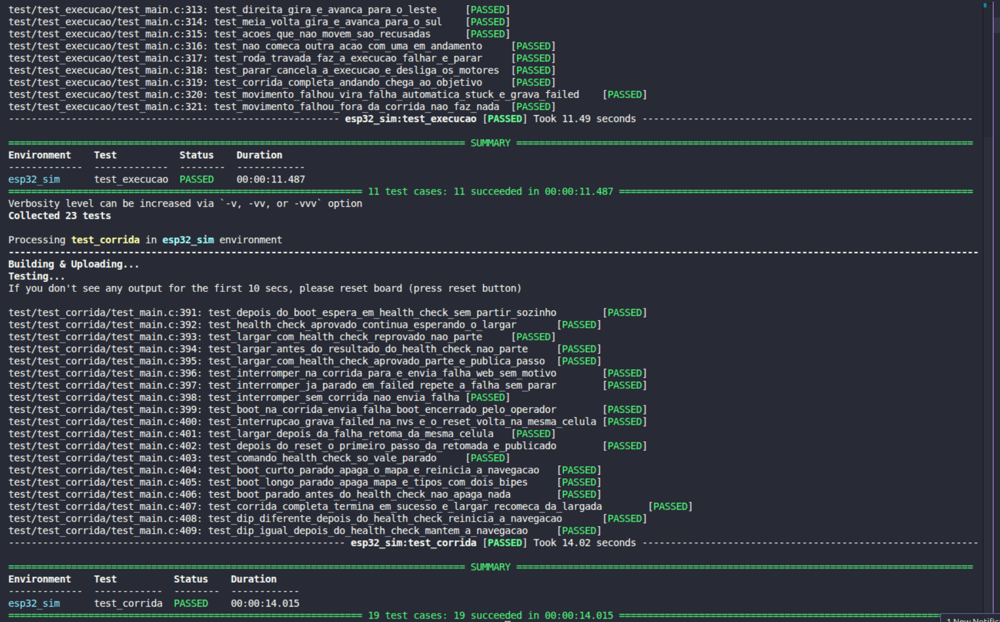
Corrida simulada andando na ESP32 (teste 5.23)¶
Com o executor de movimento ligado à navegação, o esp32_sim_boot roda a corrida pela física do mundo simulado, sem teletransporte. O robô chegou ao objetivo (3,3) pelo caminho certo do labirinto de demonstração, que desce de (2,3) por (2,2) e (3,2): isso mostra que a parede lateral da célula nova é lida ao entrar, e não no centro (onde o lado aberto dá parede falsa). Cada célula reta levou cerca de 1 s e cada célula com giro, cerca de 1,5 s. O largar depois do sucesso recomeçou do (0,0), o interromper parou a corrida com a falha web sem motivo, e o health_check rodou parado em success e depois de failed. Log: 5.23-corrida-simulada-andando-esp32.txt.
BOOT parado e corrida nova na ESP32 (teste 5.24)¶
No esp32_sim_boot, o toque curto e o toque longo no BOOT com o robô parado apagaram a memória e voltaram a navegação para (0,0): o app imprimiu # BOOT curto: ... e # BOOT longo: ..., a tel ficou em (0,0) e o largar seguinte percorreu o labirinto inteiro até o sucesso, com a tel a 5 Hz na corrida e a 1 Hz parado. Na simulação não há buzzer; o sinal é a linha no monitor e o LED. Log completo do monitor, desde o boot: 5.24-boot-parado-corrida-nova-esp32.txt.
BOOT na corrida e retomada depois do reset (teste 5.25)¶
No esp32_sim_boot, um toque no BOOT no meio da corrida parou o robô e enviou a falha com origem boot e motivo encerrado_operador, com a tel em failed. Depois do reset, o boot saiu como retomada com a posição da falha, e o largar continuou dali até o sucesso em (3,3), sem voltar ao começo. Isso fecha a corrida simulada com a memória: largar, interromper, BOOT na corrida, BOOT parado, health_check e retomada. Log completo: 5.25-boot-na-corrida-retomada-esp32.txt.
Bluetooth: enlace e alcance (testes 5.26 e 5.27)¶
O esp32_calibracao_bt foi pareado com o notebook (bluetoothctl pair e trust) e aberto em /dev/rfcomm0 com rfcomm bind, sem o cabo USB. As teclas da bancada chegaram ao robô e as respostas voltaram ao monitor, com o robô andando no chão (5.26). O rfcomm connect não serve: ele segura a porta e o monitor recebe Device or resource busy. O eco do terminal devolvia a saída do robô como comandos, então a bancada aceita só linhas de uma tecla (ADR-020).
Alcance (5.27): a mais de cerca de 3 m do notebook o enlace desconecta com facilidade, abaixo do critério de estabilidade a 3 m da FIRM-11. Foi um relato, sem medir a distância da queda, e ainda falta repetir o teste e investigar a causa. Enquanto isso, o notebook deve ficar a menos de 3 m do robô, e a ponte reabre a porta sozinha se a conexão cair.
Defeito estrutural e resultados invalidados (testes 5.28 a 5.33)¶
Aviso: bateria entre a roda boba e a roda esquerda. A bateria não tem lugar fixo, fica entre a roda boba e a roda esquerda e encosta nela, o que dá um atrito que varia de um avanço para o outro: no mesmo ambiente a esquerda ficou curta (1070 de 1079), passou do alvo (1087) e acertou (1078). Foi descartada a correção por software (ganho integral e tolerância maiores), que só esconderia o defeito mecânico; o reparo é fixar a bateria. Até isso ser feito, os avanços, os dez avanços e o recuo da roda esquerda no fim do movimento não são conclusivos.
Conversão de pulsos em milímetros. Com 840 pulsos por volta o robô andava 23 a 25 cm quando o código contava 18 cm. O valor passou a 640 (provisório), o que levou o avanço de uma célula de 1416 para 1079 pulsos e o giro de 90° de 571 para 435. Todos os resultados em milímetros ou em pulsos dos testes anteriores a essa troca não valem como medida de distância ou de ângulo.
Valores de referência dos logs: avanço de uma célula cerca de 1079 pulsos por roda e 180 mm pelos pulsos; giro de 90° cerca de 90,7° e -90,4°; dez avanços cerca de 1800 mm pelos pulsos; ToF frontal de 64 a 68 mm com a madeira a 5 a 6 cm. Todos calculados pelos encoders ou lidos dos sensores.
Aviso sobre o defeito estrutural: o avanço 4 do A (teste 5.34) falhou por essa causa. O comportamento foi deixado como está, sem adaptar o controle, e os avanços e giros com a bateria solta devem ser lidos com essa ressalva até o reparo mecânico (fixar a bateria longe das rodas).
Detalhamento dos testes 5.26 a 5.35, com os logs¶
Cada teste traz o esperado, o obtido e o que vale ou não vale; o log completo enviado fica recolhido dentro do teste (clique em "Log completo") e também está no arquivo de evidência.
5.26 · Bluetooth real (SPP 'Ratatouille') no robô, sem cabo USB: pareamento no notebook, rfcomm bind e as teclas…
Resultados esperados: O pareamento e a conexão funcionam, as teclas chegam ao robô e as respostas voltam ao monitor.
Resultados obtidos: O pareamento por bluetoothctl e o rfcomm bind funcionaram; t, p, v e a foram enviados e respondidos pelo enlace (v com 1,7% de erro, APROVADO; a no chão com concluido e 1422 a 1424 pulsos). Houve ciclos curtos de cliente conectado e desconectado no início, até o enlace estabilizar.
Observações: O eco do terminal no /dev/rfcomm0 fazia o robô tratar a própria saída como comandos (uma roda pulsou); resolvido com o protocolo de uma tecla por linha na bancada (ADR-020).
Log completo (5.26-bluetooth-spp-calibracao.txt)
Teste 5.26 - Bluetooth real (SPP) no robo, ambiente esp32_calibracao_bt
Notebook: bluetoothctl (pair, trust), sudo rfcomm bind /dev/rfcomm0 88:57:21:70:7F:0E 1,
pio device monitor --port /dev/rfcomm0 --baud 115200 --echo
Trecho do monitor (cada tecla seguida de Enter), robo no chao, sem cabo USB:
a
#aa
#avanco: concluido esq=1424 dir=1423 pulsos (esperado 1416) = 181.0 mm pelos pulsos
a
# comando: a
avanco: concluido esq=1422 dir=1424 pulsos (esperado 1416) = 180.9 mm pelos pulsos
a
# comando: a
avanco: concluido esq=1422 dir=1424 pulsos (esperado 1416) = 180.9 mm pelos pulsos
Banner da bancada pelo enlace, com o cliente conectado:
# bt: aguardando conexao como "Ratatouille"
# bt: cliente conectado
Observacoes: no inicio houve ciclos curtos de "cliente conectado" e "desconectado (status 0)" antes de o enlace
estabilizar. A primeira linha do trecho acima saiu com o eco do terminal misturado ("#aa").
Arquivo: 5.26-bluetooth-spp-calibracao.txt
5.27 · Alcance e estabilidade do Bluetooth (SPP) em relação ao notebook
Resultados esperados: Enlace estável a 3 m do notebook (critério da FIRM-11).
Resultados obtidos: Não atendido: a mais de cerca de 3 m o enlace desconecta com facilidade (relato, sem medição de distância).
Observações: Falta medir a distância exata da queda, repetir e investigar a causa (posição da antena da ESP32, obstáculos). A latência (p95 ≤ 3 s) e o pareamento no notebook oficial seguem pendentes.
Log completo (5.27-bluetooth-alcance-3m.txt)
Teste 5.27 - Alcance do Bluetooth (SPP) em relacao ao notebook
Relato da Amanda, sem medicao de distancia nem log de RSSI: a mais de cerca de 3 m do notebook o enlace
desconecta com facilidade (o monitor em /dev/rfcomm0 perde a conexao e o robo imprime
"# bt: desconectado (status 0)").
Nao medido ainda: distancia exata da queda, orientacao da antena da ESP32, obstaculos, repeticao.
Criterio do projeto: estabilidade a 3 m (FIRM-11).
Quedas durante a tecla A (dez avancos), pelo monitor em /dev/rfcomm0, varias vezes seguidas:
Disconnected ([Errno 5] Input/output error)
Reconnecting to /dev/rfcomm0 Connected!
Causa nao identificada: distancia do notebook ou reinicio da placa por queda da bateria; para separar, repetir o A pelo USB
e procurar "Brownout detector was triggered" ou o banner de boot no meio do movimento.
Logs completos com as quedas, enviados pela Amanda: [Log 8] do 5.28 (varias tentativas de A) e [Log 1] do 5.30 (A com o avanco 7 FALHOU).
Os dois comecam em "pio device monitor --port /dev/rfcomm0 --baud 115200 --echo" e trazem as linhas
"Disconnected ([Errno 5] Input/output error)" e "Reconnecting to /dev/rfcomm0 Connected!".
Arquivo: 5.27-bluetooth-alcance-3m.txt
5.28 · Avanço de uma célula (a) na bancada de calibração (esp32_calibracao_bt), rodas no ar e no chão
Resultados esperados: Pulsos por roda dentro da tolerância do avanço e distância medida com régua igual a uma célula (180 mm).
Resultados obtidos: Com 840 pulsos por volta: 6 de 6 concluido (1410 a 1424 pulsos de 1416), mas a régua deu 23 a 25 cm, não 18 cm. Com 640 pulsos por volta: 1077 a 1082 pulsos de 1079 e a régua deu cerca de 18 a 20 cm. Com a roda esquerda roçando na bateria: 1070/1075, 1087/1073 e 1078/1080.
Observações: Válido: o controle de posição chega ao alvo em pulsos e o erro entre as rodas é pequeno quando não há atrito extra. Inválido: os pulsos e os mm dos testes com 840 pulsos por volta (a conversão estava errada por um fator de ~1,3, achado pela régua); as primeiras versões do controle (só proporcional e o integral sobre a trajetória toda), que falharam (FALHOU, oscilação); e os avanços feitos com a roda esquerda roçando na bateria (defeito estrutural, atrito variável), que misturam atrito com controle. Resultado adotado: com 640 pulsos por volta, cerca de 1079 pulsos por roda e 180 mm pelos pulsos (régua: cerca de 18 a 20 cm); o valor de 640 pulsos por volta é provisório.
Log completo (5.28-avanco-uma-celula-calibracao.txt)
Teste 5.28 - Avanco de uma celula (tecla a), bancada esp32_calibracao_bt
Logs completos enviados pela Amanda, na ordem em que foram feitos. Cada bloco comeca com um titulo [Log N].
Os logs de a que vieram junto com g, G ou A estao inteiros aqui e sao citados nos testes 5.29 e 5.30.
[Log 1] Rodas no ar, primeira versao do controle (so proporcional), 840 pulsos por volta. Da sessao anterior so resta o resumo:
avanco: FALHOU esq=1398 dir=1393 pulsos (esperado 1416)
avanco: FALHOU esq=1397 dir=1396 pulsos (esperado 1416)
[Log 2] USB, depois de acrescentar a parcela integral sobre a trajetoria toda (a roda direita parecia nao andar):
(.venv) amanda-de-moura@amanda-de-moura:~/UNB/2026_2_PI1_Grupo01_Juliana/src/firmware$ pio device monitor --port /dev/ttyACM0 --baud 115200
--- Terminal on /dev/ttyACM0 | 115200 8-N-1
--- Available filters and text transformations: debug, default, direct, esp32_exception_decoder, hexlify, log2file, nocontrol, printable, send_on_enter, time
--- More details at https://bit.ly/pio-monitor-filters
--- Quit: Ctrl+C | Menu: Ctrl+T | Help: Ctrl+T followed by Ctrl+H
␛�;␃�$�8␃�$␄�␄$$␄$���$�␄��␇$;$�;�#␄␄␛␄␄#�$����$$␛$␛;���$8��''�␟�␄␛��␄#$�␛$␛�����␛�$��␃$␛ ?�$�$;$␇�''��␟;␛'#␄␄␄#�␛�$�␛␟�␄��� ␃␇�';��#�#␄␄␃␄␄#���#�#␄␄␃␄␄#�␛�<�#␄␄␃␄␄#8�␃�␛�<�#␄␄␃␄␄#'�␛�<�#␄␄␃␄␄#��␛�<�#␄␄␃␄$ ␃;�'���␄��?�#��''8'␃␄���#�$ ␃8�'�␘#␄␄;����␄�␄␄#'�<#$$␄␄�␇$8�'�␘#␄␄�␄␄��␄␄␄␄#'�<#$����$ ␃8�'�␘#␄␄�␄␄␄␄␄�␄␄#'�<#�␄�␄$ ␃␛�'�<�␃␄␄�␄␄␄␄$���$ ␃# bt: aguardando conexao como "Ratatouille"
[ 2376][E][Wire.cpp:513] requestFrom(): i2cRead returned Error 263
[ 3640][E][Wire.cpp:513] requestFrom(): i2cRead returned Error 263
[ 4904][E][Wire.cpp:513] requestFrom(): i2cRead returned Error 263
bancada de calibracao: digite a tecla e Enter: a A g G h Q v s t p (Enter sozinho para)
tof: algum nao iniciou
# comando: a
avanco: FALHOU esq=1449 dir=1443 pulsos (esperado 1416) = 183.9 mm pelos pulsos
# comando: a
avanco: FALHOU esq=1410 dir=1413 pulsos (esperado 1416) = 179.5 mm pelos pulsos
# comando: a
avanco: FALHOU esq=1428 dir=1428 pulsos (esperado 1416) = 181.6 mm pelos pulsos
# comando: g
giro: FALHOU esq=-578 dir=602 pulsos (esperado 571) = 1.5 mm pelos pulsos
# comando: A
avanco 1: FALHOU esq=1428 dir=1409
# comando: p
[Log 3] Bancada dos drivers (esp32_drivers, rodas no ar): cada motor sozinho, para separar hardware de software
(pio device monitor --port /dev/ttyACM0 --baud 115200 --echo). Enter depois de cada tecla.
bancada dos drivers: e E d D p n
enc_e=0 enc_d=0 bat=7691 mV ponte=7341 mV
enc_e=0 enc_d=0 bat=7691 mV ponte=7341 mV
enc_e=0 enc_d=0 bat=7692 mV ponte=7342 mV
enc_e=0 enc_d=0 bat=7688 mV ponte=7338 mV
enc_e=0 enc_d=0 bat=7690 mV ponte=7340 mV
enc_e=0 enc_d=0 bat=7691 mV ponte=7341 mV
enc_e=0 enc_d=0 bat=7693 mV ponte=7343 mV
enc_e=0 enc_d=0 bat=7694 mV ponte=7344 mV
enc_e=0 enc_d=0 bat=7695 mV ponte=7345 mV
enc_e=0 enc_d=0 bat=7694 mV ponte=7344 mV
enc_e=0 enc_d=0 bat=7694 mV ponte=7344 mV
enc_e=0 enc_d=0 bat=7693 mV ponte=7343 mV
enc_e=0 enc_d=0 bat=7693 mV ponte=7343 mV
enc_e=0 enc_d=0 bat=7693 mV ponte=7343 mV
enc_e=0 enc_d=0 bat=7693 mV ponte=7343 mV
enc_e=0 enc_d=0 bat=7691 mV ponte=7341 mV
enc_e=0 enc_d=0 bat=7692 mV ponte=7342 mV
enc_e=0 enc_d=0 bat=7692 mV ponte=7342 mV
enc_e=0 enc_d=0 bat=7692 mV ponte=7342 mV
enc_e=0 enc_d=0 bat=7693 mV ponte=7343 mV
a# comando: a
enc_e=0 enc_d=0 bat=7693 mV ponte=7343 mV
enc_e=0 enc_d=0 bat=7692 mV ponte=7342 mV
enc_e=0 enc_d=0 bat=7690 mV ponte=7340 mV
enc_e=0 enc_d=0 bat=7690 mV ponte=7340 mV
enc_e=0 enc_d=0 bat=7690 mV ponte=7340 mV
enc_e=0 enc_d=0 bat=7690 mV ponte=7340 mV
enc_e=0 enc_d=0 bat=7692 mV ponte=7342 mV
enc_e=0 enc_d=0 bat=7692 mV ponte=7342 mV
enc_e=0 enc_d=0 bat=7691 mV ponte=7341 mV
enc_e=0 enc_d=0 bat=7691 mV ponte=7341 mV
enc_e=0 enc_d=0 bat=7691 mV ponte=7341 mV
enc_e=0 enc_d=0 bat=7692 mV ponte=7342 mV
enc_e=0 enc_d=0 bat=7692 mV ponte=7342 mV
a# comando: a
enc_e=0 enc_d=0 bat=7692 mV ponte=7342 mV
enc_e=0 enc_d=0 bat=7690 mV ponte=7340 mV
enc_e=0 enc_d=0 bat=7689 mV ponte=7339 mV
enc_e=0 enc_d=0 bat=7690 mV ponte=7340 mV
enc_e=0 enc_d=0 bat=7690 mV ponte=7340 mV
enc_e=0 enc_d=0 bat=7691 mV ponte=7341 mV
enc_e=0 enc_d=0 bat=7690 mV ponte=7340 mV
enc_e=0 enc_d=0 bat=7689 mV ponte=7339 mV
enc_e=0 enc_d=0 bat=7689 mV ponte=7339 mV
enc_e=0 enc_d=0 bat=7687 mV ponte=7337 mV
enc_e=0 enc_d=0 bat=7688 mV ponte=7338 mV
enc_e=0 enc_d=0 bat=7689 mV ponte=7339 mV
enc_e=0 enc_d=0 bat=7687 mV ponte=7337 mV
enc_e=0 enc_d=0 bat=7687 mV ponte=7337 mV
enc_e=0 enc_d=0 bat=7687 mV ponte=7337 mV
enc_e=0 enc_d=0 bat=7684 mV ponte=7334 mV
enc_e=0 enc_d=0 bat=7685 mV ponte=7335 mV
enc_e=0 enc_d=0 bat=7687 mV ponte=7337 mV
enc_e=0 enc_d=0 bat=7689 mV ponte=7339 mV
enc_e=0 enc_d=0 bat=7689 mV ponte=7339 mV
enc_e=0 enc_d=0 bat=7689 mV ponte=7339 mV
enc_e=0 enc_d=0 bat=7688 mV ponte=7338 mV
enc_e=0 enc_d=0 bat=7688 mV ponte=7338 mV
enc_e=0 enc_d=0 bat=7688 mV ponte=7338 mV
d# comando: d
enc_e=0 enc_d=0 bat=7689 mV ponte=7339 mV
enc_e=0 enc_d=332 bat=7687 mV ponte=7337 mV
enc_e=0 enc_d=740 bat=7684 mV ponte=7334 mV
enc_e=0 enc_d=1148 bat=7683 mV ponte=7333 mV
enc_e=0 enc_d=1557 bat=7683 mV ponte=7333 mV
enc_e=0 enc_d=1966 bat=7682 mV ponte=7332 mV
enc_e=0 enc_d=2375 bat=7680 mV ponte=7330 mV
enc_e=0 enc_d=2783 bat=7680 mV ponte=7330 mV
enc_e=0 enc_d=3192 bat=7680 mV ponte=7330 mV
enc_e=0 enc_d=3601 bat=7677 mV ponte=7327 mV
enc_e=0 enc_d=4009 bat=7674 mV ponte=7324 mV
enc_e=0 enc_d=4418 bat=7673 mV ponte=7323 mV
enc_e=0 enc_d=4827 bat=7671 mV ponte=7321 mV
enc_e=0 enc_d=5238 bat=7670 mV ponte=7320 mV
enc_e=0 enc_d=5649 bat=7667 mV ponte=7317 mV
enc_e=0 enc_d=6059 bat=7665 mV ponte=7315 mV
enc_e=0 enc_d=6471 bat=7663 mV ponte=7313 mV
enc_e=0 enc_d=6881 bat=7664 mV ponte=7314 mV
enc_e=0 enc_d=7293 bat=7664 mV ponte=7314 mV
enc_e=0 enc_d=7703 bat=7665 mV ponte=7315 mV
enc_e=0 enc_d=8114 bat=7666 mV ponte=7316 mV
enc_e=0 enc_d=8525 bat=7666 mV ponte=7316 mV
enc_e=0 enc_d=8936 bat=7665 mV ponte=7315 mV
p# comando: p
enc_e=0 enc_d=9347 bat=7665 mV ponte=7315 mV
enc_e=0 enc_d=9588 bat=7665 mV ponte=7315 mV
enc_e=0 enc_d=9601 bat=7666 mV ponte=7316 mV
enc_e=0 enc_d=9601 bat=7667 mV ponte=7317 mV
enc_e=0 enc_d=9601 bat=7669 mV ponte=7319 mV
enc_e=0 enc_d=9601 bat=7671 mV ponte=7321 mV
enc_e=0 enc_d=9601 bat=7672 mV ponte=7322 mV
enc_e=0 enc_d=9601 bat=7675 mV ponte=7325 mV
enc_e=0 enc_d=9601 bat=7679 mV ponte=7329 mV
enc_e=0 enc_d=9601 bat=7681 mV ponte=7331 mV
D# comando: D
enc_e=0 enc_d=9601 bat=7682 mV ponte=7332 mV
enc_e=0 enc_d=9267 bat=7683 mV ponte=7333 mV
enc_e=0 enc_d=8857 bat=7680 mV ponte=7330 mV
enc_e=0 enc_d=8447 bat=7679 mV ponte=7329 mV
enc_e=0 enc_d=8037 bat=7679 mV ponte=7329 mV
enc_e=0 enc_d=7627 bat=7679 mV ponte=7329 mV
enc_e=0 enc_d=7216 bat=7680 mV ponte=7330 mV
enc_e=0 enc_d=6806 bat=7678 mV ponte=7328 mV
enc_e=0 enc_d=6395 bat=7677 mV ponte=7327 mV
enc_e=0 enc_d=5985 bat=7675 mV ponte=7325 mV
enc_e=0 enc_d=5575 bat=7673 mV ponte=7323 mV
enc_e=0 enc_d=5164 bat=7672 mV ponte=7322 mV
enc_e=0 enc_d=4753 bat=7671 mV ponte=7321 mV
enc_e=0 enc_d=4341 bat=7671 mV ponte=7321 mV
enc_e=0 enc_d=3929 bat=7667 mV ponte=7317 mV
P# comando: P
enc_e=0 enc_d=3516 bat=7664 mV ponte=7314 mV
enc_e=0 enc_d=3277 bat=7665 mV ponte=7315 mV
enc_e=0 enc_d=3265 bat=7664 mV ponte=7314 mV
enc_e=0 enc_d=3265 bat=7665 mV ponte=7315 mV
enc_e=0 enc_d=3265 bat=7667 mV ponte=7317 mV
enc_e=0 enc_d=3265 bat=7670 mV ponte=7320 mV
enc_e=0 enc_d=3265 bat=7672 mV ponte=7322 mV
enc_e=0 enc_d=3265 bat=7673 mV ponte=7323 mV
enc_e=0 enc_d=3265 bat=7675 mV ponte=7325 mV
enc_e=0 enc_d=3265 bat=7676 mV ponte=7326 mV
enc_e=0 enc_d=3265 bat=7678 mV ponte=7328 mV
enc_e=0 enc_d=3265 bat=7679 mV ponte=7329 mV
enc_e=0 enc_d=3265 bat=7680 mV ponte=7330 mV
enc_e=0 enc_d=3265 bat=7682 mV ponte=7332 mV
enc_e=0 enc_d=3265 bat=7683 mV ponte=7333 mV
e# comando: e
enc_e=0 enc_d=3265 bat=7684 mV ponte=7334 mV
enc_e=319 enc_d=3265 bat=7685 mV ponte=7335 mV
enc_e=722 enc_d=3265 bat=7682 mV ponte=7332 mV
enc_e=1125 enc_d=3265 bat=7682 mV ponte=7332 mV
enc_e=1528 enc_d=3265 bat=7682 mV ponte=7332 mV
enc_e=1931 enc_d=3265 bat=7681 mV ponte=7331 mV
enc_e=2333 enc_d=3265 bat=7680 mV ponte=7330 mV
enc_e=2736 enc_d=3265 bat=7680 mV ponte=7330 mV
enc_e=3138 enc_d=3265 bat=7678 mV ponte=7328 mV
enc_e=3541 enc_d=3265 bat=7676 mV ponte=7326 mV
enc_e=3943 enc_d=3265 bat=7675 mV ponte=7325 mV
enc_e=4344 enc_d=3265 bat=7673 mV ponte=7323 mV
enc_e=4747 enc_d=3265 bat=7671 mV ponte=7321 mV
enc_e=5150 enc_d=3265 bat=7672 mV ponte=7322 mV
enc_e=5552 enc_d=3265 bat=7671 mV ponte=7321 mV
enc_e=5956 enc_d=3265 bat=7669 mV ponte=7319 mV
enc_e=6360 enc_d=3265 bat=7670 mV ponte=7320 mV
enc_e=6763 enc_d=3265 bat=7669 mV ponte=7319 mV
enc_e=7167 enc_d=3265 bat=7670 mV ponte=7320 mV
p# comando: p
enc_e=7571 enc_d=3265 bat=7669 mV ponte=7319 mV
enc_e=7807 enc_d=3265 bat=7671 mV ponte=7321 mV
enc_e=7820 enc_d=3265 bat=7672 mV ponte=7322 mV
enc_e=7820 enc_d=3265 bat=7672 mV ponte=7322 mV
enc_e=7820 enc_d=3265 bat=7673 mV ponte=7323 mV
enc_e=7820 enc_d=3265 bat=7674 mV ponte=7324 mV
enc_e=7820 enc_d=3265 bat=7675 mV ponte=7325 mV
enc_e=7820 enc_d=3265 bat=7677 mV ponte=7327 mV
enc_e=7820 enc_d=3265 bat=7679 mV ponte=7329 mV
E# comando: E
enc_e=7820 enc_d=3265 bat=7680 mV ponte=7330 mV
enc_e=7497 enc_d=3265 bat=7680 mV ponte=7330 mV
enc_e=7096 enc_d=3265 bat=7678 mV ponte=7328 mV
enc_e=6694 enc_d=3265 bat=7678 mV ponte=7328 mV
enc_e=6292 enc_d=3265 bat=7676 mV ponte=7326 mV
enc_e=5891 enc_d=3265 bat=7677 mV ponte=7327 mV
enc_e=5489 enc_d=3265 bat=7677 mV ponte=7327 mV
enc_e=5088 enc_d=3265 bat=7678 mV ponte=7328 mV
enc_e=4687 enc_d=3265 bat=7675 mV ponte=7325 mV
enc_e=4287 enc_d=3265 bat=7675 mV ponte=7325 mV
enc_e=3886 enc_d=3265 bat=7673 mV ponte=7323 mV
enc_e=3486 enc_d=3265 bat=7671 mV ponte=7321 mV
enc_e=3084 enc_d=3265 bat=7669 mV ponte=7319 mV
enc_e=2682 enc_d=3265 bat=7667 mV ponte=7317 mV
enc_e=2279 enc_d=3265 bat=7666 mV ponte=7316 mV
enc_e=1877 enc_d=3265 bat=7664 mV ponte=7314 mV
enc_e=1476 enc_d=3265 bat=7662 mV ponte=7312 mV
enc_e=1073 enc_d=3265 bat=7662 mV ponte=7312 mV
enc_e=671 enc_d=3265 bat=7661 mV ponte=7311 mV
enc_e=270 enc_d=3265 bat=7662 mV ponte=7312 mV
enc_e=-133 enc_d=3265 bat=7663 mV ponte=7313 mV
P# comando: P
enc_e=-535 enc_d=3265 bat=7662 mV ponte=7312 mV
enc_e=-769 enc_d=3265 bat=7664 mV ponte=7314 mV
enc_e=-781 enc_d=3265 bat=7666 mV ponte=7316 mV
enc_e=-781 enc_d=3265 bat=7668 mV ponte=7318 mV
enc_e=-781 enc_d=3265 bat=7669 mV ponte=7319 mV
enc_e=-781 enc_d=3265 bat=7671 mV ponte=7321 mV
enc_e=-781 enc_d=3265 bat=7673 mV ponte=7323 mV
enc_e=-781 enc_d=3265 bat=7676 mV ponte=7326 mV
enc_e=-781 enc_d=3265 bat=7678 mV ponte=7328 mV
enc_e=-781 enc_d=3265 bat=7679 mV ponte=7329 mV
enc_e=-781 enc_d=3265 bat=7681 mV ponte=7331 mV
enc_e=-781 enc_d=3265 bat=7684 mV ponte=7334 mV
enc_e=-781 enc_d=3265 bat=7685 mV ponte=7335 mV
enc_e=-781 enc_d=3265 bat=7688 mV ponte=7338 mV
enc_e=-781 enc_d=3265 bat=7689 mV ponte=7339 mV
enc_e=-781 enc_d=3265 bat=7691 mV ponte=7341 mV
enc_e=-781 enc_d=3265 bat=7692 mV ponte=7342 mV
enc_e=-781 enc_d=3265 bat=7691 mV ponte=7341 mV
enc_e=-781 enc_d=3265 bat=7691 mV ponte=7341 mV
enc_e=-781 enc_d=3265 bat=7690 mV ponte=7340 mV
enc_e=-781 enc_d=3265 bat=7689 mV ponte=7339 mV
enc_e=-781 enc_d=3265 bat=7689 mV ponte=7339 mV
enc_e=-781 enc_d=3265 bat=7689 mV ponte=7339 mV
enc_e=-781 enc_d=3265 bat=7688 mV ponte=7338 mV
enc_e=-781 enc_d=3265 bat=7688 mV ponte=7338 mV
enc_e=-781 enc_d=3265 bat=7688 mV ponte=7338 mV
enc_e=-781 enc_d=3265 bat=7686 mV ponte=7336 mV
P# comando: P
enc_e=-781 enc_d=3265 bat=7683 mV ponte=7333 mV
enc_e=-781 enc_d=3265 bat=7684 mV ponte=7334 mV
enc_e=-781 enc_d=3265 bat=7684 mV ponte=7334 mV
enc_e=-781 enc_d=3265 bat=7685 mV ponte=7335 mV
enc_e=-781 enc_d=3265 bat=7685 mV ponte=7335 mV
enc_e=-781 enc_d=3265 bat=7686 mV ponte=7336 mV
enc_e=-781 enc_d=3265 bat=7687 mV ponte=7337 mV
enc_e=-781 enc_d=3265 bat=7687 mV ponte=7337 mV
enc_e=-781 enc_d=3265 bat=7688 mV ponte=7338 mV
enc_e=-781 enc_d=3265 bat=7687 mV ponte=7337 mV
enc_e=-781 enc_d=3265 bat=7688 mV ponte=7338 mV
enc_e=-781 enc_d=3265 bat=7688 mV ponte=7338 mV
enc_e=-781 enc_d=3265 bat=7689 mV ponte=7339 mV
enc_e=-781 enc_d=3265 bat=7690 mV ponte=7340 mV
enc_e=-781 enc_d=3265 bat=7690 mV ponte=7340 mV
enc_e=-781 enc_d=3265 bat=7693 mV ponte=7343 mV
enc_e=-781 enc_d=3265 bat=7694 mV ponte=7344 mV
[Log 4] USB, integral so no fim da trajetoria, tolerancia de 2 pulsos (oscilava no fim; "so no quarto a as rodas andaram juntas"):
(.venv) amanda-de-moura@amanda-de-moura:~/UNB/2026_2_PI1_Grupo01_Juliana/src/firmware$ pio device monitor --port /dev/ttyACM0 --baud 115200 --echo
--- Terminal on /dev/ttyACM0 | 115200 8-N-1
--- Available filters and text transformations: debug, default, direct, esp32_exception_decoder, hexlify, log2file, nocontrol, printable, send_on_enter, time
--- More details at https://bit.ly/pio-monitor-filters
␃�$�8␃�$␄�␄$$␄$���$�␄��␇$;$�;�#␄␄␛␄␄#�$����$$␛$␛;���$8��''�␟�␄␛��␄#$�␛$␛�����␛�$��␃$␛ ?�$�$;$␇�''��␟;␛'#␄␄␄#�␛�$�␛␟�␄��� ␃␇�';��#�#␄␄␃␄␄#���#�#␄␄␃␄␄#�␛�<�#␄␄␃␄␄#8�␃�␛�<�#␄␄␃␄␄#'�␛�<�#␄␄␃␄␄#��␛�<�#␄␄␃␄$ ␃;�'���␄��?�#��''8'␃␄���#�$ ␃8�'�␘#␄␄;����␄�␄␄#'�<#$$␄␄�␇$8�'�␘#␄␄�␄␄��␄␄␄␄#'�<#$����$ ␃8�'�␘#␄␄�␄␄␄␄␄�␄␄#'�<#�␄�␄$ ␃␛�'�<�␃␄␄�␄␄␄␄$���$ ␃# bt: aguardando conexao como "Ratatouille"
[ 2358][E][Wire.cpp:513] requestFrom(): i2cRead returned Error 263
[ 3621][E][Wire.cpp:513] requestFrom(): i2cRead returned Error 263
[ 4885][E][Wire.cpp:513] requestFrom(): i2cRead returned Error 263
bancada de calibracao: digite a tecla e Enter: a A g G h Q v s t p (Enter sozinho para)
tof: algum nao iniciou
a
a
# comando: a
avanco: FALHOU esq=1433 dir=1448 pulsos (esperado 1416) = 183.2 mm pelos pulsos
a
# comando: a
avanco: FALHOU esq=1431 dir=1410 pulsos (esperado 1416) = 180.6 mm pelos pulsos
a
# comando: a
avanco: FALHOU esq=1409 dir=1411 pulsos (esperado 1416) = 179.3 mm pelos pulsos
a
# comando: a
avanco: FALHOU esq=1386 dir=1423 pulsos (esperado 1416) = 178.6 mm pelos pulsos
a
# comando: a
avanco: FALHOU esq=1411 dir=1380 pulsos (esperado 1416) = 177.5 mm pelos pulsos
a
# comando: a
aavanco: FALHOU esq=1426 dir=1414 pulsos (esperado 1416) = 180.6 mm pelos pulsos
# comando: a
avanco: FALHOU esq=1413 dir=1412 pulsos (esperado 1416) = 179.6 mm pelos pulsos
a
# comando: a
avanco: FALHOU esq=1430 dir=1416 pulsos (esperado 1416) = 180.9 mm pelos pulsos
a
# comando: a
avanco: FALHOU esq=1447 dir=1414 pulsos (esperado 1416) = 181.9 mm pelos pulsos
p
# comando: p
[Log 5] USB, tolerancia de avanco de 8 pulsos (a primeira linha de a depois do reset ficou com o eco "a"; o giro g dessa mesma sessao esta no teste 5.29):
(.venv) amanda-de-moura@amanda-de-moura:~/UNB/2026_2_PI1_Grupo01_Juliana/src/firmware$ pio device monitor --port /dev/ttyACM0 --baud 115200 --echo
--- Terminal on /dev/ttyACM0 | 115200 8-N-1
--- Available filters and text transformations: debug, default, direct, esp32_exception_decoder, hexlify, log2file, nocontrol, printable, send_on_enter, time
--- More details at https://bit.ly/pio-monitor-filters
␛�;␃�$�8␃�$␄�␄$$␄$���$�␄��␇$;$�;�#␄␄␛␄␄#�$����$$␛$␛;���$8��''�␟�␄␛��␄#$�␛$␛�����␛�$��␃$␛ ?�$�$;$␇�''��␟;␛'#␄␄␄#�␛�$�␛␟�␄��� ␃␇�';��#�#␄␄␃␄␄#���#�#␄␄␃␄␄#�␛�<�#␄␄␃␄␄#8�␃�␛�<�#␄␄␃␄␄#'�␛�<�#␄␄␃␄␄#��␛�<�#␄␄␃␄$ ␃;�'���␄��?�#��''8'␃␄���#�$ ␃8�'�␘#␄␄;����␄�␄␄#'�<#$$␄␄�␇$8�'�␘#␄␄�␄␄��␄␄␄␄#'�<#$����$ ␃8�'�␘#␄␄�␄␄␄␄␄�␄␄#'�<#�␄�␄$ ␃␛�'�<�␃␄␄�␄␄␄␄$���$ ␃# bt: aguardando conexao como "Ratatouille"
[ 2357][E][Wire.cpp:513] requestFrom(): i2cRead returned Error 263
[ 3621][E][Wire.cpp:513] requestFrom(): i2cRead returned Error 263
[ 4885][E][Wire.cpp:513] requestFrom(): i2cRead returned Error 263
bancada de calibracao: digite a tecla e Enter: a A g G h Q v s t p (Enter sozinho para)
tof: algum nao iniciou
ets Jul 29 2019 12:21:46
rst:0x1 (POWERON_RESET),boot:0x17 (SPI_FAST_FLASH_BOOT)
configsip: 0, SPIWP:0xee
clk_drv:0x00,q_drv:0x00,d_drv:0x00,cs0_drv:0x00,hd_drv:0x00,wp_drv:0x00
mode:DIO, clock div:2
load:0x3fff0030,len:1184
load:0x40078000,len:13232
load:0x40080400,len:3028
entry 0x400805e4
# bt: aguardando conexao como "Ratatouille"
[ 2363][E][Wire.cpp:513] requestFrom(): i2cRead returned Error 263
[ 3627][E][Wire.cpp:513] requestFrom(): i2cRead returned Error 263
[ 4891][E][Wire.cpp:513] requestFrom(): i2cRead returned Error 263
bancada de calibracao: digite a tecla e Enter: a A g G h Q v s t p (Enter sozinho para)
tof: algum nao iniciou
a
# comando: a
avanco: FALHOU esq=1411 dir=1413 pulsos (esperado 1416) = 179.5 mm pelos pulsos
a
# comando: a
a
# parado por tecla
avanco: interrompido esq=1421 dir=1415 pulsos (esperado 1416) = 180.3 mm pelos pulsos
a
# comando: a
avanco: FALHOU esq=1419 dir=1421 pulsos (esperado 1416) = 180.6 mm pelos pulsos
a
# comando: a
avanco: concluido esq=1412 dir=1414 pulsos (esperado 1416) = 179.7 mm pelos pulsos
a
# comando: a
avanco: concluido esq=1420 dir=1416 pulsos (esperado 1416) = 180.3 mm pelos pulsos
a
# comando: a
avanco: concluido esq=1419 dir=1414 pulsos (esperado 1416) = 180.1 mm pelos pulsos
g
# comando: g
giro: concluido esq=-570 dir=567 pulsos (esperado 571) = -0.2 mm pelos pulsos
g
# comando: g
ggiro: concluido esq=-574 dir=570 pulsos (esperado 571) = -0.3 mm pelos pulsos
# comando: g
giro: concluido esq=-571 dir=575 pulsos (esperado 571) = 0.3 mm pelos pulsos
[Log 6] Bluetooth, robo no chao, 840 pulsos por volta (tolerancia de avanco de 8 pulsos); depois dos tres a, a Amanda mediu 23 a 25 cm com a regua:
(.venv) amanda-de-moura@amanda-de-moura:~/UNB/2026_2_PI1_Grupo01_Juliana/src/firmware$ pio device monitor --port /dev/rfcomm0 --baud 115200 --echo
--- Terminal on /dev/rfcomm0 | 115200 8-N-1
--- Available filters and text transformations: debug, default, direct, esp32_exception_decoder, hexlify, log2file, nocontrol, printable, send_on_enter, time
--- More details at https://bit.ly/pio-monitor-filters
a
#aa
#avanco: concluido esq=1424 dir=1423 pulsos (esperado 1416) = 181.0 mm pelos pulsos
a
# comando: a
avanco: concluido esq=1422 dir=1424 pulsos (esperado 1416) = 180.9 mm pelos pulsos
a
# comando: a
avanco: concluido esq=1422 dir=1424 pulsos (esperado 1416) = 180.9 mm pelos pulsos
[Log 7] Bluetooth, depois de trocar ENCODER_PULSOS_POR_VOLTA de 840 para 640 (esperado 1079 no avanco, +-435 no giro). Log inteiro, com a, g, G e A
(os giros deste log sao citados no 5.29 e os dez avancos no 5.30):
(.venv) amanda-de-moura@amanda-de-moura:~/UNB/2026_2_PI1_Grupo01_Juliana/src/firmware$ pio device monitor --port /dev/rfcomm0 --baud 115200 --echo
--- Terminal on /dev/rfcomm0 | 115200 8-N-1
--- Available filters and text transformations: debug, default, direct, esp32_exception_decoder, hexlify, log2file, nocontrol, printable, send_on_enter, time
--- More details at https://bit.ly/pio-monitor-filters
Disconnected ([Errno 5] Input/output error)
Reconnecting to /dev/rfcomm0 Connected!
a
a
# comando: a
# frontal ao partir: 194 mm (a parada de emergencia deixa pelo menos 17 mm ate a parede)
# frontal a cada 50 ms (0 = sem leitura): 202 202 175 175 162 176 164 176 188 200 200198 183 183 194 199 199 199
# a leitura dos ToF levou no maximo 10 ms (o laco do movimento e de 5 ms)
avanco: concluido esq=1078 dir=1082 pulsos (esperado 1079) = 180.2 mm pelos pulsos
# frontal ao parar: 199 mm (a parada garante pelo menos 17 mm ate a parede)
a
# comando: a
# frontal ao partir: 182 mm (a parada de emergencia deixa pelo menos 17 mm ate a parede)
# frontal a cada 50 ms (0 = sem leitura): 182 184 184 166 166 184 185 194 186 191 191213 213 191 191 210 215 215 215
# a leitura dos ToF levou no maximo 10 ms (o laco do movimento e de 5 ms)
avanco: concluido esq=1077 dir=1080 pulsos (esperado 1079) = 180.0 mm pelos pulsos
# frontal ao parar: 215 mm (a parada garante pelo menos 17 mm ate a parede)
a
# comando: a
# frontal ao partir: 174 mm (a parada de emergencia deixa pelo menos 17 mm ate a parede)
# frontal a cada 50 ms (0 = sem leitura): 174 181 184 186 186 178 178 181 212 212 209208 206 203 196 190 196 184 185
# a leitura dos ToF levou no maximo 10 ms (o laco do movimento e de 5 ms)
avanco: concluido esq=1079 dir=1082 pulsos (esperado 1079) = 180.3 mm pelos pulsos
# frontal ao parar: 185 mm (a parada garante pelo menos 17 mm ate a parede)
g
# comando: g
# frontal a cada 50 ms (0 = sem leitura): 185 187 187 151 151 162 472 472 461 456 455455 455 463 463 463 458 458 462 466 463 463 459 459 459 457 454 454 460 463 463 462 462
# a leitura dos ToF levou no maximo 10 ms (o laco do movimento e de 5 ms)
giro: concluido esq=-438 dir=439 pulsos (esperado +-435) = 90.7 graus (pedido 90)
G
# comando: G
# frontal a cada 50 ms (0 = sem leitura): 461 189 182 167 164 164 172 256 259 256 259262 264 264 270 276 282 283 283 284 284 284
# a leitura dos ToF levou no maximo 10 ms (o laco do movimento e de 5 ms)
giro: concluido esq=441 dir=-433 pulsos (esperado +-435) = -90.4 graus (pedido -90)
A
# comando: A
# frontal a cada 50 ms (0 = sem leitura): 210 210 219 227 225 225 224 200 200 206 206204 204 212 212 197 197 192 201
# a leitura dos ToF levou no maximo 10 ms (o laco do movimento e de 5 ms)
avanco 1: concluido esq=1072 dir=1079
# frontal a cada 50 ms (0 = sem leitura): 201 197 197 201 204 201 187 187 186 204 186196 179 179 178 178 183 183 176
# a leitura dos ToF levou no maximo 10 ms (o laco do movimento e de 5 ms)
avanco 2: concluido esq=1073 dir=1081
# frontal a cada 50 ms (0 = sem leitura): 177 177 177 193 193 177 162 162 162 162 159138 138 134 146 146 146 159 166 166
# a leitura dos ToF levou no maximo 10 ms (o laco do movimento e de 5 ms)
avanco 3: concluido esq=1074 dir=1080
# frontal a cada 50 ms (0 = sem leitura): 156 162 162 155 155 155 155 154 147 145 144144 141 150 154 154 136 136 136
# a leitura dos ToF levou no maximo 10 ms (o laco do movimento e de 5 ms)
avanco 4: concluido esq=1072 dir=1082
# frontal a cada 50 ms (0 = sem leitura): 153 153 151 140 140 140 146 168 146 168 161161 125 125 123 123 121 121 122
# a leitura dos ToF levou no maximo 10 ms (o laco do movimento e de 5 ms)
avanco 5: concluido esq=1077 dir=1078
# frontal a cada 50 ms (0 = sem leitura): 134 145 134 145 140 158 140 136 136 177 1200 1200 1200 1200 1200 1200 1200 172 172
# a leitura dos ToF levou no maximo 10 ms (o laco do movimento e de 5 ms)
avanco 6: concluido esq=1078 dir=1082
# frontal a cada 50 ms (0 = sem leitura): 167 167 201 201 164 164 186 1200 1200 1200 1200 1200 1200 1200 1200 1200 1200 1200 1200 1200
# a leitura dos ToF levou no maximo 10 ms (o laco do movimento e de 5 ms)
avanco 7: concluido esq=1080 dir=1079
# frontal a cada 50 ms (0 = sem leitura): 1200 1200 1200 1200 1200 1200 1200 1200 1200 1200 1200 1200 1200 1200 1200 1200 1200 1200 1200
# a leitura dos ToF levou no maximo 10 ms (o laco do movimento e de 5 ms)
avanco 8: concluido esq=1078 dir=1086
# frontal a cada 50 ms (0 = sem leitura): 1200 1200 1200 1200 1200 1200 1200 1200 1200 1200 582 601 601 601 665 749 749 749
# a leitura dos ToF levou no maximo 10 ms (o laco do movimento e de 5 ms)
avanco 9: concluido esq=1077 dir=1080
# frontal a cada 50 ms (0 = sem leitura): 665 665 657 638 638 679 711 727 733 733 733731 724 713 703 703 730 730 711 711 713
# a leitura dos ToF levou no maximo 10 ms (o laco do movimento e de 5 ms)
avanco 10: concluido esq=1080 dir=1083
10 avancos: esq=10761 dir=10810 pulsos (esperado 10790) = 1800.1 mm pelos pulsos; meça na pista: esperado 1800 mm, erro final de ate 10 mm
[Log 8] Bluetooth, 640 pulsos por volta, depois de tirar a re do fim do avanco (cinco a e varias tentativas de A que cairam):
(.venv) amanda-de-moura@amanda-de-moura:~/UNB/2026_2_PI1_Grupo01_Juliana/src/firmware$ pio device monitor --port /dev/rfcomm0 --baud 115200 --echo
--- Terminal on /dev/rfcomm0 | 115200 8-N-1
--- Available filters and text transformations: debug, default, direct, esp32_exception_decoder, hexlify, log2file, nocontrol, printable, send_on_enter, time
--- More details at https://bit.ly/pio-monitor-filters
a
#a
a
## frontal ao partir: 184 mm (a parada de emergencia deixa pelo menos 17 mm ate a parede)
# frontal a cada 50 ms (0 = sem leitura): 193 193 183 183 182 194 182 196 211 211 222227 238 238 238 246 229 202
# a leitura dos ToF levou no maximo 10 ms (o laco do movimento e de 5 ms)
avanco: concluido esq=1076 dir=1080 pulsos (esperado 1079) = 179.9 mm pelos pulsos
# frontal ao parar: 202 mm (a parada garante pelo menos 17 mm ate a parede)
a
# comando: a
# frontal ao partir: 226 mm (a parada de emergencia deixa pelo menos 17 mm ate a parede)
# frontal a cada 50 ms (0 = sem leitura): 213 209 205 203 203 203 196 196 217 232 233244 244 1200 1200 1200 1200 1200 1200
# a leitura dos ToF levou no maximo 10 ms (o laco do movimento e de 5 ms)
avanco: concluido esq=1074 dir=1079 pulsos (esperado 1079) = 179.7 mm pelos pulsos
# frontal ao parar: 1200 mm (a parada garante pelo menos 17 mm ate a parede)
a
# comando: a
# frontal ao partir: 1200 mm (a parada de emergencia deixa pelo menos 17 mm ate a parede)
# frontal a cada 50 ms (0 = sem leitura): 1200 1200 1200 1200 1200 1200 1200 1200 1200 1200 589 589 1200 1200 1200 1200 1200 1200 1200 1200 445 465 465 1200 1200
# a leitura dos ToF levou no maximo 10 ms (o laco do movimento e de 5 ms)
avanco: concluido esq=1086 dir=1086 pulsos (esperado 1079) = 181.3 mm pelos pulsos
# frontal ao parar: 1200 mm (a parada garante pelo menos 17 mm ate a parede)
a
# comando: a
# frontal ao partir: 397 mm (a parada de emergencia deixa pelo menos 17 mm ate a parede)
# frontal a cada 50 ms (0 = sem leitura): 397 388 385 370 385 392 392 364 364 390 393393 403 389 404 420 420 435
# a leitura dos ToF levou no maximo 8 ms (o laco do movimento e de 5 ms)
avanco: concluido esq=1071 dir=1082 pulsos (esperado 1079) = 179.7 mm pelos pulsos
# frontal ao parar: 435 mm (a parada garante pelo menos 17 mm ate a parede)
a
# comando: a
# frontal ao partir: 502 mm (a parada de emergencia deixa pelo menos 17 mm ate a parede)
# frontal a cada 50 ms (0 = sem leitura): 501 470 470 487 488 545 644 676 693 696 693680 658 652 652 679 696 718 742 773 780 780 780 780 806 770 796 769 776 776 797 797 793 776 773 773
# a leitura dos ToF levou no maximo 10 ms (o laco do movimento e de 5 ms)
avanco: concluido esq=1071 dir=1083 pulsos (esperado 1079) = 179.7 mm pelos pulsos
# frontal ao parar: 773 mm (a parada garante pelo menos 17 mm ate a parede)
A
A
A
Disconnected ([Errno 5] Input/output error)
Reconnecting to /dev/rfcomm0
Connected!
A
A
Disconnected ([Errno 5] Input/output error)
Reconnecting to /dev/rfcomm0 Connected!
A
A
Disconnected ([Errno 5] Input/output error)
Reconnecting to /dev/rfcomm0 Connected!
A
[Log 9] Bluetooth, 640 pulsos por volta, com a bateria encostando na roda esquerda (tres a):
.venv) amanda-de-moura@amanda-de-moura:~/UNB/2026_2_PI1_Grupo01_Juliana/src/firmware$ pio device monitor --port /dev/rfcomm0 --baud 115200 --echo
--- Terminal on /dev/rfcomm0 | 115200 8-N-1
--- Available filters and text transformations: debug, default, direct, esp32_exception_decoder, hexlify, log2file, nocontrol, printable, send_on_enter, time
--- More details at https://bit.ly/pio-monitor-filters
a
### 187 174 174 163 163 154 138 136 138 140 140 140 125 125 108 108 116 120 129 137 139 139 139 159 164 164 146
a
a
# comando: a
# frontal ao partir: 185 mm (a parada de emergencia deixa pelo menos 17 mm ate a parede)
# frontal a cada 50 ms (0 = sem leitura): 192 192 192 183 180 180 180 167 167 187 187187 187 187 187 188 188 184
# a leitura dos ToF levou no maximo 10 ms (o laco do movimento e de 5 ms)
avanco: concluido esq=1070 dir=1075 pulsos (esperado 1079) = 179.0 mm pelos pulsos
# frontal ao parar: 184 mm (a parada garante pelo menos 17 mm ate a parede)
a
# comando: a
# frontal ao partir: 185 mm (a parada de emergencia deixa pelo menos 17 mm ate a parede)
# frontal a cada 50 ms (0 = sem leitura): 185 185 188 188 183 183 183 189 197 197 197224 236 236 214 214 230 233 230 229 229 212
# a leitura dos ToF levou no maximo 10 ms (o laco do movimento e de 5 ms)
avanco: concluido esq=1087 dir=1073 pulsos (esperado 1079) = 180.2 mm pelos pulsos
# frontal ao parar: 212 mm (a parada garante pelo menos 17 mm ate a parede)
a
# comando: a
# frontal ao partir: 204 mm (a parada de emergencia deixa pelo menos 17 mm ate a parede)
# frontal a cada 50 ms (0 = sem leitura): 204 204 206 204 185 170 168 163 157 163 1200 1200 1200 1200 1200 1200 1200 1200
# a leitura dos ToF levou no maximo 8 ms (o laco do movimento e de 5 ms)
avanco: concluido esq=1078 dir=1080 pulsos (esperado 1079) = 180.1 mm pelos pulsos
# frontal ao parar: 1200 mm (a parada garante pelo menos 17 mm ate a parede)
[Log 10] Bluetooth, 640 pulsos por volta, versao mais recente (com o erro de cada avanco levado ao seguinte e o radio em potencia maxima); tres a:
(.venv) amanda-de-moura@amanda-de-moura:~/UNB/2026_2_PI1_Grupo01_Juliana/src/firmware$ pio device monitor --port /dev/rfcomm0 --baud 115200 --echo
--- Terminal on /dev/rfcomm0 | 115200 8-N-1
--- Available filters and text transformations: debug, default, direct, esp32_exception_decoder, hexlify, log2file, nocontrol, printable, send_on_enter, time
--- More details at https://bit.ly/pio-monitor-filters
a
# comando: a
# frontal ao partir: 167 mm (a parada de emergencia deixa pelo menos 17 mm ate a parede)
# frontal a cada 50 ms (0 = sem leitura): 189 189 169 164 164 164 167 167 176 211 204 204 174 174 187 189 200 208 208
# a leitura dos ToF levou no maximo 10 ms (o laco do movimento e de 5 ms)
avanco: concluido esq=1072 dir=1078 pulsos (esperado 1079) = 179.4 mm pelos pulsos
# frontal ao parar: 208 mm (a parada garante pelo menos 17 mm ate a parede)
a
# comando: a
# frontal ao partir: 195 mm (a parada de emergencia deixa pelo menos 17 mm ate a parede)
# frontal a cada 50 ms (0 = sem leitura): 195 195 190 190 195 195 195 208 209 209 209 218 242 221 223 221 223 220 236
# a leitura dos ToF levou no maximo 10 ms (o laco do movimento e de 5 ms)
avanco: concluido esq=1076 dir=1079 pulsos (esperado 1079) = 179.8 mm pelos pulsos
# frontal ao parar: 236 mm (a parada garante pelo menos 17 mm ate a parede)
a
# comando: a
# frontal ao partir: 222 mm (a parada de emergencia deixa pelo menos 17 mm ate a parede)
# frontal a cada 50 ms (0 = sem leitura): 222 228 233 240 234 234 223 223 223 229 229 248 248 265 240 249 249 1200 1200
# a leitura dos ToF levou no maximo 10 ms (o laco do movimento e de 5 ms)
avanco: concluido esq=1080 dir=1082 pulsos (esperado 1079) = 180.4 mm pelos pulsos
# frontal ao parar: 1200 mm (a parada garante pelo menos 17 mm ate a parede)
A
# comando: A
# frontal a cada 50 ms (0 = sem leitura): 180 180 179 184 179 191 176 186 158 186 191 192 193 200 200 200 169 177 169
# a leitura dos ToF levou no maximo 10 ms (o laco do movimento e de 5 ms)
avanco 1: concluido esq=1071 dir=1080
# frontal a cada 50 ms (0 = sem leitura): 155 166 166 176 176 184 162 176 176 176 190 180 210 182 191 191 191 193 193
# a leitura dos ToF levou no maximo 10 ms (o laco do movimento e de 5 ms)
avanco 2: concluido esq=1075 dir=1081
# frontal a cada 50 ms (0 = sem leitura): 1200 1200 177 173 175 175 1200 1200 1200 210 1200 1200 1200 1200 1200 1200 1200 1200 1200 1200
# a leitura dos ToF levou no maximo 10 ms (o laco do movimento e de 5 ms)
avanco 3: concluido esq=1071 dir=1087
# frontal a cada 50 ms (0 = sem leitura): 1200 1200 1200 1200 1200 1200 1200 1200 1200 1200 1200 1200 1200 1200 1200 1200 1200 1200 1200 1200 1200 1200 1200 1200 1200 1200 1200 1200 1200 1200 1200 1200 1200 1200 1200 1200 1200 1200 1200 1200 1200 1200 1200 1200 1200 1200 1200 1200 1200 1200 1200 12001200 1200 1200 1200 1200 1200 1200 1200
# a leitura dos ToF levou no maximo 10 ms (o laco do movimento e de 5 ms)
avanco 4: FALHOU esq=1086 dir=1088
Relato da Amanda sobre o avanco 4: falhou por conta da bateria entre a roda boba e a roda esquerda.
5.29 · Giros de 90° e 180° (g, G, h) na bancada de calibração
Resultados esperados: Cada roda conta cerca de 571 pulsos (840 por volta) ou 435 (640 por volta) no giro de 90°, com o ângulo dentro de ±1°.
Resultados obtidos: Com 840 pulsos por volta: g 90,0°, G -90,6°, -89,4° e -90,4° (duas tentativas anteriores com FALHOU, 5 pulsos fora da tolerância de 4), h 179,4°. Com 640 pulsos por volta: g 90,7° (esq -438, dir 439) e G -90,4° (esq 441, dir -433).
Observações: Resultado adotado: o giro de 90° é de cerca de 90,7° (g) e -90,4° (G), conforme o log (ângulo calculado pelos pulsos dos encoders e pela bitola de 92,5 mm). Inválido: os giros de 571 pulsos (840 por volta), porque a conversão de pulsos estava errada (teste 5.28) e o ângulo real era outro. Válido: o sentido dos giros, o controle chegar ao alvo em pulsos, e a tolerância de 6 pulsos (~1°). O Q (10 giros) está no teste 5.35.
Log completo (5.29-giros-90-e-180-graus-calibracao.txt)
Teste 5.29 - Giros de 90 e 180 graus (teclas g, G, h), bancada esp32_calibracao_bt
Logs completos enviados pela Amanda. Os giros que vieram dentro de logs de avanco estao inteiros no 5.28 e sao citados abaixo:
- [Log 2 do 5.28]: g FALHOU esq=-578 dir=602 (integral sobre a trajetoria toda, 840 pulsos por volta)
- [Log 5 do 5.28]: tres g concluidos, esq=-570 dir=567, esq=-574 dir=570, esq=-571 dir=575 (840 pulsos por volta)
- [Log 7 do 5.28]: g esq=-438 dir=439 = 90.7 graus e G esq=441 dir=-433 = -90.4 graus (640 pulsos por volta)
[Log 1] USB (com cliente Bluetooth conectado), 840 pulsos por volta, tolerancia de giro de 4 pulsos (a, g, G, h e G):
(.venv) amanda-de-moura@amanda-de-moura:~/UNB/2026_2_PI1_Grupo01_Juliana/src/firmware$ pio device monitor --port /dev/ttyACM0 --baud 115200 --echo
--- Terminal on /dev/ttyACM0 | 115200 8-N-1
--- Available filters and text transformations: debug, default, direct, esp32_exception_decoder, hexlify, log2file, nocontrol, printable, send_on_enter, time
--- More details at https://bit.ly/pio-monitor-filters
␛�;␃�$�8␃�$␄�␄$$␄$���$�␄��␇$;$�;�#␄␄␛␄␄#�$����$$␛$␛;���$8��''�␟�␄␛��␄#$�␛$␛�����␛�$��␃$␛ ?�$�$;$␇�''��␟;␛'#␄␄␄#�␛�$�␛␟�␄��� ␃␇�';��#�#␄␄␃␄␄#���#�#␄␄␃␄␄#�␛�<�#␄␄␃␄␄#8�␃�␛�<�#␄␄␃␄␄#'�␛�<�#␄␄␃␄␄#��␛�<�#␄␄␃␄$ ␃;�'���␄��?�#��''8'␃␄���#�$ ␃8�'�␘#␄␄;����␄�␄␄#'�<#$$␄␄�␇$8�'�␘#␄␄�␄␄��␄␄␄␄#'�<#$����$ ␃8�'�␘#␄␄�␄␄␄␄␄�␄␄#'�<#�␄�␄$ ␃␛�'�<�␃␄␄�␄␄␄␄$���$ ␃# bt: aguardando conexao como "Ratatouille"
[ 2357][E][Wire.cpp:513] requestFrom(): i2cRead returned Error 263
[ 3621][E][Wire.cpp:513] requestFrom(): i2cRead returned Error 263
[ 4885][E][Wire.cpp:513] requestFrom(): i2cRead returned Error 263
bancada de calibracao: digite a tecla e Enter: a A g G h Q v s t p (Enter sozinho para)
tof: algum nao iniciou
# bt: cliente conectado
a
# comando: a
avanco: concluido esq=1419 dir=1410 pulsos (esperado 1416) = 179.9 mm pelos pulsos
a
# comando: a
avanco: concluido esq=1415 dir=1410 pulsos (esperado 1416) = 179.6 mm pelos pulsos
a
# comando: a
avanco: concluido esq=1419 dir=1411 pulsos (esperado 1416) = 179.9 mm pelos pulsos
a
# comando: a
avanco: concluido esq=1416 dir=1412 pulsos (esperado 1416) = 179.8 mm pelos pulsos
a
# comando: a
avanco: concluido esq=1414 dir=1416 pulsos (esperado 1416) = 179.9 mm pelos pulsos
a
# comando: a
avanco: concluido esq=1417 dir=1412 pulsos (esperado 1416) = 179.9 mm pelos pulsos
g
# comando: g
giro: concluido esq=-568 dir=574 pulsos (esperado +-571) = 90.0 graus (pedido 90)
G
# comando: G
giro: FALHOU esq=568 dir=-576 pulsos (esperado +--571) = 90.2 graus (pedido -90)
h
# comando: h
giro: concluido esq=-1139 dir=1140 pulsos (esperado +-1143) = 179.4 graus (pedido 180)
G
# comando: G
giro: FALHOU esq=576 dir=-569 pulsos (esperado +--571) = 90.2 graus (pedido -90)
[Log 2] USB, 840 pulsos por volta, tolerancia de giro de 6 pulsos (G tres vezes):
(.venv) amanda-de-moura@amanda-de-moura:~/UNB/2026_2_PI1_Grupo01_Juliana/src/firmware$ pio device monitor --port /dev/ttyACM0 --baud 115200 --echo
--- Terminal on /dev/ttyACM0 | 115200 8-N-1
--- Available filters and text transformations: debug, default, direct, esp32_exception_decoder, hexlify, log2file, nocontrol, printable, send_on_enter, time
--- More details at https://bit.ly/pio-monitor-filters
␛�;␃�$�8␃�$␄�␄$$␄$���$�␄��␇$;$�;�#␄␄␛␄␄#�$����$$␛$␛;���$8��''�␟�␄␛��␄#$�␛$␛�����␛�$��␃$␛ ?�$�$;$␇�''��␟;␛'#␄␄␄#�␛�$�␛␟�␄��� ␃␇�';��#�#␄␄␃␄␄#���#�#␄␄␃␄␄#�␛�<�#␄␄␃␄␄#8�␃�␛�<�#␄␄␃␄␄#'�␛�<�#␄␄␃␄␄#��␛�<�#␄␄␃␄$ ␃;�'���␄��?�#��''8'␃␄���#�$ ␃8�'�␘#␄␄;����␄�␄␄#'�<#$$␄␄�␇$8�'�␘#␄␄�␄␄��␄␄␄␄#'�<#$����$ ␃8�'�␘#␄␄�␄␄␄␄␄�␄␄#'�<#�␄�␄$ ␃␛�'�<�␃␄␄�␄␄␄␄$���$ ␃# bt: aguardando conexao como "Ratatouille"
[ 2363][E][Wire.cpp:513] requestFrom(): i2cRead returned Error 263
[ 3627][E][Wire.cpp:513] requestFrom(): i2cRead returned Error 263
[ 4891][E][Wire.cpp:513] requestFrom(): i2cRead returned Error 263
bancada de calibracao: digite a tecla e Enter: a A g G h Q v s t p (Enter sozinho para)
tof: algum nao iniciou
G
# comando: G
giro: concluido esq=574 dir=-575 pulsos (esperado +-571) = -90.6 graus (pedido -90)
G
# comando: G
giro: concluido esq=565 dir=-570 pulsos (esperado +-571) = -89.4 graus (pedido -90)
G
# comando: G
ggiro: concluido esq=573 dir=-574 pulsos (esperado +-571) = -90.4 graus (pedido -90)
5.30 · Dez avanços seguidos (A) na bancada de calibração, pelo Bluetooth
Resultados esperados: 10790 pulsos por roda (1800 mm), erro final de até 10 mm medido na pista.
Resultados obtidos: 10 de 10 concluido com 640 pulsos por volta (esq 10761, dir 10810 pulsos, 1800,1 mm pelos pulsos). Em outra tentativa, com a roda esquerda roçando na bateria, o avanço 7 falhou (esq 1070, dir 1086). Várias tentativas de enviar A caíram com Disconnected ([Errno 5] Input/output error).
Observações: Resultado adotado: cerca de 1800 mm no total, conforme a soma dos pulsos do log. Inválido: o desvio para a esquerda que a Amanda viu a cada avanço, que vem do atrito da roda esquerda na bateria. A queda do Bluetooth durante o A não teve causa identificada (distância do notebook ou reinício da placa por queda da bateria).
Log completo (5.30-dez-avancos-calibracao.txt)
Teste 5.30 - Dez avancos seguidos (tecla A), bancada esp32_calibracao_bt
Logs completos enviados pela Amanda. Os logs inteiros com a tecla A estao no 5.28 e sao citados aqui:
- [Log 2 do 5.28]: A com avanco 1 FALHOU esq=1428 dir=1409 (840 pulsos por volta, integral sobre a trajetoria toda)
- [Log 7 do 5.28]: A com os dez avancos concluidos, esq=10761 dir=10810 pulsos = 1800.1 mm pelos pulsos (640 pulsos por volta)
- [Log 8 do 5.28]: varias tentativas de A que cairam com "Disconnected ([Errno 5] Input/output error)"
- [Log 10 do 5.28]: A com os avancos 1 a 3 concluidos e o avanco 4 FALHOU esq=1086 dir=1088 (bateria entre a roda boba e a roda esquerda)
[Log 1] Bluetooth, 640 pulsos por volta, com a bateria encostando na roda esquerda: o avanco 7 do A falhou depois de varias quedas do enlace:
(.venv) amanda-de-moura@amanda-de-moura:~/UNB/2026_2_PI1_Grupo01_Juliana/src/firmware$ pio device monitor --port /dev/rfcomm0 --baud 115200 --echo
--- Terminal on /dev/rfcomm0 | 115200 8-N-1
--- Available filters and text transformations: debug, default, direct, esp32_exception_decoder, hexlify, log2file, nocontrol, printable, send_on_enter, time
--- More details at https://bit.ly/pio-monitor-filters
(trecho anterior, com as mesmas quedas, esta no Log 8 do 5.28)
A
Disconnected ([Errno 5] Input/output error)
Reconnecting to /dev/rfcomm0 Connected!
A
A
Disconnected ([Errno 5] Input/output error)
Reconnecting to /dev/rfcomm0 Connected!
A
Disconnected ([Errno 5] Input/output error)
Reconnecting to /dev/rfcomm0 Connected!
A
###
a#
a#
# # frontal a cada 50 ms (0 = sem leitura): 646 646 646 1200 1200 413 413 1200 1200 1200 1200 1200 1200 1200 636 636 633 633 665 665 665 736 736 725 706 694 694 718 718 743 711 743 738 765 738 732 732 727 758 736 782 758 758 758 747 742 709 742 729 747 729 742 726 742 726 750 759 759 759 746
# a leitura dos ToF levou no maximo 10 ms (o laco do movimento e de 5 ms)
avanco 7: FALHOU esq=1070 dir=1086
Arquivo: 5.30-dez-avancos-calibracao.txt
5.31 · Parada de emergência pelo ToF frontal no avanço (a), com uma madeira à frente
Resultados esperados: O robô para antes de encostar na madeira, sobrando a margem pedida até ela, e conclui o avanço quando a madeira está além da célula.
Resultados obtidos: Com a margem de 10 mm e 840 pulsos por volta: madeira a 5, 10 e 15 cm, o robô anda um pouco, freia e para com a leitura em 50, 30 e 28 mm. Com a madeira a 25 cm, o robô ia até ela: os pulsos davam 18 cm mas o robô andava 23 a 25 cm. Na última tentativa parou cerca de 1 cm antes do obstáculo (relato). Com a margem de 17 mm só foi testado com a pista livre.
Observações: Válido: o freio em curto para o robô a tempo nos casos de perto, e a leitura de ToF (10 ms) não trava o laço. Inválido: a primeira versão da regra (comparava a parede com a célula inteira, a leitura era corrigida só em parte do atraso); os testes de 25 cm, porque a conversão de pulsos estava errada (teste 5.28); e a última tentativa, porque a leitura final (61 mm) não bate com os 1 cm medidos, e a madeira estava solta. Resultado adotado: margem de 17 mm (MOV_FRENTE_SOBRA_MM); nos testes com a margem de 10 mm o freio parou o robô com a leitura em cerca de 28 a 30 mm da madeira. A tecla v não usa o freio.
Log completo (5.31-parada-emergencia-tof-frontal.txt)
Teste 5.31 - Parada de emergencia pelo ToF frontal (teclas a e A, bancada esp32_calibracao_bt), com uma madeira a frente
Logs completos enviados pela Amanda, na ordem em que foram feitos. Distancias da madeira medidas a olho com a mao.
[Log 1] Bluetooth, 840 pulsos por volta, primeira versao da regra (a parada dispara se a parede ficar mais de 30 mm mais perto que o previsto). Madeira a distancias variadas:
(.venv) amanda-de-moura@amanda-de-moura:~/UNB/2026_2_PI1_Grupo01_Juliana/src/firmware$ pio device monitor --port /dev/rfcomm0 --baud 115200 --echo
--- Terminal on /dev/rfcomm0 | 115200 8-N-1
--- Available filters and text transformations: debug, default, direct, esp32_exception_decoder, hexlify, log2file, nocontrol, printable, send_on_enter, time
--- More details at https://bit.ly/pio-monitor-filters
a
# comando: a
avanco: FALHOU esq=9 dir=7 pulsos (esperado 1416) = 1.0 mm pelos pulsos
# frontal ao parar: 188 mm (parada de emergencia se a parede ficar mais de 30 mm maisperto que o previsto)
a
# comando: a
avanco: concluido esq=1424 dir=1423 pulsos (esperado 1416) = 181.0 mm pelos pulsos
# frontal ao parar: 197 mm (parada de emergencia se a parede ficar mais de 30 mm maisperto que o previsto)
a
# comando: a
avanco: concluido esq=1423 dir=1423 pulsos (esperado 1416) = 180.9 mm pelos pulsos
# frontal ao parar: 170 mm (parada de emergencia se a parede ficar mais de 30 mm maisperto que o previsto)
a
# comando: a
avanco: FALHOU esq=9 dir=10 pulsos (esperado 1416) = 1.2 mm pelos pulsos
# frontal ao parar: 183 mm (parada de emergencia se a parede ficar mais de 30 mm maisperto que o previsto)
a
# comando: a
avanco: FALHOU esq=4 dir=8 pulsos (esperado 1416) = 0.8 mm pelos pulsos
# frontal ao parar: 171 mm (parada de emergencia se a parede ficar mais de 30 mm maisperto que o previsto)
a
# comando: a
avanco: concluido esq=1421 dir=1424 pulsos (esperado 1416) = 180.9 mm pelos pulsos
# frontal ao parar: 309 mm (parada de emergencia se a parede ficar mais de 30 mm maisperto que o previsto)
a
# comando: a
avanco: FALHOU esq=275 dir=627 pulsos (esperado 1416) = 57.3 mm pelos pulsos
# frontal ao parar: 85 mm (parada de emergencia se a parede ficar mais de 30 mm mais perto que o previsto)
Relato da Amanda sobre este log: "o freio falhou": havia um obstaculo de madeira na frente a distancia de uma celula e ele foi com tudo e bateu;
tambem falhava sem necessidade quando nao havia nada muito perto.
[Log 2] Bluetooth, 840 pulsos por volta, margem de 10 mm e historico das leituras do ToF a cada 50 ms. Madeira a ~5 cm, ~10 cm, ~15 cm, ~25 cm:
(.venv) amanda-de-moura@amanda-de-moura:~/UNB/2026_2_PI1_Grupo01_Juliana/src/firmware$ pio device monitor --port /dev/rfcomm0 --baud 115200 --echo
--- Terminal on /dev/rfcomm0 | 115200 8-N-1
--- Available filters and text transformations: debug, default, direct, esp32_exception_decoder, hexlify, log2file, nocontrol, printable, send_on_enter, time
--- More details at https://bit.ly/pio-monitor-filters
a
# comando: a
# frontal ao partir: 56 mm (a parada de emergencia deixa pelo menos 10 mm ate a parede)
# frontal a cada 50 ms (0 = sem leitura): 54 55 52 47 47 47 50
# a leitura dos ToF levou no maximo 8 ms (o laco do movimento e de 5 ms)
avanco: FALHOU esq=41 dir=105 pulsos (esperado 1416) = 9.3 mm pelos pulsos
# frontal ao parar: 50 mm (a parada garante pelo menos 10 mm ate a parede)
a
# comando: a
# frontal ao partir: 123 mm (a parada de emergencia deixa pelo menos 10 mm ate a parede)
# frontal a cada 50 ms (0 = sem leitura): 123 122 119 114 114 110 116 125 133 136 136151 151 126 126 137 137 143 131 121 121 121 136 133 133 125 125 125 139 144 164 144 147 138 117 117 117 137 132 132 132 125 125 113 111 113 110 136 123 125 125 128 128 128114 133 117 117 117 115
# a leitura dos ToF levou no maximo 10 ms (o laco do movimento e de 5 ms)
avanco: FALHOU esq=1377 dir=1425 pulsos (esperado 1416) = 178.2 mm pelos pulsos
# frontal ao parar: 115 mm (a parada garante pelo menos 10 mm ate a parede)
a
# comando: a
# frontal ao partir: 99 mm (a parada de emergencia deixa pelo menos 10 mm ate a parede)
# frontal a cada 50 ms (0 = sem leitura): 99 97 101 104 104 102 102 171 189 211
# a leitura dos ToF levou no maximo 10 ms (o laco do movimento e de 5 ms)
avanco: FALHOU esq=332 dir=565 pulsos (esperado 1416) = 57.0 mm pelos pulsos
# frontal ao parar: 211 mm (a parada garante pelo menos 10 mm ate a parede)
aa
a
# comando: a
# frontal ao partir: 105 mm (a parada de emergencia deixa pelo menos 10 mm ate a parede)
# frontal a cada 50 ms (0 = sem leitura): 105 106 106 100 83 68 54 33 30
# a leitura dos ToF levou no maximo 10 ms (o laco do movimento e de 5 ms)
avanco: FALHOU esq=390 dir=388 pulsos (esperado 1416) = 49.5 mm pelos pulsos
# frontal ao parar: 30 mm (a parada garante pelo menos 10 mm ate a parede)
a
# comando: a
# frontal ao partir: 256 mm (a parada de emergencia deixa pelo menos 10 mm ate a parede)
# frontal a cada 50 ms (0 = sem leitura): 256 255 255 253 241 220 197 176 121 94 69 44 43 31 31 26 26 26 26 27 27 28 28 28 28 28 26 26 26 28 26 26 26 29 29 29 27 27 26 26 27 27 27 28 28 28 28 27 28 28 29 29 30 29 29 27 26 26 26 27
# a leitura dos ToF levou no maximo 10 ms (o laco do movimento e de 5 ms)
avanco: FALHOU esq=1405 dir=1423 pulsos (esperado 1416) = 179.8 mm pelos pulsos
# frontal ao parar: 27 mm (a parada garante pelo menos 10 mm ate a parede)
a
# comando: a
# frontal ao partir: 263 mm (a parada de emergencia deixa pelo menos 10 mm ate a parede)
# frontal a cada 50 ms (0 = sem leitura): 263 261 257 257 257 257 219 166 156 156 145138 138 138 130 141 149 149 120 120 121 124 152 152 130 130 121 121 121 121 123
# a leitura dos ToF levou no maximo 10 ms (o laco do movimento e de 5 ms)
avanco: concluido esq=1414 dir=1423 pulsos (esperado 1416) = 180.4 mm pelos pulsos
# frontal ao parar: 123 mm (a parada garante pelo menos 10 mm ate a parede)
a
# comando: a
# frontal ao partir: 158 mm (a parada de emergencia deixa pelo menos 10 mm ate a parede)
# frontal a cada 50 ms (0 = sem leitura): 157 159 155 151 139 123 79 57 47 30 29 28
# a leitura dos ToF levou no maximo 8 ms (o laco do movimento e de 5 ms)
avanco: FALHOU esq=859 dir=850 pulsos (esperado 1416) = 108.7 mm pelos pulsos
# frontal ao parar: 28 mm (a parada garante pelo menos 10 mm ate a parede)
a
# comando: a
# frontal ao partir: 179 mm (a parada de emergencia deixa pelo menos 10 mm ate a parede)
# frontal a cada 50 ms (0 = sem leitura): 179 179 177 163 162 162 167 168 168 176 200195 195 195 192 197 197 197 195 180 151 180 163 163 163 159 159 143
# a leitura dos ToF levou no maximo 10 ms (o laco do movimento e de 5 ms)
avanco: concluido esq=1421 dir=1422 pulsos (esperado 1416) = 180.8 mm pelos pulsos
# frontal ao parar: 143 mm (a parada garante pelo menos 10 mm ate a parede)
Relato da Amanda sobre este log: "ele so freou na distancia de 15 cm e tambem na de 5 ele nem chegou a andar (depois: 'no de 5 cm ele anda mas freia'),
mas de 25 cm falhou em todas as tentativas".
[Log 3] Bluetooth, 840 pulsos por volta, margem de 10 mm; a madeira nesta rodada ficou na frente e o robo andou 23 a 25 cm ("parou 1 cm antes do obstaculo"):
(.venv) amanda-de-moura@amanda-de-moura:~/UNB/2026_2_PI1_Grupo01_Juliana/src/firmware$ pio device monitor --port /dev/rfcomm0 --baud 115200 --echo
--- Terminal on /dev/rfcomm0 | 115200 8-N-1
--- Available filters and text transformations: debug, default, direct, esp32_exception_decoder, hexlify, log2file, nocontrol, printable, send_on_enter, time
--- More details at https://bit.ly/pio-monitor-filters
a
a
###
aaDisconnected ([Errno 5] Input/output error)
Reconnecting to /dev/rfcomm0 Connected!
a
# comando: a
# frontal ao partir: 209 mm (a parada de emergencia deixa pelo menos 10 mm ate a parede)
# 209 188 188 188 188 182 188 192 192 209
␛[CDisconnected ([Errno 5] Input/output error)
Reconnecting to /dev/rfcomm0 Connected!
[␛[Ba
a
###
a#a
# comando: a
# frontal ao partir: 181 mm (a parada de emergencia deixa pelo menos 10 mm ate a parede)
# frontal a cada 50 ms (0 = sem leitura): 181 181 186 199 199 166 151 140 130 120 120138 138 145 146 146 146 129 147 147 147 139 139 148 148 124 124 161 161 157 156 157 156 149 142 142 151 151 149 146 146 146 143 143 143 153 159 159 137 137 150 159 150 150147 147 151 151 150 137
# a leitura dos ToF levou no maximo 8 ms (o laco do movimento e de 5 ms)
avanco: FALHOU esq=1396 dir=1424 pulsos (esperado 1416) = 179.3 mm pelos pulsos
# frontal ao parar: 137 mm (a parada garante pelo menos 10 mm ate a parede)
a
# comando: a
# frontal ao partir: 180 mm (a parada de emergencia deixa pelo menos 10 mm ate a parede)
# frontal a cada 50 ms (0 = sem leitura): 180 185 185 185 181 174 165 174 174 174 168154 151 154 154 154 154 147 154 174 174 164 156 145 145 145 144 131 131 172 175 175 175 179 179 179 149 149 171 178 178 180 180 177 155 155 170 170 170 170 179 180 180 168168 169 169 169 168 164
# a leitura dos ToF levou no maximo 8 ms (o laco do movimento e de 5 ms)
avanco: FALHOU esq=1407 dir=1424 pulsos (esperado 1416) = 180.0 mm pelos pulsos
# frontal ao parar: 164 mm (a parada garante pelo menos 10 mm ate a parede)
a
# comando: a
# frontal ao partir: 177 mm (a parada de emergencia deixa pelo menos 10 mm ate a parede)
# frontal a cada 50 ms (0 = sem leitura): 177 177 176 176 176 182 182 182 175 175 175177 177 177 174 174 168 184 202 202 196 181 196 181 193 193 193 196 182 196 196
# a leitura dos ToF levou no maximo 10 ms (o laco do movimento e de 5 ms)
avanco: concluido esq=1423 dir=1423 pulsos (esperado 1416) = 180.9 mm pelos pulsos
# frontal ao parar: 196 mm (a parada garante pelo menos 10 mm ate a parede)
a
# comando: a
# frontal ao partir: 269 mm (a parada de emergencia deixa pelo menos 10 mm ate a parede)
# frontal a cada 50 ms (0 = sem leitura): 272 269 266 263 254 242 205 189 171 163 10882 63 41 41 43 53 51 53 51 55 57 57 55 54 54 47 47 53 55 54 55 55 55 55 56 57 57 56 56 57 59 59 60 60 60 60 61 62 62 62 63 62 62 62 62 61 61 61 61
# a leitura dos ToF levou no maximo 10 ms (o laco do movimento e de 5 ms)
avanco: FALHOU esq=1405 dir=1423 pulsos (esperado 1416) = 179.8 mm pelos pulsos
# frontal ao parar: 61 mm (a parada garante pelo menos 10 mm ate a parede)
Relatos da Amanda: "ele anda aprox uns 23-25cm" e, no ultimo a, "andou os mesmos 25cm aprox, e parou 1cm antes do obstaculo".
[Log 4] Margem de 17 mm (MOV_FRENTE_SOBRA_MM = 17) e 640 pulsos por volta: so com a pista livre ou sem obstaculo proximo, sem parada de emergencia.
Esta nos logs [Log 7] e [Log 8] do 5.28 (leituras de 1200 mm e de 160 a 500 mm, todos os avancos concluidos).
5.32 · Leituras do ToF frontal (t) com uma madeira à frente, afastada aos poucos
Resultados esperados: As leituras seguem a distância real da madeira e a parede é decidida corretamente.
Resultados obtidos: Madeira a 5 a 6 cm: 64 a 68 mm, subindo de forma contínua até 991 mm; F=1 até cerca de 131 mm. Sem nada à frente: 1200 mm (fora do alcance). Laterais: -- (sem leitura).
Observações: Válido: o ToF frontal lê a madeira com deslocamento de uns 5 mm de perto. Inválido: a leitura com a mão (121 a 143 mm a uns 5 cm), por ser um alvo ruim, e a distância de uns 5 cm foi medida a olho. Os ToF laterais seguem sem resposta (teste 5.2). Com a madeira parada e o robô andando, a leitura oscila de 20 a 30 mm.
Log completo (5.32-leituras-tof-frontal.txt)
Teste 5.32 - Leituras do ToF frontal com a tecla t, com uma madeira (ou a mao) a frente, afastada aos poucos
Logs completos enviados pela Amanda. Laterais "--": sem resposta (conector do ToF esquerdo com defeito; ver teste 5.2).
[Log 1] Mao a frente do sensor (a Amanda: "quando estava na casa dos 100 era quando esta a uns 5 cm e na casa dos 1000 quando esta a aproximadamente 44 cm"):
tof: frontal / esquerdo / direito em mm e paredes (F E D), 40 leituras a 20 Hz
489 -- -- F=0 E=0 D=0
1200 -- -- F=0 E=0 D=0
1200 -- -- F=0 E=0 D=0
1200 -- -- F=0 E=0 D=0
1200 -- -- F=0 E=0 D=0
1200 -- -- F=0 E=0 D=0
1200 -- -- F=0 E=0 D=0
1200 -- -- F=0 E=0 D=0
1200 -- -- F=0 E=0 D=0
143 -- -- F=0 E=0 D=0
121 -- -- F=0 E=0 D=0
121 -- -- F=0 E=0 D=0
124 -- -- F=0 E=0 D=0
129 -- -- F=0 E=0 D=0
129 -- -- F=0 E=0 D=0
124 -- -- F=0 E=0 D=0
124 -- -- F=0 E=0 D=0
131 -- -- F=0 E=0 D=0
137 -- -- F=0 E=0 D=0
196 -- -- F=0 E=0 D=0
252 -- -- F=0 E=0 D=0
371 -- -- F=0 E=0 D=0
440 -- -- F=0 E=0 D=0
509 -- -- F=0 E=0 D=0
561 -- -- F=0 E=0 D=0
561 -- -- F=0 E=0 D=0
561 -- -- F=0 E=0 D=0
1200 -- -- F=0 E=0 D=0
1200 -- -- F=0 E=0 D=0
1200 -- -- F=0 E=0 D=0
1200 -- -- F=0 E=0 D=0
1200 -- -- F=0 E=0 D=0
1200 -- -- F=0 E=0 D=0
1200 -- -- F=0 E=0 D=0
1200 -- -- F=0 E=0 D=0
1200 -- -- F=0 E=0 D=0
1200 -- -- F=0 E=0 D=0
1200 -- -- F=0 E=0 D=0
1200 -- -- F=0 E=0 D=0
1200 -- -- F=0 E=0 D=0
[Log 2] Madeira a 5 ou 6 cm, afastada aos poucos (tres execucoes de t):
(.venv) amanda-de-moura@amanda-de-moura:~/UNB/2026_2_PI1_Grupo01_Juliana/src/firmware$ pio device monitor --port /dev/ttyACM0 --baud 115200 --echo
--- Terminal on /dev/ttyACM0 | 115200 8-N-1
--- Available filters and text transformations: debug, default, direct, esp32_exception_decoder, hexlify, log2file, nocontrol, printable, send_on_enter, time
--- More details at https://bit.ly/pio-monitor-filters
$␄$���$�␄��␇$;$�;�#␄␄␛␄␄#�$����$$␛$␛;���$8��''�␟�␄␛��␄#$�␛$␛�����␛�$��␃$␛ ?�$�$;$␇�''��␟;␛'#␄␄␄#�␛�$�␛␟�␄��� ␃␇�';��#�#␄␄␃␄␄#���#�#␄␄␃␄␄#�␛�<�#␄␄␃␄␄#8�␃�␛�<�#␄␄␃␄␄#'�␛�<�#␄␄␃␄␄#��␛�<�#␄␄␃␄$ ␃;�'���␄��?�#��''8'␃␄���#�$ ␃8�'�␘#␄␄;����␄�␄␄#'�<#$$␄␄�␇$8�'�␘#␄␄�␄␄��␄␄␄␄#'�<#$����$ ␃8�'�␘#␄␄�␄␄␄␄␄�␄␄#'�<#�␄�␄$ ␃␛�'�<�␃␄␄�␄␄␄␄$���$ ␃# bt: aguardando conexao como "Ratatouille"
[ 2368][E][Wire.cpp:513] requestFrom(): i2cRead returned Error 263
[ 3633][E][Wire.cpp:513] requestFrom(): i2cRead returned Error 263
[ 4898][E][Wire.cpp:513] requestFrom(): i2cRead returned Error 263
bancada de calibracao: digite a tecla e Enter: a A g G h Q v s t p (Enter sozinho para)
tof: algum nao iniciou
t
# comando: t
tof: frontal / esquerdo / direito em mm e paredes (F E D), 40 leituras a 20 Hz
242 -- -- F=0 E=0 D=0
242 -- -- F=0 E=0 D=0
243 -- -- F=0 E=0 D=0
244 -- -- F=0 E=0 D=0
244 -- -- F=0 E=0 D=0
246 -- -- F=0 E=0 D=0
247 -- -- F=0 E=0 D=0
247 -- -- F=0 E=0 D=0
247 -- -- F=0 E=0 D=0
247 -- -- F=0 E=0 D=0
250 -- -- F=0 E=0 D=0
250 -- -- F=0 E=0 D=0
249 -- -- F=0 E=0 D=0
249 -- -- F=0 E=0 D=0
247 -- -- F=0 E=0 D=0
247 -- -- F=0 E=0 D=0
244 -- -- F=0 E=0 D=0
244 -- -- F=0 E=0 D=0
245 -- -- F=0 E=0 D=0
246 -- -- F=0 E=0 D=0
247 -- -- F=0 E=0 D=0
253 -- -- F=0 E=0 D=0
259 -- -- F=0 E=0 D=0
269 -- -- F=0 E=0 D=0
285 -- -- F=0 E=0 D=0
295 -- -- F=0 E=0 D=0
319 -- -- F=0 E=0 D=0
329 -- -- F=0 E=0 D=0
353 -- -- F=0 E=0 D=0
371 -- -- F=0 E=0 D=0
398 -- -- F=0 E=0 D=0
416 -- -- F=0 E=0 D=0
450 -- -- F=0 E=0 D=0
464 -- -- F=0 E=0 D=0
503 -- -- F=0 E=0 D=0
524 -- -- F=0 E=0 D=0
564 -- -- F=0 E=0 D=0
587 -- -- F=0 E=0 D=0
622 -- -- F=0 E=0 D=0
635 -- -- F=0 E=0 D=0
t
t
# comando: t
tof: frontal / esquerdo / direito em mm e paredes (F E D), 40 leituras a 20 Hz
635 -- -- F=0 E=0 D=0
64 -- -- F=1 E=0 D=0
64 -- -- F=1 E=0 D=0
65 -- -- F=1 E=0 D=0
65 -- -- F=1 E=0 D=0
65 -- -- F=1 E=0 D=0
64 -- -- F=1 E=0 D=0
65 -- -- F=1 E=0 D=0
65 -- -- F=1 E=0 D=0
67 -- -- F=1 E=0 D=0
68 -- -- F=1 E=0 D=0
68 -- -- F=1 E=0 D=0
70 -- -- F=1 E=0 D=0
72 -- -- F=1 E=0 D=0
74 -- -- F=1 E=0 D=0
78 -- -- F=1 E=0 D=0
82 -- -- F=1 E=0 D=0
98 -- -- F=1 E=0 D=0
101 -- -- F=1 E=0 D=0
118 -- -- F=1 E=0 D=0
131 -- -- F=1 E=0 D=0
155 -- -- F=0 E=0 D=0
167 -- -- F=0 E=0 D=0
195 -- -- F=0 E=0 D=0
209 -- -- F=0 E=0 D=0
244 -- -- F=0 E=0 D=0
268 -- -- F=0 E=0 D=0
314 -- -- F=0 E=0 D=0
332 -- -- F=0 E=0 D=0
365 -- -- F=0 E=0 D=0
378 -- -- F=0 E=0 D=0
407 -- -- F=0 E=0 D=0
421 -- -- F=0 E=0 D=0
471 -- -- F=0 E=0 D=0
499 -- -- F=0 E=0 D=0
543 -- -- F=0 E=0 D=0
569 -- -- F=0 E=0 D=0
615 -- -- F=0 E=0 D=0
629 -- -- F=0 E=0 D=0
669 -- -- F=0 E=0 D=0
t
# comando: t
tof: frontal / esquerdo / direito em mm e paredes (F E D), 40 leituras a 20 Hz
669 -- -- F=0 E=0 D=0
68 -- -- F=1 E=0 D=0
67 -- -- F=1 E=0 D=0
67 -- -- F=1 E=0 D=0
67 -- -- F=1 E=0 D=0
65 -- -- F=1 E=0 D=0
65 -- -- F=1 E=0 D=0
66 -- -- F=1 E=0 D=0
69 -- -- F=1 E=0 D=0
70 -- -- F=1 E=0 D=0
77 -- -- F=1 E=0 D=0
84 -- -- F=1 E=0 D=0
100 -- -- F=1 E=0 D=0
108 -- -- F=1 E=0 D=0
133 -- -- F=1 E=0 D=0
147 -- -- F=1 E=0 D=0
178 -- -- F=0 E=0 D=0
194 -- -- F=0 E=0 D=0
236 -- -- F=0 E=0 D=0
256 -- -- F=0 E=0 D=0
307 -- -- F=0 E=0 D=0
333 -- -- F=0 E=0 D=0
389 -- -- F=0 E=0 D=0
404 -- -- F=0 E=0 D=0
462 -- -- F=0 E=0 D=0
485 -- -- F=0 E=0 D=0
534 -- -- F=0 E=0 D=0
562 -- -- F=0 E=0 D=0
617 -- -- F=0 E=0 D=0
654 -- -- F=0 E=0 D=0
666 -- -- F=0 E=0 D=0
715 -- -- F=0 E=0 D=0
744 -- -- F=0 E=0 D=0
790 -- -- F=0 E=0 D=0
809 -- -- F=0 E=0 D=0
864 -- -- F=0 E=0 D=0
874 -- -- F=0 E=0 D=0
927 -- -- F=0 E=0 D=0
940 -- -- F=0 E=0 D=0
991 -- -- F=0 E=0 D=0
Arquivo: 5.32-leituras-tof-frontal.txt
5.33 · PID de velocidade (v) e limiar de stuck (s) na bancada de calibração
Resultados esperados: v: média depois da rampa a até 5% de 400 mm/s nas duas rodas (APROVADO). s: trava detectada em torno de MOTOR_TRAVADO_MS (1000 ms).
Resultados obtidos: v com as rodas no ar: 407 mm/s nas duas, erro de 1,7%, APROVADO. s: a roda segurada sem força seguiu girando e não foi detectada em 8 s.
Observações: Válido: o v com as rodas no ar, mas só com os 840 pulsos por volta da época: a velocidade vem dos pulsos, então com a conversão corrigida para 640 o v precisa ser repetido para valer. Inválido: o v no chão (o robô andou 3 s e bateu na parede; a tecla não usa o freio) e o s (o detector exige o encoder parado por 1 s e a roda foi só segurada, não travada). Não verificado: o s; o stuck no movimento segue coberto pelos testes no simulador.
Log completo (5.33-velocidade-e-stuck-calibracao.txt)
Teste 5.33 - PID de velocidade (v) e limiar de stuck (s), bancada esp32_calibracao_bt
[v, rodas no ar, pelo Bluetooth, 840 pulsos por volta]
O log completo deste teste foi enviado numa sessao anterior e nao esta mais disponivel para copia; o que resta e o resumo do resultado:
as duas rodas a 407 mm/s (alvo 400 mm/s), erro de 1,7%, APROVADO (limite 5%).
Com a conversao de pulsos corrigida para 640 por volta, o v precisa ser repetido para valer.
[v no chao]
Relato da Amanda: "no v ele so foi e bateu na parede". A tecla v roda as duas rodas a 400 mm/s por 3 s (ate 1,2 m) e nao usa o freio de emergencia.
Nao e um teste valido; o README passou a avisar que o v e so com as rodas no ar.
[s, rodas no ar, roda esquerda segurada sem forca]
Relato da Amanda: "eu tentei segurar sem forca e ele simplesmente nao parou e continuou rodando ate um certo periodo de segundos".
Mensagem final prevista no codigo para esse caso: "stuck: nao detectado em 8 s (a roda girou livre)".
O detector exige o encoder parado por 1000 ms (MOTOR_TRAVADO_MS); a roda segurada sem forca seguiu girando, entao nao disparou.
O s ficou como nao verificado, por decisao da Amanda.
5.34 · Avanços (a e A) com o erro de cada avanço compensado no seguinte, com o ToF frontal lido durante o avan…
Resultados esperados: a: 1079 pulsos por roda. A: dez avanços concluídos, cerca de 1800 mm.
Resultados obtidos: a três vezes concluido: 1072/1078, 1076/1079 e 1080/1082 pulsos (cerca de 179,4 a 180,4 mm). A: avanços 1 a 3 concluido (1071/1080, 1075/1081, 1071/1087) e o avanço 4 FALHOU com 1086/1088, sem nada à frente (ToF frontal em 1200 mm).
Observações: Válido: os a isolados e os três primeiros avanços do A, com as rodas a poucos pulsos do alvo. Inválido: o avanço 4 do A, que falhou por causa da bateria que fica entre a roda boba e a roda esquerda e atrapalha o movimento (defeito estrutural, fica como aviso e não se compensa no código); por isso o A completo e o desvio lateral por avanço não valem como teste do controle. A centralização pelos ToF laterais não é exercida aqui (o ToF esquerdo está sem resposta).
Log completo (5.34-avancos-com-residuo-calibracao.txt)
Teste 5.34 - Avancos (a e A) com o erro de cada avanco compensado no seguinte e o ToF frontal lido durante o avanco, pelo Bluetooth, esperado 1079
Log completo enviado pela Amanda (o mesmo [Log 10] do 5.28):
[Log 10] Bluetooth, 640 pulsos por volta, versao mais recente (com o erro de cada avanco levado ao seguinte e o radio em potencia maxima); tres a:
(.venv) amanda-de-moura@amanda-de-moura:~/UNB/2026_2_PI1_Grupo01_Juliana/src/firmware$ pio device monitor --port /dev/rfcomm0 --baud 115200 --echo
--- Terminal on /dev/rfcomm0 | 115200 8-N-1
--- Available filters and text transformations: debug, default, direct, esp32_exception_decoder, hexlify, log2file, nocontrol, printable, send_on_enter, time
--- More details at https://bit.ly/pio-monitor-filters
a
# comando: a
# frontal ao partir: 167 mm (a parada de emergencia deixa pelo menos 17 mm ate a parede)
# frontal a cada 50 ms (0 = sem leitura): 189 189 169 164 164 164 167 167 176 211 204 204 174 174 187 189 200 208 208
# a leitura dos ToF levou no maximo 10 ms (o laco do movimento e de 5 ms)
avanco: concluido esq=1072 dir=1078 pulsos (esperado 1079) = 179.4 mm pelos pulsos
# frontal ao parar: 208 mm (a parada garante pelo menos 17 mm ate a parede)
a
# comando: a
# frontal ao partir: 195 mm (a parada de emergencia deixa pelo menos 17 mm ate a parede)
# frontal a cada 50 ms (0 = sem leitura): 195 195 190 190 195 195 195 208 209 209 209 218 242 221 223 221 223 220 236
# a leitura dos ToF levou no maximo 10 ms (o laco do movimento e de 5 ms)
avanco: concluido esq=1076 dir=1079 pulsos (esperado 1079) = 179.8 mm pelos pulsos
# frontal ao parar: 236 mm (a parada garante pelo menos 17 mm ate a parede)
a
# comando: a
# frontal ao partir: 222 mm (a parada de emergencia deixa pelo menos 17 mm ate a parede)
# frontal a cada 50 ms (0 = sem leitura): 222 228 233 240 234 234 223 223 223 229 229 248 248 265 240 249 249 1200 1200
# a leitura dos ToF levou no maximo 10 ms (o laco do movimento e de 5 ms)
avanco: concluido esq=1080 dir=1082 pulsos (esperado 1079) = 180.4 mm pelos pulsos
# frontal ao parar: 1200 mm (a parada garante pelo menos 17 mm ate a parede)
A
# comando: A
# frontal a cada 50 ms (0 = sem leitura): 180 180 179 184 179 191 176 186 158 186 191 192 193 200 200 200 169 177 169
# a leitura dos ToF levou no maximo 10 ms (o laco do movimento e de 5 ms)
avanco 1: concluido esq=1071 dir=1080
# frontal a cada 50 ms (0 = sem leitura): 155 166 166 176 176 184 162 176 176 176 190 180 210 182 191 191 191 193 193
# a leitura dos ToF levou no maximo 10 ms (o laco do movimento e de 5 ms)
avanco 2: concluido esq=1075 dir=1081
# frontal a cada 50 ms (0 = sem leitura): 1200 1200 177 173 175 175 1200 1200 1200 210 1200 1200 1200 1200 1200 1200 1200 1200 1200 1200
# a leitura dos ToF levou no maximo 10 ms (o laco do movimento e de 5 ms)
avanco 3: concluido esq=1071 dir=1087
# frontal a cada 50 ms (0 = sem leitura): 1200 1200 1200 1200 1200 1200 1200 1200 1200 1200 1200 1200 1200 1200 1200 1200 1200 1200 1200 1200 1200 1200 1200 1200 1200 1200 1200 1200 1200 1200 1200 1200 1200 1200 1200 1200 1200 1200 1200 1200 1200 1200 1200 1200 1200 1200 1200 1200 1200 1200 1200 12001200 1200 1200 1200 1200 1200 1200 1200
# a leitura dos ToF levou no maximo 10 ms (o laco do movimento e de 5 ms)
avanco 4: FALHOU esq=1086 dir=1088
Relato da Amanda sobre o avanco 4: falhou por conta da bateria entre a roda boba e a roda esquerda.
5.35 · Dez giros de 90° (Q) na bancada de calibração, pelo Bluetooth
Resultados esperados: 10 giros concluídos, cada roda com cerca de 435 pulsos, terminando a 180° da partida com até 5° de desvio.
Resultados obtidos: Segunda rodada: giros 1 a 9 concluido (esq de -427 a -437 e dir de 430 a 444 pulsos) e o giro 10 FALHOU com esq -430 e dir 429, o que encerrou a sequência. Pelos pulsos, os 10 giros somam 4343,5 contra 4350 esperados, cerca de -1,3° acumulados. Na primeira rodada só aparecem os giros 1 e 4, ambos concluido.
Observações: Resultado adotado: cerca de 1,3° acumulados em 10 giros pelos pulsos, com cada giro a até uns 8 pulsos (~1,5°) do alvo. Inválido: o décimo giro, que deu FALHOU com as duas rodas a 5 e 6 pulsos do alvo, e a primeira rodada, interrompida por uma tecla enviada no meio. O critério agora é de 10 giros (antes eram 20).
Log completo (5.35-dez-giros-calibracao.txt)
Teste 5.35 - Giros de 90 graus em sequencia (tecla Q, agora 10 giros), pelo Bluetooth, 640 pulsos por volta, esperado +-435 pulsos por roda
Logs completos enviados pela Amanda. A primeira rodada foi interrompida por uma tecla g enviada no meio; a segunda foi sem tecla no meio.
[Rodada 1 e rodada 2, como colados pela Amanda, em um unico log]
(.venv) amanda-de-moura@amanda-de-moura:~/UNB/2026_2_PI1_Grupo01_Juliana/src/firmware$ pio device monitor --port /dev/rfcomm0 --baud 115200 --echo
--- Terminal on /dev/rfcomm0 | 115200 8-N-1
--- Available filters and text transformations: debug, default, direct, esp32_exception_decoder, hexlify, log2file, nocontrol, printable, send_on_enter, time
--- More details at https://bit.ly/pio-monitor-filters
Q
# frontal a cada 50 ms (0 = sem leitura): 1200 171 171 171 173 226 476 476 473 468 466 466 465 465 457 457 457 459 455 460 460 460 460 458 458 455 455455 461 461 462
# a leitura dos ToF levou no maximo 8 ms (o laco do movimento e de 5 ms)
giro 1: concluido esq=-429 dir=441
# frontal a cada 50 ms (0 = sem leitura): 464 464 461 461 414 163 141 141 175 176 186 200 210 210 208 201 201 219 219 220 231 231 255 255 248 240 248 ## frontal a cada 50 ms (0 = sem leitura): 283 283 286 286 302 302 159 156 156 149 149 149 149 167 168 168 165 165 163 163 163 167 167 166 158 151 151 160
# a leitura dos ToF levou no maximo 10 ms (o laco do movimento e de 5 ms)
giro 4: concluido esq=-430 dir=441
#
g#
Q
# comando: Q
# frontal a cada 50 ms (0 = sem leitura): 291 189 176 175 176 195 494 494 467 464 460 460 460 464 460 464
# a leitura dos ToF levou no maximo 8 ms (o laco do movimento e de 5 ms)
giro 1: concluido esq=-432 dir=441
# frontal a cada 50 ms (0 = sem leitura): 460 460 458 458 1200 1200 184 183 183 304 394 414 414 417 418 418 408 405 403 405 408 412 413 412 406 406 406 406 396 391 391 403 405 403 404 398 404 405
# a leitura dos ToF levou no maximo 8 ms (o laco do movimento e de 5 ms)
giro 2: concluido esq=-428 dir=439
# frontal a cada 50 ms (0 = sem leitura): 405 391 391 385 319 319 403 626 569 569 476 423 398 397 381 371
# a leitura dos ToF levou no maximo 8 ms (o laco do movimento e de 5 ms)
giro 3: concluido esq=-430 dir=434
# frontal a cada 50 ms (0 = sem leitura): 371 369 367 353 302 302 322 322 154 154 165 165 165 167 191 179 191 196 196 189 169 175 175 175 178 178 178 181 177 181 177 169 169 187 187 175 172 175 178 178 167 163 167 171
# a leitura dos ToF levou no maximo 10 ms (o laco do movimento e de 5 ms)
giro 4: concluido esq=-437 dir=444
# frontal a cada 50 ms (0 = sem leitura): 184 184 165 165 168 231 503 503 462 461 456 456 459 461
# a leitura dos ToF levou no maximo 8 ms (o laco do movimento e de 5 ms)
giro 5: concluido esq=-427 dir=436
# frontal a cada 50 ms (0 = sem leitura): 461 461 460 458 458 439 162 141 141 186 238 237 237 236 230 236 226 240 240 242 242 239 239 244 247 277
# a leitura dos ToF levou no maximo 10 ms (o laco do movimento e de 5 ms)
giro 6: concluido esq=-431 dir=434
# frontal a cada 50 ms (0 = sem leitura): 277 291 339 383 383 307 263 263 570 571 571 532 488 468 453 438 438 441 442 443 443 440 440 440 439 439 439 439 436 431 431 433 433 427 427 427 427 427 427
# a leitura dos ToF levou no maximo 10 ms (o laco do movimento e de 5 ms)
giro 7: concluido esq=-433 dir=443
# frontal a cada 50 ms (0 = sem leitura): 426 426 421 348 302 302 302 215 171 170 170 150 150 129 154 147 154 147 132 128 128 135 140 145 157 160 162 160 162 170 170 164 155 164 173 173 161 161 161 161 158 158 161 161 168 162 162 162 158 159 155 152
# a leitura dos ToF levou no maximo 10 ms (o laco do movimento e de 5 ms)
giro 8: concluido esq=-433 dir=430
# frontal a cada 50 ms (0 = sem leitura): 152 159 164 163 164 170 213 472 477 477 471 467 468 467 468 468 469 468 468 468 468 471 473 473 474 472
# a leitura dos ToF levou no maximo 10 ms (o laco do movimento e de 5 ms)
giro 9: concluido esq=-433 dir=443
# frontal a cada 50 ms (0 = sem leitura): 472 472 466 465 463 449 352 189 152 151 140 140 133 144 133 127 116 127 138 140 138 119 119 122 125 122 141 136 136 134 121 111 121 121 133 138 138 138 131 131 131 124 124 126 126 126 129 137 137 142 142 132 132 139 145 145 145 142 142 128
# a leitura dos ToF levou no maximo 8 ms (o laco do movimento e de 5 ms)
giro 10: FALHOU esq=-430 dir=429
Conta feita depois, pelos pulsos (media das duas rodas por giro, alvo 435): 436,5 433,5 432 440,5 431,5 432,5 438 431,5 438 429,5
Soma dos 10 giros da segunda rodada: 4343,5 pulsos contra 4350 esperados = -6,5 pulsos (cerca de -1,3 graus).
O criterio de 10 giros nao fechou: o decimo giro deu FALHOU.
Arquivo: 5.35-dez-giros-calibracao.txt
5.36 · Enlace Bluetooth (SPP) com o verificador da telemetria no /dev/rfcomm0: abertura da conexão, atraso de entrega e perda no início
Resultados esperados: tel a 1 Hz sem buraco de seq, sem linha inválida, sem queda do enlace e com o p95 do atraso de entrega até 3 s.
Resultados obtidos: Com o ModemManager parado (sudo systemctl stop ModemManager): maior silêncio de 1,0 s, 0 linhas inválidas, 0 quedas e p95 de 0,02 s (máximo 0,02 s). Com ele ativo: cerca de 20 s sem mensagem no começo de cada conexão, 19 tel perdidas (por exemplo, seq 12 a 30) e uma linha JSON inválido sempre na mesma posição, nas rodadas de 60 e de 120 s. A placa enviou tudo: no monitor USB, enfileirado ficou igual a confirmado o tempo todo (por exemplo, 9065 B contra 9065 B) e nenhum aviso de congestionamento nem de escrita falha apareceu.
Observações: Causa: o ModemManager abre o /dev/rfcomm0 quando a porta é criada, sonda por cerca de 20 s e toma as linhas que seriam do programa que lê a porta (o monitor e o verificador perdem as mesmas). Solução no notebook: uma regra de udev para ele ignorar as portas rfcomm (KERNEL=="rfcomm*", ENV{ID_MM_DEVICE_IGNORE}="1"), descrita no README do firmware. Válido: o atraso de entrega (p95 de 0,02 a 0,05 s), a ausência de quedas e a confirmação de que a placa envia tudo. Inválido: as rodadas com o enlace sem abrir (DTR baixo derrubando a conexão no rfcomm, pareamento perdido depois de regravar a placa, com Permission denied até refazer o remove, pair e trust), a rodada com o monitor aberto ao mesmo tempo na mesma porta, o atraso de 247 s da primeira medida (eram eventos guardados desde o boot, descontados depois) e o buraco de seq 10 a 67 (salto de quem entra no meio do boot, também descontado depois). Pendente: o teste de alcance a 3 m e a corrida completa. A repetição com a regra de udev e o ModemManager ativo está no teste 5.37.
Log completo (5.36-bluetooth-enlace-e-perda-inicial.txt)
Teste 5.36 - Enlace Bluetooth (SPP) com o verificador da telemetria: do enlace que nao abria ate a causa da perda inicial
Logs completos enviados pela Amanda, na ordem em que foram feitos. Firmware: esp32_real_bt / esp32_real_bt_tof_mock, interruptor desligado (placa pelo USB), rodas no ar.
[Log 1] Verificador no /dev/rfcomm0 (versao que contava toda falha de leitura como queda; DTR baixo derrubava a conexao):
(.venv) amanda-de-moura@amanda-de-moura:~/UNB/2026_2_PI1_Grupo01_Juliana/src/firmware$ python tools/verificar_serial.py --porta /dev/rfcomm0 --duracao600
Lendo /dev/rfcomm0 por 600 s. O resumo sai no fim; Ctrl+C encerra antes e mostra o que foi lido.
[ 10 s] mensagens: 0 (tel 0), quedas do enlace: 3, última mensagem há nenhuma ainda
[ 20 s] mensagens: 0 (tel 0), quedas do enlace: 7, última mensagem há nenhuma ainda
[ 30 s] mensagens: 0 (tel 0), quedas do enlace: 12, última mensagem há nenhuma ainda
[ 40 s] mensagens: 0 (tel 0), quedas do enlace: 15, última mensagem há nenhuma ainda
[ 50 s] mensagens: 0 (tel 0), quedas do enlace: 18, última mensagem há nenhuma ainda
[ 60 s] mensagens: 0 (tel 0), quedas do enlace: 21, última mensagem há nenhuma ainda
[ 70 s] mensagens: 0 (tel 0), quedas do enlace: 24, última mensagem há nenhuma ainda
[ 80 s] mensagens: 0 (tel 0), quedas do enlace: 29, última mensagem há nenhuma ainda
[ 90 s] mensagens: 0 (tel 0), quedas do enlace: 32, última mensagem há nenhuma ainda
[ 100 s] mensagens: 0 (tel 0), quedas do enlace: 36, última mensagem há nenhuma ainda
[ 110 s] mensagens: 0 (tel 0), quedas do enlace: 40, última mensagem há nenhuma ainda
[ 120 s] mensagens: 0 (tel 0), quedas do enlace: 43, última mensagem há nenhuma ainda
[ 130 s] mensagens: 0 (tel 0), quedas do enlace: 46, última mensagem há nenhuma ainda
[ 140 s] mensagens: 0 (tel 0), quedas do enlace: 50, última mensagem há nenhuma ainda
[ 150 s] mensagens: 0 (tel 0), quedas do enlace: 54, última mensagem há nenhuma ainda
[ 160 s] mensagens: 0 (tel 0), quedas do enlace: 56, última mensagem há nenhuma ainda
[ 170 s] mensagens: 0 (tel 0), quedas do enlace: 60, última mensagem há nenhuma ainda
[ 180 s] mensagens: 0 (tel 0), quedas do enlace: 64, última mensagem há nenhuma ainda
[ 190 s] mensagens: 0 (tel 0), quedas do enlace: 68, última mensagem há nenhuma ainda
[ 200 s] mensagens: 0 (tel 0), quedas do enlace: 71, última mensagem há nenhuma ainda
[ 210 s] mensagens: 0 (tel 0), quedas do enlace: 73, última mensagem há nenhuma ainda
[ 220 s] mensagens: 0 (tel 0), quedas do enlace: 78, última mensagem há nenhuma ainda
[ 230 s] mensagens: 0 (tel 0), quedas do enlace: 81, última mensagem há nenhuma ainda
[ 240 s] mensagens: 0 (tel 0), quedas do enlace: 84, última mensagem há nenhuma ainda
[ 250 s] mensagens: 0 (tel 0), quedas do enlace: 89, última mensagem há nenhuma ainda
[ 260 s] mensagens: 0 (tel 0), quedas do enlace: 92, última mensagem há nenhuma ainda
[ 270 s] mensagens: 0 (tel 0), quedas do enlace: 95, última mensagem há nenhuma ainda
[ 280 s] mensagens: 0 (tel 0), quedas do enlace: 99, última mensagem há nenhuma ainda
[ 290 s] mensagens: 0 (tel 0), quedas do enlace: 104, última mensagem há nenhuma ainda
[ 300 s] mensagens: 0 (tel 0), quedas do enlace: 108, última mensagem há nenhuma ainda
[ 310 s] mensagens: 0 (tel 0), quedas do enlace: 112, última mensagem há nenhuma ainda
[ 320 s] mensagens: 0 (tel 0), quedas do enlace: 116, última mensagem há nenhuma ainda
^C
Interrompido pelo teclado.
Linhas por tipo:
hc_item: 0
hc_resultado: 0
tel: 0
passo: 0
falha: 0
sucesso: 0
Taxa média da tel: sem dados
Duração (pelo t_ms): 0.0 s
Quedas do enlace: 118
Buracos de seq: 0
Descartadas antes da primeira mensagem: 0
Linhas inválidas: 0
Nenhuma mensagem do contrato recebida
Resultado: FALHOU
[Log 2] Depois de nao mexer mais no DTR do rfcomm; o enlace nao abria (a placa estava com o pareamento perdido):
(.venv) amanda-de-moura@amanda-de-moura:~/UNB/2026_2_PI1_Grupo01_Juliana/src/firmware$ python tools/verificar_serial.py --porta /dev/rfcomm0 --duracao60
Lendo /dev/rfcomm0 por 60 s. O resumo sai no fim; Ctrl+C encerra antes e mostra o que foi lido.
[ 10 s] mensagens: 0 (tel 0), quedas do enlace: 0, conexões sem mensagem: 3, última mensagem há nenhuma ainda
[ 20 s] mensagens: 0 (tel 0), quedas do enlace: 0, conexões sem mensagem: 6, última mensagem há nenhuma ainda
[ 30 s] mensagens: 0 (tel 0), quedas do enlace: 0, conexões sem mensagem: 8, última mensagem há nenhuma ainda
[ 40 s] mensagens: 0 (tel 0), quedas do enlace: 0, conexões sem mensagem: 10, última mensagem há nenhuma ainda
[ 50 s] mensagens: 0 (tel 0), quedas do enlace: 0, conexões sem mensagem: 14, última mensagem há nenhuma ainda
[ 60 s] mensagens: 0 (tel 0), quedas do enlace: 0, conexões sem mensagem: 17, última mensagem há nenhuma ainda
Linhas por tipo:
hc_item: 0
hc_resultado: 0
tel: 0
passo: 0
falha: 0
sucesso: 0
Taxa média da tel: sem dados
Duração (pelo t_ms): 0.0 s
Quedas do enlace: 0
Tentativas de conexão sem nenhuma mensagem: 17
Buracos de seq: 0
Descartadas antes da primeira mensagem: 0
Linhas inválidas: 0
Nenhuma mensagem do contrato recebida
O enlace não abriu: confira o pareamento, se há outro programa na porta, e reinicie a placa (desligue e ligue o interruptor)
Resultado: FALHOU
[Log 3] Diagnostico do pareamento no notebook:
(.venv) amanda-de-moura@amanda-de-moura:~/UNB/2026_2_PI1_Grupo01_Juliana/src/firmware$ bluetoothctl info 88:57:21:70:7F:0E | grep -i -E "paired|trusted|connected"
bluetoothctl connect 88:57:21:70:7F:0E
Paired: yes
Trusted: yes
Connected: no
Attempting to connect to 88:57:21:70:7F:0E
[CHG] Device 88:57:21:70:7F:0E Connected: yes
[CHG] Device 88:57:21:70:7F:0E ServicesResolved: yes
Failed to connect: org.bluez.Error.BREDR.ProfileUnavailable No more profiles to connect to
(.venv) amanda-de-moura@amanda-de-moura:~/UNB/2026_2_PI1_Grupo01_Juliana/src/firmware$ sudo rfcomm connect /dev/rfcomm0 88:57:21:70:7F:0E 1
[sudo: authenticate] Password:
Can't connect RFCOMM socket: Permission denied
[Log 4] Depois de remover e refazer o pareamento (remove, scan on, pair, trust):
(.venv) amanda-de-moura@amanda-de-moura:~/UNB/2026_2_PI1_Grupo01_Juliana/src/firmware$ sudo rfcomm connect /dev/rfcomm0 88:57:21:70:7F:0E 1
[sudo: authenticate] Password:
Connected /dev/rfcomm0 to 88:57:21:70:7F:0E on channel 1
(.venv) amanda-de-moura@amanda-de-moura:~/UNB/2026_2_PI1_Grupo01_Juliana/src/firmware$ pio device monitor --port /dev/rfcomm0 --baud 115200
UserSideException: [Errno 16] could not open port /dev/rfcomm0: [Errno 16] Device or resource busy: '/dev/rfcomm0'
[Log 5] Verificador com o monitor aberto ao mesmo tempo na mesma porta (duas leituras dividem as linhas):
(.venv) amanda-de-moura@amanda-de-moura:~/UNB/2026_2_PI1_Grupo01_Juliana/src/firmware$ python tools/verificar_serial.py --porta /dev/rfcomm0 --duracao60
Lendo /dev/rfcomm0 por 60 s. O resumo sai no fim; Ctrl+C encerra antes e mostra o que foi lido.
[ 10 s] mensagens: 0 (tel 0), quedas do enlace: 0, conexões sem mensagem: 0, última mensagem há nenhuma ainda
[ 20 s] mensagens: 0 (tel 0), quedas do enlace: 0, conexões sem mensagem: 0, última mensagem há nenhuma ainda
[ 30 s] mensagens: 0 (tel 0), quedas do enlace: 0, conexões sem mensagem: 0, última mensagem há nenhuma ainda
[ 40 s] mensagens: 0 (tel 0), quedas do enlace: 0, conexões sem mensagem: 0, última mensagem há nenhuma ainda
[ 50 s] mensagens: 0 (tel 0), quedas do enlace: 0, conexões sem mensagem: 0, última mensagem há nenhuma ainda
[ 60 s] mensagens: 0 (tel 0), quedas do enlace: 0, conexões sem mensagem: 0, última mensagem há nenhuma ainda
Linhas por tipo:
hc_item: 0
hc_resultado: 0
tel: 0
passo: 0
falha: 0
sucesso: 0
Taxa média da tel: sem dados
Duração (pelo t_ms): 0.0 s
Quedas do enlace: 0
Buracos de seq: 0
Descartadas antes da primeira mensagem: 0
Linhas inválidas: 0
Nenhuma mensagem do contrato recebida
Resultado: FALHOU
(o monitor estava aberto em outro terminal, mostrando a telemetria: o seq ia de 78 a 146, com os hc_item 1 a 9 reenviados no meio)
[Log 6] Verificador sozinho no /dev/rfcomm0, ModemManager ativo, 60 s (primeiro a mostrar as mensagens):
(.venv) amanda-de-moura@amanda-de-moura:~/UNB/2026_2_PI1_Grupo01_Juliana/src/firmware$ python tools/verificar_serial.py --porta /dev/rfcomm0 --duracao60
Lendo /dev/rfcomm0 por 60 s. O resumo sai no fim; Ctrl+C encerra antes e mostra o que foi lido.
[ 10 s] mensagens: 11 (tel 3), quedas do enlace: 0, conexões sem mensagem: 0, última mensagem há 5 s
[ 20 s] mensagens: 11 (tel 3), quedas do enlace: 0, conexões sem mensagem: 0, última mensagem há 15 s
[ 30 s] mensagens: 17 (tel 9), quedas do enlace: 0, conexões sem mensagem: 0, última mensagem há 0 s
[ 40 s] mensagens: 27 (tel 19), quedas do enlace: 0, conexões sem mensagem: 0, última mensagem há 0 s
[ 50 s] mensagens: 37 (tel 29), quedas do enlace: 0, conexões sem mensagem: 0, última mensagem há 0 s
[ 60 s] mensagens: 47 (tel 39), quedas do enlace: 0, conexões sem mensagem: 0, última mensagem há 0 s
Linhas por tipo:
hc_item: 7
hc_resultado: 1
tel: 39
passo: 0
falha: 0
sucesso: 0
Taxa média da tel: 0.68 Hz
Duração (pelo t_ms): 57.0 s
Atraso de entrega: p95 247.16 s, máximo 247.25 s (limite do p95: 3.0 s)
Buracos de seq: 4
boot 7: esperado seq 239, recebido seq 1
boot 7: esperado seq 2, recebido seq 3
boot 7: esperado seq 10, recebido seq 239
boot 7: esperado seq 241, recebido seq 260
Descartadas antes da primeira mensagem: 0
Linhas inválidas: 1
linha 12: JSON inválido
Resultado: FALHOU
[Log 7] Duas rodadas de 120 s, ModemManager ativo (o verificador ja descontava o que o robo guardou antes da conexao):
(.venv) amanda-de-moura@amanda-de-moura:~/UNB/2026_2_PI1_Grupo01_Juliana/src/firmware$ python tools/verificar_serial.py --porta /dev/rfcomm0 --duracao
120
Lendo /dev/rfcomm0 por 120 s. O resumo sai no fim; Ctrl+C encerra antes e mostra o que foi lido.
[ 10 s] mensagens: 11 (tel 2), quedas do enlace: 0, conexões sem mensagem: 0, última mensagem há 3 s
[ 20 s] mensagens: 11 (tel 2), quedas do enlace: 0, conexões sem mensagem: 0, última mensagem há 13 s
[ 30 s] mensagens: 15 (tel 6), quedas do enlace: 0, conexões sem mensagem: 0, última mensagem há 0 s
[ 40 s] mensagens: 25 (tel 16), quedas do enlace: 0, conexões sem mensagem: 0, última mensagem há 0 s
[ 50 s] mensagens: 35 (tel 26), quedas do enlace: 0, conexões sem mensagem: 0, última mensagem há 0 s
[ 60 s] mensagens: 45 (tel 36), quedas do enlace: 0, conexões sem mensagem: 0, última mensagem há 0 s
[ 70 s] mensagens: 55 (tel 46), quedas do enlace: 0, conexões sem mensagem: 0, última mensagem há 0 s
[ 80 s] mensagens: 65 (tel 56), quedas do enlace: 0, conexões sem mensagem: 0, última mensagem há 0 s
[ 90 s] mensagens: 75 (tel 66), quedas do enlace: 0, conexões sem mensagem: 0, última mensagem há 0 s
[ 100 s] mensagens: 85 (tel 76), quedas do enlace: 0, conexões sem mensagem: 0, última mensagem há 0 s
[ 110 s] mensagens: 95 (tel 86), quedas do enlace: 0, conexões sem mensagem: 0, última mensagem há 0 s
[ 120 s] mensagens: 105 (tel 96), quedas do enlace: 0, conexões sem mensagem: 0, última mensagem há 0 s
Linhas por tipo:
hc_item: 8
hc_resultado: 1
tel: 96
passo: 0
falha: 0
sucesso: 0
Taxa média da tel: 0.17 Hz
Duração (pelo t_ms): 555.9 s
Atraso de entrega: p95 0.03 s, máximo 0.04 s (limite do p95: 3.0 s)
Maior silêncio entre mensagens: 20.0 s
Mensagens guardadas pelo robô antes de a conexão abrir (fora do atraso): 9
Quedas do enlace: 0
Buracos de seq: 2
boot 7: esperado seq 10, recebido seq 297
boot 7: esperado seq 299, recebido seq 318
Descartadas antes da primeira mensagem: 0
Linhas inválidas: 1
linha 12: JSON inválido
Resultado: FALHOU
(.venv) amanda-de-moura@amanda-de-moura:~/UNB/2026_2_PI1_Grupo01_Juliana/src/firmware$ python tools/verificar_serial.py --porta /dev/rfcomm0 --duracao120
Lendo /dev/rfcomm0 por 120 s. O resumo sai no fim; Ctrl+C encerra antes e mostra o que foi lido.
[ 10 s] mensagens: 11 (tel 2), quedas do enlace: 0, conexões sem mensagem: 0, última mensagem há 7 s
[ 20 s] mensagens: 11 (tel 2), quedas do enlace: 0, conexões sem mensagem: 0, última mensagem há 17 s
[ 30 s] mensagens: 18 (tel 9), quedas do enlace: 0, conexões sem mensagem: 0, última mensagem há 1 s
[ 40 s] mensagens: 28 (tel 19), quedas do enlace: 0, conexões sem mensagem: 0, última mensagem há 1 s
[ 50 s] mensagens: 38 (tel 29), quedas do enlace: 0, conexões sem mensagem: 0, última mensagem há 1 s
[ 60 s] mensagens: 48 (tel 39), quedas do enlace: 0, conexões sem mensagem: 0, última mensagem há 1 s
[ 70 s] mensagens: 58 (tel 49), quedas do enlace: 0, conexões sem mensagem: 0, última mensagem há 1 s
[ 80 s] mensagens: 68 (tel 59), quedas do enlace: 0, conexões sem mensagem: 0, última mensagem há 1 s
[ 90 s] mensagens: 78 (tel 69), quedas do enlace: 0, conexões sem mensagem: 0, última mensagem há 1 s
[ 100 s] mensagens: 88 (tel 79), quedas do enlace: 0, conexões sem mensagem: 0, última mensagem há 1 s
[ 110 s] mensagens: 98 (tel 89), quedas do enlace: 0, conexões sem mensagem: 0, última mensagem há 1 s
[ 120 s] mensagens: 108 (tel 99), quedas do enlace: 0, conexões sem mensagem: 0, última mensagem há 1 s
Linhas por tipo:
hc_item: 8
hc_resultado: 1
tel: 100
passo: 0
falha: 0
sucesso: 0
Taxa média da tel: 0.15 Hz
Duração (pelo t_ms): 688.2 s
Atraso de entrega: p95 0.03 s, máximo 0.03 s (limite do p95: 3.0 s)
Maior silêncio entre mensagens: 20.0 s
Mensagens guardadas pelo robô antes de a conexão abrir (fora do atraso): 9
Quedas do enlace: 0
Buracos de seq: 2
boot 7: esperado seq 10, recebido seq 413
boot 7: esperado seq 415, recebido seq 434
Descartadas antes da primeira mensagem: 0
Linhas inválidas: 1
linha 12: JSON inválido
Resultado: FALHOU
[Log 8] Boot 9 e boot 13 (60 s cada), ModemManager ativo:
(.venv) amanda-de-moura@amanda-de-moura:~/UNB/2026_2_PI1_Grupo01_Juliana/src/firmware$ sudo rfcomm release all
sudo rfcomm bind /dev/rfcomm0 88:57:21:70:7F:0E 1
python tools/verificar_serial.py --porta /dev/rfcomm0 --duracao 60
Lendo /dev/rfcomm0 por 60 s. O resumo sai no fim; Ctrl+C encerra antes e mostra o que foi lido.
[ 10 s] mensagens: 11 (tel 3), quedas do enlace: 0, conexões sem mensagem: 0, última mensagem há 7 s
[ 20 s] mensagens: 11 (tel 3), quedas do enlace: 0, conexões sem mensagem: 0, última mensagem há 17 s
[ 30 s] mensagens: 18 (tel 10), quedas do enlace: 0, conexões sem mensagem: 0, última mensagem há 1 s
[ 40 s] mensagens: 28 (tel 20), quedas do enlace: 0, conexões sem mensagem: 0, última mensagem há 1 s
[ 50 s] mensagens: 38 (tel 30), quedas do enlace: 0, conexões sem mensagem: 0, última mensagem há 1 s
[ 60 s] mensagens: 48 (tel 40), quedas do enlace: 0, conexões sem mensagem: 0, última mensagem há 1 s
Linhas por tipo:
hc_item: 7
hc_resultado: 1
tel: 41
passo: 0
falha: 0
sucesso: 0
Taxa média da tel: 0.70 Hz
Duração (pelo t_ms): 58.9 s
Atraso de entrega: p95 0.04 s, máximo 0.15 s (limite do p95: 3.0 s)
Maior silêncio entre mensagens: 20.0 s
Quedas do enlace: 0
Buracos de seq: 3
boot 9: esperado seq 4, recebido seq 0
boot 9: esperado seq 2, recebido seq 4
boot 9: esperado seq 12, recebido seq 31
Descartadas antes da primeira mensagem: 0
Linhas inválidas: 1
linha 12: JSON inválido
Resultado: FALHOU
[Log 9] Monitor USB (terminal A), primeira versao com os avisos de congestionamento: nenhuma linha de congestionamento durante a conexao:
(.venv) amanda-de-moura@amanda-de-moura:~/UNB/2026_2_PI1_Grupo01_Juliana/src/firmware$ pio device monitor --port /dev/ttyACM0 --baud 115200
--- Terminal on /dev/ttyACM0 | 115200 8-N-1
--- Available filters and text transformations: debug, default, direct, esp32_exception_decoder, hexlify, log2file, nocontrol, printable, send_on_enter, time
--- More details at https://bit.ly/pio-monitor-filters
# bt: aguardando conexao como "Ratatouille"
[ 537][E][Preferences.cpp:503] getBytesLength(): nvs_get_blob len fail: mem_tipos NOT_FOUND
# bt: cliente conectado em t=20213 ms
# bt: desconectado (status 0)
# bt: cliente conectado em t=302865 ms
# bt: aguardando conexao como "Ratatouille"
[ 541][E][Preferences.cpp:503] getBytesLength(): nvs_get_blob len fail: mem_tipos NOT_FOUND
# bt: cliente conectado em t=22560 ms
# bt: desconectado (status 0)
(boot 13 do verificador, 60 s: o mesmo resumo, com mensagens 11/tel 3 aos 10 s, maior silencio de 20,0 s, buracos 2->3 e 12->31, linha 13 com JSON invalido, "Tentativas de conexao sem nenhuma mensagem: 1")
[Log 10] Boot 15, ModemManager ativo: resumo do verificador e o monitor USB com a contagem de bytes (enfileirado igual a confirmado o tempo todo):
(.venv) amanda-de-moura@amanda-de-moura:~/UNB/2026_2_PI1_Grupo01_Juliana/src/firmware$ sudo rfcomm release all
sudo rfcomm bind /dev/rfcomm0 88:57:21:70:7F:0E 1
python tools/verificar_serial.py --porta /dev/rfcomm0 --duracao 60
Lendo /dev/rfcomm0 por 60 s. O resumo sai no fim; Ctrl+C encerra antes e mostra o que foi lido.
[ 10 s] mensagens: 11 (tel 3), quedas do enlace: 0, conexões sem mensagem: 0, última mensagem há 5 s
[ 20 s] mensagens: 11 (tel 3), quedas do enlace: 0, conexões sem mensagem: 0, última mensagem há 15 s
[ 30 s] mensagens: 16 (tel 8), quedas do enlace: 0, conexões sem mensagem: 0, última mensagem há 1 s
[ 40 s] mensagens: 26 (tel 18), quedas do enlace: 0, conexões sem mensagem: 0, última mensagem há 1 s
[ 50 s] mensagens: 36 (tel 28), quedas do enlace: 0, conexões sem mensagem: 0, última mensagem há 1 s
[ 60 s] mensagens: 46 (tel 38), quedas do enlace: 0, conexões sem mensagem: 0, última mensagem há 1 s
Linhas por tipo:
hc_item: 7
hc_resultado: 1
tel: 38
passo: 0
falha: 0
sucesso: 0
Taxa média da tel: 0.68 Hz
Duração (pelo t_ms): 56.0 s
Atraso de entrega: p95 0.04 s, máximo 0.08 s (limite do p95: 3.0 s)
Maior silêncio entre mensagens: 20.0 s
Quedas do enlace: 0
Buracos de seq: 2
boot 15: esperado seq 2, recebido seq 3
boot 15: esperado seq 12, recebido seq 31
Descartadas antes da primeira mensagem: 0
Linhas inválidas: 1
linha 12: JSON inválido
Resultado: FALHOU
# bt: aguardando conexao como "Ratatouille"
[ 552][E][Preferences.cpp:503] getBytesLength(): nvs_get_blob len fail: mem_tipos NOT_FOUND
# bt: t=8366 ms enfileirado=0 B confirmado=0 B
# bt: cliente conectado em t=8367 ms
# bt: t=10366 ms enfileirado=1289 B confirmado=1289 B
# bt: t=12366 ms enfileirado=1577 B confirmado=1577 B
# bt: t=14366 ms enfileirado=1865 B confirmado=1865 B
# bt: t=16366 ms enfileirado=2153 B confirmado=2153 B
# bt: t=18366 ms enfileirado=2441 B confirmado=2441 B
# bt: t=20366 ms enfileirado=2729 B confirmado=2729 B
# bt: t=22366 ms enfileirado=3017 B confirmado=3017 B
# bt: t=24366 ms enfileirado=3305 B confirmado=3305 B
# bt: t=26366 ms enfileirado=3593 B confirmado=3593 B
# bt: t=28366 ms enfileirado=3881 B confirmado=3881 B
# bt: t=30366 ms enfileirado=4169 B confirmado=4169 B
# bt: t=32366 ms enfileirado=4457 B confirmado=4457 B
# bt: t=34366 ms enfileirado=4745 B confirmado=4745 B
# bt: t=36366 ms enfileirado=5033 B confirmado=5033 B
# bt: t=38366 ms enfileirado=5321 B confirmado=5321 B
# bt: t=40366 ms enfileirado=5609 B confirmado=5609 B
# bt: t=42366 ms enfileirado=5897 B confirmado=5897 B
# bt: t=44366 ms enfileirado=6185 B confirmado=6185 B
# bt: t=46366 ms enfileirado=6473 B confirmado=6473 B
# bt: t=48366 ms enfileirado=6761 B confirmado=6761 B
# bt: t=50366 ms enfileirado=7049 B confirmado=7049 B
# bt: t=52366 ms enfileirado=7337 B confirmado=7337 B
# bt: t=54366 ms enfileirado=7625 B confirmado=7625 B
# bt: t=56366 ms enfileirado=7913 B confirmado=7913 B
# bt: t=58366 ms enfileirado=8201 B confirmado=8201 B
# bt: t=60366 ms enfileirado=8489 B confirmado=8489 B
# bt: t=62366 ms enfileirado=8777 B confirmado=8777 B
# bt: t=64366 ms enfileirado=9065 B confirmado=9065 B
# bt: desconectado (status 0)
[Log 11] ModemManager PARADO (sudo systemctl stop ModemManager): sem silencio inicial, sem linha invalida; o buraco que sobrou (seq 10 a 67) e o salto de quem entra no meio do boot, e o verificador passou a descarta-lo depois:
(.venv) amanda-de-moura@amanda-de-moura:~/UNB/2026_2_PI1_Grupo01_Juliana/src/firmware$ sudo systemctl stop ModemManager
sudo rfcomm release all
sudo rfcomm bind /dev/rfcomm0 88:57:21:70:7F:0E 1
python tools/verificar_serial.py --porta /dev/rfcomm0 --duracao 60
Lendo /dev/rfcomm0 por 60 s. O resumo sai no fim; Ctrl+C encerra antes e mostra o que foi lido.
[ 10 s] mensagens: 18 (tel 9), quedas do enlace: 0, conexões sem mensagem: 0, última mensagem há 0 s
[ 20 s] mensagens: 28 (tel 19), quedas do enlace: 0, conexões sem mensagem: 0, última mensagem há 0 s
[ 30 s] mensagens: 38 (tel 29), quedas do enlace: 0, conexões sem mensagem: 0, última mensagem há 0 s
[ 40 s] mensagens: 48 (tel 39), quedas do enlace: 0, conexões sem mensagem: 0, última mensagem há 0 s
[ 50 s] mensagens: 58 (tel 49), quedas do enlace: 0, conexões sem mensagem: 0, última mensagem há 0 s
[ 60 s] mensagens: 68 (tel 59), quedas do enlace: 0, conexões sem mensagem: 0, última mensagem há 0 s
Linhas por tipo:
hc_item: 8
hc_resultado: 1
tel: 59
passo: 0
falha: 0
sucesso: 0
Taxa média da tel: 0.12 Hz
Duração (pelo t_ms): 508.8 s
Atraso de entrega: p95 0.02 s, máximo 0.02 s (limite do p95: 3.0 s)
Maior silêncio entre mensagens: 1.0 s
Mensagens guardadas pelo robô antes de a conexão abrir (fora do atraso): 9
Quedas do enlace: 0
Buracos de seq: 1
boot 15: esperado seq 10, recebido seq 68
Descartadas antes da primeira mensagem: 0
Linhas inválidas: 0
Resultado: FALHOU
# bt: cliente conectado em t=458172 ms
# bt: t=460171 ms enfileirado=10647 B confirmado=10647 B
# bt: t=462171 ms enfileirado=10937 B confirmado=10937 B
# bt: t=464171 ms enfileirado=11227 B confirmado=11227 B
# bt: t=466171 ms enfileirado=11517 B confirmado=11517 B
# bt: t=468171 ms enfileirado=11807 B confirmado=11807 B
# bt: t=470171 ms enfileirado=12097 B confirmado=12097 B
# bt: t=472171 ms enfileirado=12387 B confirmado=12387 B
# bt: t=474171 ms enfileirado=12677 B confirmado=12677 B
# bt: t=476171 ms enfileirado=12967 B confirmado=12967 B
# bt: t=478171 ms enfileirado=13257 B confirmado=13257 B
# bt: t=480171 ms enfileirado=13547 B confirmado=13547 B
# bt: t=482171 ms enfileirado=13837 B confirmado=13837 B
# bt: t=484171 ms enfileirado=14127 B confirmado=14127 B
# bt: t=486171 ms enfileirado=14417 B confirmado=14417 B
# bt: t=488171 ms enfileirado=14707 B confirmado=14707 B
# bt: t=490171 ms enfileirado=14997 B confirmado=14997 B
# bt: t=492171 ms enfileirado=15288 B confirmado=15288 B
# bt: t=494171 ms enfileirado=15580 B confirmado=15580 B
# bt: t=496171 ms enfileirado=15872 B confirmado=15872 B
# bt: t=498171 ms enfileirado=16164 B confirmado=16164 B
# bt: t=500171 ms enfileirado=16456 B confirmado=16456 B
# bt: t=502171 ms enfileirado=16748 B confirmado=16748 B
# bt: t=504171 ms enfileirado=17040 B confirmado=17040 B
# bt: t=506171 ms enfileirado=17332 B confirmado=17332 B
# bt: t=508171 ms enfileirado=17624 B confirmado=17624 B
# bt: t=510171 ms enfileirado=17916 B confirmado=17916 B
# bt: t=512171 ms enfileirado=18208 B confirmado=18208 B
# bt: t=514171 ms enfileirado=18500 B confirmado=18500 B
# bt: t=516171 ms enfileirado=18792 B confirmado=18792 B
# bt: desconectado (status 0)
5.37 · Enlace Bluetooth (SPP) com o ModemManager ativo e a regra de udev que ignora as portas rfcomm
Resultados esperados: O mesmo do 5.36 (tel a 1 Hz sem buraco de seq, sem linha inválida, sem queda e p95 até 3 s), mas com o ModemManager ligado.
Resultados obtidos: Com o ModemManager ativo e a regra de udev no lugar: maior silêncio de 1,0 s, tel a 1,02 Hz, p95 de 0,03 s e máximo de 0,13 s, 0 linhas inválidas e 0 quedas, em 60 s. No monitor USB, enfileirado igual a confirmado o tempo todo (9076 B contra 9076 B ao desconectar). Sobrou um buraco, esperado seq 2, recebido seq 3.
Observações: Válido: o fim do silêncio de 20 s e das linhas partidas, e a regra de udev, que resolve a perda inicial sem parar o serviço. Inválido: o buraco de seq 2, que é uma mensagem jogada fora pelo próprio verificador (ele limpava a entrada e descartava a primeira linha ao abrir a porta, e o robô reenvia os eventos guardados logo ao conectar); o verificador foi corrigido para não fazer isso no Bluetooth, e a repetição com a correção, com Resultado: OK, está no teste 5.38. Pendente: a corrida com --largar, o alcance a 3 m e o notebook oficial.
Log completo (5.37-bluetooth-com-regra-udev.txt)
Teste 5.37 - Enlace Bluetooth (SPP) com o ModemManager ATIVO e a regra de udev que o faz ignorar as portas rfcomm
Logs completos enviados pela Amanda. Firmware esp32_real_bt_tof_mock, interruptor desligado (placa pelo USB). Verificador ainda com o descarte da primeira linha ao abrir.
[Log 1] Verificador no /dev/rfcomm0, 60 s (a ultima linha do resumo, "Resultado", nao veio no trecho colado):
(.venv) amanda-de-moura@amanda-de-moura:~/UNB/2026_2_PI1_Grupo01_Juliana/src/firmware$ sudo rfcomm release all
sudo rfcomm bind /dev/rfcomm0 88:57:21:70:7F:0E 1
python tools/verificar_serial.py --porta /dev/rfcomm0 --duracao 60
Lendo /dev/rfcomm0 por 60 s. O resumo sai no fim; Ctrl+C encerra antes e mostra o que foi lido.
[ 10 s] mensagens: 15 (tel 7), quedas do enlace: 0, conexões sem mensagem: 0, última mensagem há 0 s
[ 20 s] mensagens: 25 (tel 17), quedas do enlace: 0, conexões sem mensagem: 0, última mensagem há 0 s
[ 30 s] mensagens: 35 (tel 27), quedas do enlace: 0, conexões sem mensagem: 0, última mensagem há 0 s
[ 40 s] mensagens: 45 (tel 37), quedas do enlace: 0, conexões sem mensagem: 0, última mensagem há 0 s
[ 50 s] mensagens: 55 (tel 47), quedas do enlace: 0, conexões sem mensagem: 0, última mensagem há 0 s
[ 60 s] mensagens: 65 (tel 57), quedas do enlace: 0, conexões sem mensagem: 0, última mensagem há 0 s
Linhas por tipo:
hc_item: 7
hc_resultado: 1
tel: 57
passo: 0
falha: 0
sucesso: 0
Taxa média da tel: 1.02 Hz
Duração (pelo t_ms): 56.0 s
Atraso de entrega: p95 0.03 s, máximo 0.13 s (limite do p95: 3.0 s)
Maior silêncio entre mensagens: 1.0 s
Quedas do enlace: 0
Buracos de seq: 1
boot 20: esperado seq 2, recebido seq 3
Descartadas antes da primeira mensagem: 0
Linhas inválidas: 0
[Log 2] Monitor USB (terminal A) durante a mesma rodada (enfileirado igual a confirmado o tempo todo):
# bt: cliente conectado em t=25370 ms
# bt: t=27370 ms enfileirado=1300 B confirmado=1300 B
# bt: t=29370 ms enfileirado=1588 B confirmado=1588 B
# bt: t=31370 ms enfileirado=1876 B confirmado=1876 B
# bt: t=33370 ms enfileirado=2164 B confirmado=2164 B
# bt: t=35370 ms enfileirado=2452 B confirmado=2452 B
# bt: t=37370 ms enfileirado=2740 B confirmado=2740 B
# bt: t=39370 ms enfileirado=3028 B confirmado=3028 B
# bt: t=41370 ms enfileirado=3316 B confirmado=3316 B
# bt: t=43370 ms enfileirado=3604 B confirmado=3604 B
# bt: t=45370 ms enfileirado=3892 B confirmado=3892 B
# bt: t=47370 ms enfileirado=4180 B confirmado=4180 B
# bt: t=49370 ms enfileirado=4468 B confirmado=4468 B
# bt: t=51370 ms enfileirado=4756 B confirmado=4756 B
# bt: t=53370 ms enfileirado=5044 B confirmado=5044 B
# bt: t=55370 ms enfileirado=5332 B confirmado=5332 B
# bt: t=57370 ms enfileirado=5620 B confirmado=5620 B
# bt: t=59370 ms enfileirado=5908 B confirmado=5908 B
# bt: t=61370 ms enfileirado=6196 B confirmado=6196 B
# bt: t=63370 ms enfileirado=6484 B confirmado=6484 B
# bt: t=65370 ms enfileirado=6772 B confirmado=6772 B
# bt: t=67370 ms enfileirado=7060 B confirmado=7060 B
# bt: t=69370 ms enfileirado=7348 B confirmado=7348 B
# bt: t=71370 ms enfileirado=7636 B confirmado=7636 B
# bt: t=73370 ms enfileirado=7924 B confirmado=7924 B
# bt: t=75370 ms enfileirado=8212 B confirmado=8212 B
# bt: t=77370 ms enfileirado=8500 B confirmado=8500 B
# bt: t=79370 ms enfileirado=8788 B confirmado=8788 B
# bt: t=81370 ms enfileirado=9076 B confirmado=9076 B
# bt: desconectado (status 0)
Conta feita depois: o unico buraco (esperado seq 2, recebido seq 3) e a mensagem que o verificador jogou fora ao abrir a porta
(limpava a entrada e descartava a primeira linha, e o robo reenvia os eventos guardados logo ao conectar); o verificador foi corrigido para nao fazer isso no Bluetooth.
Arquivo: 5.37-bluetooth-com-regra-udev.txt
5.38 · Enlace Bluetooth (SPP) com o verificador corrigido para o Bluetooth: resumo completo no /dev/rfcomm0, com o ModemManager ativo
Resultados esperados: tel a 1 Hz sem buraco de seq, sem linha inválida, sem queda do enlace e com o p95 do atraso de entrega até 3 s (Resultado: OK).
Resultados obtidos: Resultado: OK em 60 s: 57 tel (1,02 Hz), 8 hc_item e 1 hc_resultado (os 9 eventos guardados desde o boot, entregues ao conectar), p95 do atraso de 0,03 s (máximo 0,04 s), maior silêncio de 1,0 s, 0 buracos de seq, 0 linhas inválidas e 0 quedas. No monitor USB, enfileirado igual a confirmado o tempo todo (18375 B ao desconectar).
Observações: Válido: o critério de atraso (p95 até 3 s) e a integridade da telemetria pelo Bluetooth, com a regra de udev no lugar e o ModemManager ligado. A rodada é de 60 s, com o robô parado e o interruptor desligado. Pendente: o alcance a 3 m com o robô andando, a latência numa corrida completa (--largar) e o notebook oficial. Os comandos pelo Bluetooth estão no teste 5.39.
Log completo (5.38-bluetooth-resumo-ok.txt)
Teste 5.38 - Enlace Bluetooth (SPP) com resumo OK: ModemManager ativo, regra de udev, verificador corrigido para o Bluetooth
Logs completos enviados pela Amanda. Firmware esp32_real_bt_tof_mock, interruptor desligado (placa pelo USB).
[Log 1] Verificador no /dev/rfcomm0, 60 s:
(.venv) amanda-de-moura@amanda-de-moura:~/UNB/2026_2_PI1_Grupo01_Juliana/src/firmware$ sudo rfcomm release all
sudo rfcomm bind /dev/rfcomm0 88:57:21:70:7F:0E 1
python tools/verificar_serial.py --porta /dev/rfcomm0 --duracao 60
Lendo /dev/rfcomm0 por 60 s. O resumo sai no fim; Ctrl+C encerra antes e mostra o que foi lido.
[ 10 s] mensagens: 16 (tel 7), quedas do enlace: 0, conexões sem mensagem: 0, última mensagem há 1 s
[ 20 s] mensagens: 26 (tel 17), quedas do enlace: 0, conexões sem mensagem: 0, última mensagem há 1 s
[ 30 s] mensagens: 36 (tel 27), quedas do enlace: 0, conexões sem mensagem: 0, última mensagem há 1 s
[ 40 s] mensagens: 46 (tel 37), quedas do enlace: 0, conexões sem mensagem: 0, última mensagem há 1 s
[ 50 s] mensagens: 56 (tel 47), quedas do enlace: 0, conexões sem mensagem: 0, última mensagem há 1 s
[ 60 s] mensagens: 66 (tel 57), quedas do enlace: 0, conexões sem mensagem: 0, última mensagem há 1 s
Linhas por tipo:
hc_item: 8
hc_resultado: 1
tel: 57
passo: 0
falha: 0
sucesso: 0
Taxa média da tel: 1.02 Hz
Duração (pelo t_ms): 56.0 s
Atraso de entrega: p95 0.03 s, máximo 0.04 s (limite do p95: 3.0 s)
Maior silêncio entre mensagens: 1.0 s
Mensagens guardadas pelo robô antes de a conexão abrir (fora do atraso): 9
Quedas do enlace: 0
Buracos de seq: 0
Descartadas antes da primeira mensagem: 0
Linhas inválidas: 0
Resultado: OK
[Log 2] Monitor USB (terminal A) durante a mesma rodada:
# bt: cliente conectado em t=617075 ms
# bt: t=619074 ms enfileirado=10523 B confirmado=10523 B
# bt: t=621074 ms enfileirado=10813 B confirmado=10813 B
# bt: t=623074 ms enfileirado=11103 B confirmado=11103 B
# bt: t=625074 ms enfileirado=11393 B confirmado=11393 B
# bt: t=627074 ms enfileirado=11683 B confirmado=11683 B
# bt: t=629074 ms enfileirado=11973 B confirmado=11973 B
# bt: t=631074 ms enfileirado=12263 B confirmado=12263 B
# bt: t=633074 ms enfileirado=12553 B confirmado=12553 B
# bt: t=635074 ms enfileirado=12843 B confirmado=12843 B
# bt: t=637074 ms enfileirado=13133 B confirmado=13133 B
# bt: t=639074 ms enfileirado=13423 B confirmado=13423 B
# bt: t=641074 ms enfileirado=13713 B confirmado=13713 B
# bt: t=643074 ms enfileirado=14003 B confirmado=14003 B
# bt: t=645074 ms enfileirado=14293 B confirmado=14293 B
# bt: t=647074 ms enfileirado=14583 B confirmado=14583 B
# bt: t=649074 ms enfileirado=14873 B confirmado=14873 B
# bt: t=651074 ms enfileirado=15163 B confirmado=15163 B
# bt: t=653074 ms enfileirado=15455 B confirmado=15455 B
# bt: t=655074 ms enfileirado=15747 B confirmado=15747 B
# bt: t=657074 ms enfileirado=16039 B confirmado=16039 B
# bt: t=659074 ms enfileirado=16331 B confirmado=16331 B
# bt: t=661074 ms enfileirado=16623 B confirmado=16623 B
# bt: t=663074 ms enfileirado=16915 B confirmado=16915 B
# bt: t=665074 ms enfileirado=17207 B confirmado=17207 B
# bt: t=667074 ms enfileirado=17499 B confirmado=17499 B
# bt: t=669074 ms enfileirado=17791 B confirmado=17791 B
# bt: t=671074 ms enfileirado=18083 B confirmado=18083 B
# bt: t=673074 ms enfileirado=18375 B confirmado=18375 B
# bt: desconectado (status 0)
Arquivo: 5.38-bluetooth-resumo-ok.txt
5.39 · Comandos health_check, largar e interromper pelo Bluetooth, com o monitor_comandos.py no /dev/rfcomm0 (esp32_real_bt_tof_mock, rodas no ar)
Resultados esperados: Cada comando chega ao robô e ele responde conforme o contrato: health_check com os hc_item e um hc_resultado aprovado; largar com o estado running e os passo; interromper com a falha de origem web e motivo null.
Resultados obtidos: Quatro health-checks (o do boot e três pedidos por h), todos com os oito hc_item aprovados e hc_resultado aprovado. Três largar: o primeiro foi a running e passou por (0,1), (0,2) e (0,3), e terminou em falha stuck de origem automatica em (1,3); o segundo foi de (1,3) a (3,3) e terminou em sucesso; o terceiro partiu de (0,0) e foi interrompido. Dois interromper: o primeiro, com o robô no health-check, não gerou resposta (o contrato só repete a confirmação quando já está em failed); o segundo, com o robô em running, gerou falha de origem web e motivo null, e o estado virou failed.
Observações: Válido: o caminho de comando pelo Bluetooth (h, l e i) e as respostas do robô. A corrida completa foi até o sucesso em (3,3) pelo Bluetooth. Inválido: a primeira corrida, que terminou em falha stuck automática em (1,3): o ToF está mockado e as rodas estão no ar, e a causa não foi investigada (é compatível com o atrito da roda esquerda com a bateria, ressalva da FIRM-10). O monitor só imprime a tel quando o estado muda, então os buracos de seq entre as linhas (por exemplo, o seq 29) são tel que ele não mostra. Pendente: o atraso (p95) numa corrida completa e o alcance a 3 m.
Log completo (5.39-comandos-pelo-bluetooth.txt)
Teste 5.39 - Comandos health_check, largar e interromper pelo Bluetooth (monitor_comandos.py no /dev/rfcomm0)
Log completo enviado pela Amanda. Firmware esp32_real_bt_tof_mock (ToF mockado: frontal 300 mm, laterais 120 mm), interruptor ligado, USB fora, rodas no ar.
O monitor so mostra a tel quando o estado muda; os buracos de seq entre as linhas abaixo (por exemplo seq 29) sao tel que ele nao imprime.
Sequencia de teclas: h, l, h, l, h, i, l, i.
(.venv) amanda-de-moura@amanda-de-moura:~/UNB/2026_2_PI1_Grupo01_Juliana/src/firmware$ sudo rfcomm release all
sudo rfcomm bind /dev/rfcomm0 88:57:21:70:7F:0E 1
(.venv) amanda-de-moura@amanda-de-moura:~/UNB/2026_2_PI1_Grupo01_Juliana/src/firmware$ python tools/monitor_comandos.py /dev/rfcomm0
# /dev/rfcomm0: l=largar i=interromper h=health_check t=tel q=sair
{"v":1,"boot":23,"seq":0,"t_ms":130114,"tipo":"tel","estado":"health-check","x":0,"y":0,"rumo":"N","bat_mv":7389,"vel_mm_s":0,"eixo_longo":null}
{"v":1,"boot":23,"seq":1,"t_ms":130114,"tipo":"hc_item","componente":"bateria","aprovado":true,"valor":7385}
{"v":1,"boot":23,"seq":2,"t_ms":130176,"tipo":"hc_item","componente":"tof_frontal","aprovado":true,"valor":300}
{"v":1,"boot":23,"seq":3,"t_ms":130229,"tipo":"hc_item","componente":"tof_esquerdo","aprovado":true,"valor":120}
{"v":1,"boot":23,"seq":4,"t_ms":130282,"tipo":"hc_item","componente":"tof_direito","aprovado":true,"valor":120}
{"v":1,"boot":23,"seq":5,"t_ms":130335,"tipo":"hc_item","componente":"motor_esquerdo","aprovado":true,"valor":null}
{"v":1,"boot":23,"seq":6,"t_ms":130388,"tipo":"hc_item","componente":"motor_direito","aprovado":true,"valor":null}
{"v":1,"boot":23,"seq":7,"t_ms":130441,"tipo":"hc_item","componente":"encoder_esquerdo","aprovado":true,"valor":515}
{"v":1,"boot":23,"seq":8,"t_ms":130494,"tipo":"hc_item","componente":"encoder_direito","aprovado":true,"valor":539}
{"v":1,"boot":23,"seq":9,"t_ms":130546,"tipo":"hc_resultado","aprovado":true,"tipo_dip":"4x4","inicio":"nova"}
# enviado: {"v":1,"cmd":"health_check"}
{"v":1,"boot":23,"seq":21,"t_ms":141722,"tipo":"hc_item","componente":"bateria","aprovado":true,"valor":7343}
{"v":1,"boot":23,"seq":22,"t_ms":141775,"tipo":"hc_item","componente":"tof_frontal","aprovado":true,"valor":300}
{"v":1,"boot":23,"seq":23,"t_ms":141828,"tipo":"hc_item","componente":"tof_esquerdo","aprovado":true,"valor":120}
{"v":1,"boot":23,"seq":24,"t_ms":141881,"tipo":"hc_item","componente":"tof_direito","aprovado":true,"valor":120}
{"v":1,"boot":23,"seq":25,"t_ms":141934,"tipo":"hc_item","componente":"motor_esquerdo","aprovado":true,"valor":null}
{"v":1,"boot":23,"seq":26,"t_ms":141987,"tipo":"hc_item","componente":"motor_direito","aprovado":true,"valor":null}
{"v":1,"boot":23,"seq":27,"t_ms":142040,"tipo":"hc_item","componente":"encoder_esquerdo","aprovado":true,"valor":518}
{"v":1,"boot":23,"seq":28,"t_ms":142093,"tipo":"hc_item","componente":"encoder_direito","aprovado":true,"valor":540}
{"v":1,"boot":23,"seq":30,"t_ms":142146,"tipo":"hc_resultado","aprovado":true,"tipo_dip":"4x4","inicio":"nova"}
# enviado: {"v":1,"cmd":"largar"}
{"v":1,"boot":23,"seq":39,"t_ms":150570,"tipo":"tel","estado":"running","x":0,"y":1,"rumo":"N","bat_mv":7352,"vel_mm_s":0,"eixo_longo":null}
{"v":1,"boot":23,"seq":43,"t_ms":151325,"tipo":"passo","x":0,"y":1,"paredes":12}
{"v":1,"boot":23,"seq":49,"t_ms":152208,"tipo":"passo","x":0,"y":2,"paredes":12}
{"v":1,"boot":23,"seq":54,"t_ms":153089,"tipo":"passo","x":0,"y":3,"paredes":12}
{"v":1,"boot":23,"seq":72,"t_ms":156560,"tipo":"falha","motivo":"stuck","origem":"automatica","x":1,"y":3,"componente":null}
{"v":1,"boot":23,"seq":73,"t_ms":157372,"tipo":"tel","estado":"failed","x":1,"y":3,"rumo":"L","bat_mv":7342,"vel_mm_s":0,"eixo_longo":null}
# enviado: {"v":1,"cmd":"health_check"}
{"v":1,"boot":23,"seq":96,"t_ms":179682,"tipo":"hc_item","componente":"bateria","aprovado":true,"valor":7339}
{"v":1,"boot":23,"seq":97,"t_ms":179735,"tipo":"hc_item","componente":"tof_frontal","aprovado":true,"valor":300}
{"v":1,"boot":23,"seq":98,"t_ms":179788,"tipo":"hc_item","componente":"tof_esquerdo","aprovado":true,"valor":120}
{"v":1,"boot":23,"seq":99,"t_ms":179841,"tipo":"hc_item","componente":"tof_direito","aprovado":true,"valor":120}
{"v":1,"boot":23,"seq":100,"t_ms":179894,"tipo":"hc_item","componente":"motor_esquerdo","aprovado":true,"valor":null}
{"v":1,"boot":23,"seq":101,"t_ms":179947,"tipo":"hc_item","componente":"motor_direito","aprovado":true,"valor":null}
{"v":1,"boot":23,"seq":102,"t_ms":180000,"tipo":"hc_item","componente":"encoder_esquerdo","aprovado":true,"valor":515}
{"v":1,"boot":23,"seq":103,"t_ms":180053,"tipo":"hc_item","componente":"encoder_direito","aprovado":true,"valor":538}
{"v":1,"boot":23,"seq":104,"t_ms":180106,"tipo":"hc_resultado","aprovado":true,"tipo_dip":"4x4","inicio":"nova"}
{"v":1,"boot":23,"seq":105,"t_ms":180372,"tipo":"tel","estado":"health-check","x":1,"y":3,"rumo":"L","bat_mv":7333,"vel_mm_s":0,"eixo_longo":null}
# enviado: {"v":1,"cmd":"largar"}
{"v":1,"boot":23,"seq":112,"t_ms":187372,"tipo":"tel","estado":"running","x":1,"y":3,"rumo":"L","bat_mv":7345,"vel_mm_s":0,"eixo_longo":null}
{"v":1,"boot":23,"seq":113,"t_ms":187400,"tipo":"passo","x":1,"y":3,"paredes":3}
{"v":1,"boot":23,"seq":118,"t_ms":188278,"tipo":"passo","x":2,"y":3,"paredes":3}
{"v":1,"boot":23,"seq":124,"t_ms":189211,"tipo":"passo","x":3,"y":3,"paredes":3}
{"v":1,"boot":23,"seq":125,"t_ms":189263,"tipo":"sucesso","x":3,"y":3}
{"v":1,"boot":23,"seq":126,"t_ms":190203,"tipo":"tel","estado":"success","x":3,"y":3,"rumo":"L","bat_mv":7336,"vel_mm_s":0,"eixo_longo":null}
# enviado: {"v":1,"cmd":"health_check"}
{"v":1,"boot":23,"seq":134,"t_ms":197512,"tipo":"hc_item","componente":"bateria","aprovado":true,"valor":7344}
{"v":1,"boot":23,"seq":135,"t_ms":197565,"tipo":"hc_item","componente":"tof_frontal","aprovado":true,"valor":300}
{"v":1,"boot":23,"seq":136,"t_ms":197618,"tipo":"hc_item","componente":"tof_esquerdo","aprovado":true,"valor":120}
{"v":1,"boot":23,"seq":137,"t_ms":197670,"tipo":"hc_item","componente":"tof_direito","aprovado":true,"valor":120}
{"v":1,"boot":23,"seq":138,"t_ms":197722,"tipo":"hc_item","componente":"motor_esquerdo","aprovado":true,"valor":null}
{"v":1,"boot":23,"seq":139,"t_ms":197775,"tipo":"hc_item","componente":"motor_direito","aprovado":true,"valor":null}
{"v":1,"boot":23,"seq":140,"t_ms":197828,"tipo":"hc_item","componente":"encoder_esquerdo","aprovado":true,"valor":519}
{"v":1,"boot":23,"seq":141,"t_ms":197881,"tipo":"hc_item","componente":"encoder_direito","aprovado":true,"valor":539}
{"v":1,"boot":23,"seq":142,"t_ms":197934,"tipo":"hc_resultado","aprovado":true,"tipo_dip":"4x4","inicio":"nova"}
{"v":1,"boot":23,"seq":143,"t_ms":198203,"tipo":"tel","estado":"health-check","x":3,"y":3,"rumo":"L","bat_mv":7342,"vel_mm_s":0,"eixo_longo":null}
# enviado: {"v":1,"cmd":"interromper"}
# enviado: {"v":1,"cmd":"largar"}
{"v":1,"boot":23,"seq":148,"t_ms":203134,"tipo":"passo","x":0,"y":0,"paredes":12}
{"v":1,"boot":23,"seq":149,"t_ms":203187,"tipo":"tel","estado":"running","x":0,"y":1,"rumo":"N","bat_mv":7334,"vel_mm_s":0,"eixo_longo":null}
# enviado: {"v":1,"cmd":"interromper"}
{"v":1,"boot":23,"seq":154,"t_ms":204028,"tipo":"passo","x":0,"y":1,"paredes":12}
{"v":1,"boot":23,"seq":155,"t_ms":204078,"tipo":"falha","motivo":null,"origem":"web","x":0,"y":2,"componente":null}
{"v":1,"boot":23,"seq":156,"t_ms":204987,"tipo":"tel","estado":"failed","x":0,"y":2,"rumo":"N","bat_mv":7331,"vel_mm_s":0,"eixo_longo":null}
Arquivo: 5.39-comandos-pelo-bluetooth.txt
5.40 · Robô liga ocioso, health-check só por comando e corridas repetidas pelo Bluetooth (esp32_real_bt_tof_mock, rodas no ar)
Resultados esperados: Ao ligar o robô não roda health-check nem gira as rodas; o largar só parte depois de um health_check aprovado; as corridas seguem o contrato pelo Bluetooth, e a retomada sai da mesma célula depois de uma falha.
Resultados obtidos: A primeira mensagem foi a tel (estado: health-check, seq 0), sem nenhum hc_item. O comando h aprovou os 8 itens, com inicio retomada (a pose (0,2) veio da memória). Depois, oito largar ao longo de 9 min 34 s: seis terminaram em sucesso em (3,3), uma foi interrompida por interromper (falha de origem web e motivo null) e uma terminou em falha stuck automática em (3,3); depois de cada falha, o largar seguinte retomou da mesma célula e levou ao sucesso. Duas das corridas começaram depois de 6 e de 2 min parado, sem perda de mensagem.
Observações: Válido: o robô ligar ocioso e o health-check só por comando (ADR-021), o largar partir só com o health-check aprovado, as corridas repetidas e a retomada. Inválido: a corrida que terminou em stuck automática, com o ToF mockado e as rodas no ar, cuja causa não foi investigada (é compatível com o atrito da roda esquerda na bateria). Fora do teste: a validade de 10 min do health-check: o log só vai até 9 min 34 s depois do health-check aprovado, e o firmware passou a bloquear a largada depois de 10 min só depois deste teste. Ela está no teste 5.41.
Log completo (5.40-health-check-por-comando-e-corridas.txt)
Teste 5.40 - Robo liga ocioso, health-check so por comando e corridas repetidas pelo Bluetooth (monitor_comandos.py no /dev/rfcomm0)
Log completo enviado pela Amanda. Firmware esp32_real_bt_tof_mock com o estado ocioso (o health-check nao roda ao ligar), ToF mockado
(frontal 300 mm, laterais 120 mm), interruptor ligado, USB fora, rodas no ar.
O monitor so mostra a tel quando o estado muda; os buracos de seq entre as linhas abaixo sao tel que ele nao imprime.
Sequencia de teclas: h, l, l, l, i, l, l, l, l, l.
Tempos: o health-check aprovado saiu em t_ms=7754; a ultima largada foi em t_ms=581867, 574 s (9 min 34 s) depois, ainda dentro de 10 min.
(.venv) amanda-de-moura@amanda-de-moura:~/UNB/2026_2_PI1_Grupo01_Juliana/src/firmware$ python tools/monitor_comandos.py /dev/rfcomm0
# /dev/rfcomm0: l=largar i=interromper h=health_check t=tel q=sair
{"v":1,"boot":28,"seq":0,"t_ms":4473,"tipo":"tel","estado":"health-check","x":0,"y":2,"rumo":"N","bat_mv":7386,"vel_mm_s":0,"eixo_longo":null}
# enviado: {"v":1,"cmd":"health_check"}
{"v":1,"boot":28,"seq":3,"t_ms":7331,"tipo":"hc_item","componente":"bateria","aprovado":true,"valor":7340}
{"v":1,"boot":28,"seq":4,"t_ms":7384,"tipo":"hc_item","componente":"tof_frontal","aprovado":true,"valor":300}
{"v":1,"boot":28,"seq":5,"t_ms":7437,"tipo":"hc_item","componente":"tof_esquerdo","aprovado":true,"valor":120}
{"v":1,"boot":28,"seq":7,"t_ms":7490,"tipo":"hc_item","componente":"tof_direito","aprovado":true,"valor":120}
{"v":1,"boot":28,"seq":8,"t_ms":7542,"tipo":"hc_item","componente":"motor_esquerdo","aprovado":true,"valor":null}
{"v":1,"boot":28,"seq":9,"t_ms":7595,"tipo":"hc_item","componente":"motor_direito","aprovado":true,"valor":null}
{"v":1,"boot":28,"seq":10,"t_ms":7648,"tipo":"hc_item","componente":"encoder_esquerdo","aprovado":true,"valor":515}
{"v":1,"boot":28,"seq":11,"t_ms":7701,"tipo":"hc_item","componente":"encoder_direito","aprovado":true,"valor":538}
{"v":1,"boot":28,"seq":12,"t_ms":7754,"tipo":"hc_resultado","aprovado":true,"tipo_dip":"4x4","inicio":"retomada"}
# enviado: {"v":1,"cmd":"largar"}
{"v":1,"boot":28,"seq":19,"t_ms":13693,"tipo":"passo","x":0,"y":2,"paredes":12}
{"v":1,"boot":28,"seq":20,"t_ms":13746,"tipo":"tel","estado":"running","x":0,"y":3,"rumo":"N","bat_mv":7345,"vel_mm_s":0,"eixo_longo":null}
{"v":1,"boot":28,"seq":25,"t_ms":14573,"tipo":"passo","x":0,"y":3,"paredes":12}
{"v":1,"boot":28,"seq":36,"t_ms":16728,"tipo":"passo","x":1,"y":3,"paredes":3}
{"v":1,"boot":28,"seq":42,"t_ms":17583,"tipo":"passo","x":2,"y":3,"paredes":3}
{"v":1,"boot":28,"seq":47,"t_ms":18472,"tipo":"passo","x":3,"y":3,"paredes":3}
{"v":1,"boot":28,"seq":48,"t_ms":18524,"tipo":"sucesso","x":3,"y":3}
{"v":1,"boot":28,"seq":49,"t_ms":19348,"tipo":"tel","estado":"success","x":3,"y":3,"rumo":"L","bat_mv":7336,"vel_mm_s":0,"eixo_longo":null}
# enviado: {"v":1,"cmd":"largar"}
{"v":1,"boot":28,"seq":56,"t_ms":26348,"tipo":"tel","estado":"running","x":0,"y":0,"rumo":"N","bat_mv":7343,"vel_mm_s":0,"eixo_longo":null}
{"v":1,"boot":28,"seq":57,"t_ms":26474,"tipo":"passo","x":0,"y":0,"paredes":12}
{"v":1,"boot":28,"seq":62,"t_ms":27303,"tipo":"passo","x":0,"y":1,"paredes":12}
{"v":1,"boot":28,"seq":68,"t_ms":28188,"tipo":"passo","x":0,"y":2,"paredes":12}
{"v":1,"boot":28,"seq":75,"t_ms":29428,"tipo":"passo","x":0,"y":3,"paredes":12}
{"v":1,"boot":28,"seq":85,"t_ms":31367,"tipo":"passo","x":1,"y":3,"paredes":3}
{"v":1,"boot":28,"seq":91,"t_ms":32207,"tipo":"passo","x":2,"y":3,"paredes":3}
{"v":1,"boot":28,"seq":96,"t_ms":33087,"tipo":"passo","x":3,"y":3,"paredes":3}
{"v":1,"boot":28,"seq":97,"t_ms":33140,"tipo":"sucesso","x":3,"y":3}
{"v":1,"boot":28,"seq":98,"t_ms":33980,"tipo":"tel","estado":"success","x":3,"y":3,"rumo":"L","bat_mv":7337,"vel_mm_s":0,"eixo_longo":null}
# enviado: {"v":1,"cmd":"largar"}
{"v":1,"boot":28,"seq":117,"t_ms":52989,"tipo":"tel","estado":"running","x":0,"y":0,"rumo":"N","bat_mv":7336,"vel_mm_s":0,"eixo_longo":null}
{"v":1,"boot":28,"seq":118,"t_ms":53000,"tipo":"passo","x":0,"y":0,"paredes":12}
{"v":1,"boot":28,"seq":123,"t_ms":53832,"tipo":"passo","x":0,"y":1,"paredes":12}
{"v":1,"boot":28,"seq":128,"t_ms":54722,"tipo":"passo","x":0,"y":2,"paredes":12}
{"v":1,"boot":28,"seq":134,"t_ms":55654,"tipo":"passo","x":0,"y":3,"paredes":12}
# enviado: {"v":1,"cmd":"interromper"}
{"v":1,"boot":28,"seq":137,"t_ms":56157,"tipo":"falha","motivo":null,"origem":"web","x":1,"y":3,"componente":null}
{"v":1,"boot":28,"seq":138,"t_ms":56989,"tipo":"tel","estado":"failed","x":1,"y":3,"rumo":"L","bat_mv":7332,"vel_mm_s":0,"eixo_longo":null}
# enviado: {"v":1,"cmd":"largar"}
{"v":1,"boot":28,"seq":143,"t_ms":61762,"tipo":"passo","x":1,"y":3,"paredes":3}
{"v":1,"boot":28,"seq":144,"t_ms":61815,"tipo":"tel","estado":"running","x":2,"y":3,"rumo":"L","bat_mv":7333,"vel_mm_s":0,"eixo_longo":null}
{"v":1,"boot":28,"seq":149,"t_ms":62680,"tipo":"passo","x":2,"y":3,"paredes":3}
{"v":1,"boot":28,"seq":154,"t_ms":63527,"tipo":"passo","x":3,"y":3,"paredes":3}
{"v":1,"boot":28,"seq":155,"t_ms":63579,"tipo":"sucesso","x":3,"y":3}
{"v":1,"boot":28,"seq":156,"t_ms":64415,"tipo":"tel","estado":"success","x":3,"y":3,"rumo":"L","bat_mv":7332,"vel_mm_s":0,"eixo_longo":null}
# enviado: {"v":1,"cmd":"largar"}
{"v":1,"boot":28,"seq":163,"t_ms":70892,"tipo":"passo","x":0,"y":0,"paredes":12}
{"v":1,"boot":28,"seq":164,"t_ms":70945,"tipo":"tel","estado":"running","x":0,"y":1,"rumo":"N","bat_mv":7334,"vel_mm_s":0,"eixo_longo":null}
{"v":1,"boot":28,"seq":171,"t_ms":72291,"tipo":"passo","x":0,"y":1,"paredes":12}
{"v":1,"boot":28,"seq":179,"t_ms":73647,"tipo":"passo","x":0,"y":2,"paredes":12}
{"v":1,"boot":28,"seq":185,"t_ms":74557,"tipo":"passo","x":0,"y":3,"paredes":12}
{"v":1,"boot":28,"seq":194,"t_ms":76276,"tipo":"passo","x":1,"y":3,"paredes":3}
{"v":1,"boot":28,"seq":199,"t_ms":77112,"tipo":"passo","x":2,"y":3,"paredes":3}
{"v":1,"boot":28,"seq":215,"t_ms":80112,"tipo":"falha","motivo":"stuck","origem":"automatica","x":3,"y":3,"componente":null}
{"v":1,"boot":28,"seq":216,"t_ms":80953,"tipo":"tel","estado":"failed","x":3,"y":3,"rumo":"L","bat_mv":7329,"vel_mm_s":0,"eixo_longo":null}
# enviado: {"v":1,"cmd":"largar"}
{"v":1,"boot":28,"seq":222,"t_ms":86517,"tipo":"passo","x":3,"y":3,"paredes":3}
{"v":1,"boot":28,"seq":223,"t_ms":86570,"tipo":"sucesso","x":3,"y":3}
{"v":1,"boot":28,"seq":224,"t_ms":86953,"tipo":"tel","estado":"success","x":3,"y":3,"rumo":"L","bat_mv":7331,"vel_mm_s":0,"eixo_longo":null}
# enviado: {"v":1,"cmd":"largar"}
{"v":1,"boot":28,"seq":596,"t_ms":458633,"tipo":"passo","x":0,"y":0,"paredes":12}
{"v":1,"boot":28,"seq":597,"t_ms":458786,"tipo":"tel","estado":"running","x":0,"y":1,"rumo":"N","bat_mv":7314,"vel_mm_s":0,"eixo_longo":null}
{"v":1,"boot":28,"seq":601,"t_ms":459507,"tipo":"passo","x":0,"y":1,"paredes":12}
{"v":1,"boot":28,"seq":607,"t_ms":460455,"tipo":"passo","x":0,"y":2,"paredes":12}
{"v":1,"boot":28,"seq":612,"t_ms":461298,"tipo":"passo","x":0,"y":3,"paredes":12}
{"v":1,"boot":28,"seq":620,"t_ms":462647,"tipo":"passo","x":1,"y":3,"paredes":3}
{"v":1,"boot":28,"seq":625,"t_ms":463566,"tipo":"passo","x":2,"y":3,"paredes":3}
{"v":1,"boot":28,"seq":631,"t_ms":464407,"tipo":"passo","x":3,"y":3,"paredes":3}
{"v":1,"boot":28,"seq":632,"t_ms":464459,"tipo":"sucesso","x":3,"y":3}
{"v":1,"boot":28,"seq":633,"t_ms":465389,"tipo":"tel","estado":"success","x":3,"y":3,"rumo":"L","bat_mv":7315,"vel_mm_s":0,"eixo_longo":null}
# enviado: {"v":1,"cmd":"largar"}
{"v":1,"boot":28,"seq":750,"t_ms":581867,"tipo":"passo","x":0,"y":0,"paredes":12}
{"v":1,"boot":28,"seq":751,"t_ms":581970,"tipo":"tel","estado":"running","x":0,"y":1,"rumo":"N","bat_mv":7311,"vel_mm_s":0,"eixo_longo":null}
{"v":1,"boot":28,"seq":756,"t_ms":582788,"tipo":"passo","x":0,"y":1,"paredes":12}
{"v":1,"boot":28,"seq":761,"t_ms":583622,"tipo":"passo","x":0,"y":2,"paredes":12}
{"v":1,"boot":28,"seq":767,"t_ms":584613,"tipo":"passo","x":0,"y":3,"paredes":12}
{"v":1,"boot":28,"seq":777,"t_ms":586441,"tipo":"passo","x":1,"y":3,"paredes":3}
{"v":1,"boot":28,"seq":782,"t_ms":587277,"tipo":"passo","x":2,"y":3,"paredes":3}
{"v":1,"boot":28,"seq":787,"t_ms":588167,"tipo":"passo","x":3,"y":3,"paredes":3}
{"v":1,"boot":28,"seq":789,"t_ms":588220,"tipo":"sucesso","x":3,"y":3}
{"v":1,"boot":28,"seq":790,"t_ms":589180,"tipo":"tel","estado":"success","x":3,"y":3,"rumo":"L","bat_mv":7305,"vel_mm_s":0,"eixo_longo":null}
Observacao da Amanda sobre este log: o firmware nao reflete que, em um novo inicio, nao se pode largar se o ultimo health-check tiver mais de 10 min.
5.41 · Validade de 10 min do health-check: depois do prazo o largar é ignorado até um novo health_check aprovado (esp32_real_bt_tof_mock, rodas no ar)
Resultados esperados: Com o último health-check aprovado há mais de 10 min, o largar é ignorado e o robô não parte; depois de um novo health_check aprovado, o largar parte.
Resultados obtidos: O health-check foi aprovado em t_ms 38114 (o prazo vencia em 638114). Até t_ms 80979 houve três corridas completas e uma interrompida por interromper, todas dentro do prazo. Depois, dois largar não tiveram resposta (nem tel running, nem passo). O novo health_check saiu em t_ms 878235, 13 min 56 s depois do primeiro, e o largar seguinte levou o robô a running e ao sucesso em (3,3). Um interromper mandado com o robô em success, no início, também não teve resposta, como o contrato manda.
Observações: Válido: a regra de 10 min (MAQ_HC_VALIDADE_MS): o largar depois do prazo é ignorado e só volta a valer com um novo health-check aprovado. Limite do registro: o monitor não imprime a hora das teclas, então os dois largar ignorados só se situam entre o último sucesso (t_ms 80979) e o novo health-check (t_ms 878235); a falta de resposta depois de 638114 não é provada hora a hora, e a regra também está coberta por testes no simulador (test_estados). Pendente: repetir com o largar mandado exatamente um pouco antes e um pouco depois dos 10 min.
Log completo (5.41-validade-do-health-check-10-min.txt)
Teste 5.41 - Validade de 10 minutos do health-check (monitor_comandos.py no /dev/rfcomm0)
Log completo enviado pela Amanda. Firmware esp32_real_bt_tof_mock com MAQ_HC_VALIDADE_MS = 600000 (10 min), ToF mockado, interruptor ligado, USB fora, rodas no ar.
O monitor so mostra a tel quando o estado muda; os buracos de seq entre as linhas abaixo (por exemplo, de 154 a 952) sao tel que ele nao imprime.
Sequencia de teclas: h, l, l, i, l, i, l, l, l, l, h, l.
Tempos: o health-check aprovado saiu em t_ms=38114, entao o prazo de 10 min vencia em t_ms=638114. O proximo health-check saiu em t_ms=878235
(13 min 56 s depois). Os dois largar sem resposta ficaram entre o sucesso de t_ms=80979 e esse health-check (o monitor nao imprime a hora das teclas).
(.venv) amanda-de-moura@amanda-de-moura:~/UNB/2026_2_PI1_Grupo01_Juliana/src/firmware$ sudo rfcomm release all
(.venv) amanda-de-moura@amanda-de-moura:~/UNB/2026_2_PI1_Grupo01_Juliana/src/firmware$ sudo rfcomm bind /dev/rfcomm0 88:57:21:70:7F:0E 1
(.venv) amanda-de-moura@amanda-de-moura:~/UNB/2026_2_PI1_Grupo01_Juliana/src/firmware$ python tools/monitor_comandos.py /dev/rfcomm0
# /dev/rfcomm0: l=largar i=interromper h=health_check t=tel q=sair
{"v":1,"boot":34,"seq":0,"t_ms":35482,"tipo":"tel","estado":"health-check","x":3,"y":3,"rumo":"L","bat_mv":7466,"vel_mm_s":0,"eixo_longo":null}
# enviado: {"v":1,"cmd":"health_check"}
{"v":1,"boot":34,"seq":3,"t_ms":37690,"tipo":"hc_item","componente":"bateria","aprovado":true,"valor":7455}
{"v":1,"boot":34,"seq":4,"t_ms":37743,"tipo":"hc_item","componente":"tof_frontal","aprovado":true,"valor":300}
{"v":1,"boot":34,"seq":5,"t_ms":37796,"tipo":"hc_item","componente":"tof_esquerdo","aprovado":true,"valor":120}
{"v":1,"boot":34,"seq":6,"t_ms":37849,"tipo":"hc_item","componente":"tof_direito","aprovado":true,"valor":120}
{"v":1,"boot":34,"seq":7,"t_ms":37902,"tipo":"hc_item","componente":"motor_esquerdo","aprovado":true,"valor":null}
{"v":1,"boot":34,"seq":8,"t_ms":37955,"tipo":"hc_item","componente":"motor_direito","aprovado":true,"valor":null}
{"v":1,"boot":34,"seq":9,"t_ms":38008,"tipo":"hc_item","componente":"encoder_esquerdo","aprovado":true,"valor":514}
{"v":1,"boot":34,"seq":10,"t_ms":38061,"tipo":"hc_item","componente":"encoder_direito","aprovado":true,"valor":535}
{"v":1,"boot":34,"seq":11,"t_ms":38114,"tipo":"hc_resultado","aprovado":true,"tipo_dip":"4x4","inicio":"retomada"}
# enviado: {"v":1,"cmd":"largar"}
{"v":1,"boot":34,"seq":16,"t_ms":42313,"tipo":"passo","x":0,"y":0,"paredes":12}
{"v":1,"boot":34,"seq":17,"t_ms":42365,"tipo":"tel","estado":"running","x":0,"y":1,"rumo":"N","bat_mv":7445,"vel_mm_s":0,"eixo_longo":null}
{"v":1,"boot":34,"seq":22,"t_ms":43186,"tipo":"passo","x":0,"y":1,"paredes":12}
{"v":1,"boot":34,"seq":27,"t_ms":44126,"tipo":"passo","x":0,"y":2,"paredes":12}
{"v":1,"boot":34,"seq":35,"t_ms":45438,"tipo":"passo","x":0,"y":3,"paredes":12}
{"v":1,"boot":34,"seq":46,"t_ms":47562,"tipo":"passo","x":1,"y":3,"paredes":3}
{"v":1,"boot":34,"seq":52,"t_ms":48489,"tipo":"passo","x":2,"y":3,"paredes":3}
{"v":1,"boot":34,"seq":57,"t_ms":49326,"tipo":"passo","x":3,"y":3,"paredes":3}
{"v":1,"boot":34,"seq":58,"t_ms":49376,"tipo":"sucesso","x":3,"y":3}
{"v":1,"boot":34,"seq":59,"t_ms":50171,"tipo":"tel","estado":"success","x":3,"y":3,"rumo":"L","bat_mv":7441,"vel_mm_s":0,"eixo_longo":null}
# enviado: {"v":1,"cmd":"largar"}
{"v":1,"boot":34,"seq":68,"t_ms":59053,"tipo":"passo","x":0,"y":0,"paredes":12}
{"v":1,"boot":34,"seq":69,"t_ms":59171,"tipo":"tel","estado":"running","x":0,"y":1,"rumo":"N","bat_mv":7442,"vel_mm_s":0,"eixo_longo":null}
{"v":1,"boot":34,"seq":73,"t_ms":59951,"tipo":"passo","x":0,"y":1,"paredes":12}
{"v":1,"boot":34,"seq":79,"t_ms":60870,"tipo":"passo","x":0,"y":2,"paredes":12}
{"v":1,"boot":34,"seq":84,"t_ms":61702,"tipo":"passo","x":0,"y":3,"paredes":12}
{"v":1,"boot":34,"seq":97,"t_ms":64126,"tipo":"passo","x":1,"y":3,"paredes":3}
{"v":1,"boot":34,"seq":103,"t_ms":65066,"tipo":"passo","x":2,"y":3,"paredes":3}
{"v":1,"boot":34,"seq":108,"t_ms":65896,"tipo":"passo","x":3,"y":3,"paredes":3}
{"v":1,"boot":34,"seq":109,"t_ms":65949,"tipo":"sucesso","x":3,"y":3}
{"v":1,"boot":34,"seq":110,"t_ms":66777,"tipo":"tel","estado":"success","x":3,"y":3,"rumo":"L","bat_mv":7430,"vel_mm_s":0,"eixo_longo":null}
# enviado: {"v":1,"cmd":"interromper"}
# enviado: {"v":1,"cmd":"largar"}
{"v":1,"boot":34,"seq":115,"t_ms":71257,"tipo":"passo","x":0,"y":0,"paredes":12}
{"v":1,"boot":34,"seq":116,"t_ms":71359,"tipo":"tel","estado":"running","x":0,"y":1,"rumo":"N","bat_mv":7441,"vel_mm_s":0,"eixo_longo":null}
# enviado: {"v":1,"cmd":"interromper"}
{"v":1,"boot":34,"seq":119,"t_ms":71917,"tipo":"falha","motivo":null,"origem":"web","x":0,"y":1,"componente":null}
{"v":1,"boot":34,"seq":120,"t_ms":72759,"tipo":"tel","estado":"failed","x":0,"y":1,"rumo":"N","bat_mv":7443,"vel_mm_s":0,"eixo_longo":null}
# enviado: {"v":1,"cmd":"largar"}
{"v":1,"boot":34,"seq":123,"t_ms":75176,"tipo":"passo","x":0,"y":1,"paredes":12}
{"v":1,"boot":34,"seq":124,"t_ms":75379,"tipo":"tel","estado":"running","x":0,"y":2,"rumo":"N","bat_mv":7450,"vel_mm_s":0,"eixo_longo":null}
{"v":1,"boot":34,"seq":128,"t_ms":76061,"tipo":"passo","x":0,"y":2,"paredes":12}
{"v":1,"boot":34,"seq":134,"t_ms":76991,"tipo":"passo","x":0,"y":3,"paredes":12}
{"v":1,"boot":34,"seq":141,"t_ms":78306,"tipo":"passo","x":1,"y":3,"paredes":3}
{"v":1,"boot":34,"seq":147,"t_ms":79185,"tipo":"passo","x":2,"y":3,"paredes":3}
{"v":1,"boot":34,"seq":152,"t_ms":80105,"tipo":"passo","x":3,"y":3,"paredes":3}
{"v":1,"boot":34,"seq":153,"t_ms":80157,"tipo":"sucesso","x":3,"y":3}
{"v":1,"boot":34,"seq":154,"t_ms":80979,"tipo":"tel","estado":"success","x":3,"y":3,"rumo":"L","bat_mv":7436,"vel_mm_s":0,"eixo_longo":null}
# enviado: {"v":1,"cmd":"largar"}
# enviado: {"v":1,"cmd":"largar"}
# enviado: {"v":1,"cmd":"health_check"}
{"v":1,"boot":34,"seq":952,"t_ms":878235,"tipo":"hc_item","componente":"bateria","aprovado":true,"valor":7450}
{"v":1,"boot":34,"seq":953,"t_ms":878288,"tipo":"hc_item","componente":"tof_frontal","aprovado":true,"valor":300}
{"v":1,"boot":34,"seq":954,"t_ms":878341,"tipo":"hc_item","componente":"tof_esquerdo","aprovado":true,"valor":120}
{"v":1,"boot":34,"seq":955,"t_ms":878394,"tipo":"hc_item","componente":"tof_direito","aprovado":true,"valor":120}
{"v":1,"boot":34,"seq":956,"t_ms":878447,"tipo":"hc_item","componente":"motor_esquerdo","aprovado":true,"valor":null}
{"v":1,"boot":34,"seq":957,"t_ms":878500,"tipo":"hc_item","componente":"motor_direito","aprovado":true,"valor":null}
{"v":1,"boot":34,"seq":958,"t_ms":878553,"tipo":"hc_item","componente":"encoder_esquerdo","aprovado":true,"valor":512}
{"v":1,"boot":34,"seq":959,"t_ms":878606,"tipo":"hc_item","componente":"encoder_direito","aprovado":true,"valor":535}
{"v":1,"boot":34,"seq":960,"t_ms":878659,"tipo":"hc_resultado","aprovado":true,"tipo_dip":"4x4","inicio":"retomada"}
{"v":1,"boot":34,"seq":961,"t_ms":878979,"tipo":"tel","estado":"health-check","x":3,"y":3,"rumo":"L","bat_mv":7453,"vel_mm_s":0,"eixo_longo":null}
# enviado: {"v":1,"cmd":"largar"}
{"v":1,"boot":34,"seq":963,"t_ms":880979,"tipo":"tel","estado":"running","x":0,"y":0,"rumo":"N","bat_mv":7446,"vel_mm_s":0,"eixo_longo":null}
{"v":1,"boot":34,"seq":964,"t_ms":881007,"tipo":"passo","x":0,"y":0,"paredes":12}
{"v":1,"boot":34,"seq":969,"t_ms":881886,"tipo":"passo","x":0,"y":1,"paredes":12}
{"v":1,"boot":34,"seq":975,"t_ms":882815,"tipo":"passo","x":0,"y":2,"paredes":12}
{"v":1,"boot":34,"seq":980,"t_ms":883652,"tipo":"passo","x":0,"y":3,"paredes":12}
{"v":1,"boot":34,"seq":994,"t_ms":886291,"tipo":"passo","x":1,"y":3,"paredes":3}
{"v":1,"boot":34,"seq":1000,"t_ms":887221,"tipo":"passo","x":2,"y":3,"paredes":3}
{"v":1,"boot":34,"seq":1005,"t_ms":888066,"tipo":"passo","x":3,"y":3,"paredes":3}
{"v":1,"boot":34,"seq":1006,"t_ms":888118,"tipo":"sucesso","x":3,"y":3}
{"v":1,"boot":34,"seq":1007,"t_ms":889009,"tipo":"tel","estado":"success","x":3,"y":3,"rumo":"L","bat_mv":7436,"vel_mm_s":0,"eixo_longo":null}
5.42 · Atraso de entrega pelo Bluetooth com o health_check e o largar mandados pelo verificar_serial.py (--health-check e --largar)
Resultados esperados: Atraso de entrega com p95 até 3 s, sem queda do enlace, sem buraco de seq e sem linha inválida, tanto com o health-check quanto com uma corrida (Resultado: OK).
Resultados obtidos: As duas rodadas terminaram em Resultado: OK. Com --health-check: p95 do atraso de 0,03 s (máximo 0,12 s), maior silêncio de 1,0 s, 0 quedas, 0 buracos de seq e 0 linhas inválidas. Com --largar: p95 de 0,03 s (máximo 0,05 s), maior silêncio de 1,0 s, 0 quedas, 0 buracos de seq e 0 linhas inválidas, com a corrida terminando em sucesso (6 sucesso no total, contra 5 na rodada anterior). As duas rodadas foram interrompidas por Ctrl+C aos cerca de 70 e 37 s.
Observações: Válido: o critério de latência da FIRM-11 (p95 até 3 s), medido com o robô parado e numa corrida. Fora do critério: a "Duração" e a "Taxa média da tel" impressas, que saíram absurdas (1021 s e 0,07 Hz) porque contavam as mensagens que o robô guarda desde o boot; o verificador foi corrigido para contar só o que chega ao vivo. A corrida durou poucos segundos (o ToF está mockado), então a medida não cobre uma corrida longa. Pendente: o alcance a 3 m e o notebook oficial.
Log completo (5.42-latencia-com-health-check-e-largar-pelo-verificador.txt)
Teste 5.42 - Atraso de entrega pelo Bluetooth com o health_check e o largar mandados pelo verificador (verificar_serial.py no /dev/rfcomm0)
Logs completos enviados pela Amanda. Firmware esp32_real_bt_tof_mock, ToF mockado, interruptor ligado, USB fora, rodas no ar. As duas rodadas foram
interrompidas com Ctrl+C (a primeira com cerca de 70 s e a segunda com cerca de 37 s), nao chegaram aos 600 s pedidos.
Os numeros de "Duracao" e "Taxa media da tel" abaixo saem distorcidos pelas mensagens que o robo guardou desde o boot (o verificador foi corrigido para
contar so o que chega ao vivo); as linhas "Atraso de entrega", "Maior silencio" e "Resultado" valem como estao.
[Log 1] Verificador com --health-check (manda o health_check 5 s depois de abrir a porta):
(.venv) amanda-de-moura@amanda-de-moura:~/UNB/2026_2_PI1_Grupo01_Juliana/src/firmware$ python tools/verificar_serial.py --porta /dev/rfcomm0 --duracao600 --health-check
Lendo /dev/rfcomm0 por 600 s. O resumo sai no fim; Ctrl+C encerra antes e mostra o que foi lido.
[ 10 s] mensagens: 77 (tel 9), quedas do enlace: 0, conexões sem mensagem: 0, última mensagem há 1 s
[ 20 s] mensagens: 87 (tel 19), quedas do enlace: 0, conexões sem mensagem: 0, última mensagem há 1 s
[ 30 s] mensagens: 97 (tel 29), quedas do enlace: 0, conexões sem mensagem: 0, última mensagem há 1 s
[ 40 s] mensagens: 107 (tel 39), quedas do enlace: 0, conexões sem mensagem: 0, última mensagem há 1 s
[ 50 s] mensagens: 117 (tel 49), quedas do enlace: 0, conexões sem mensagem: 0, última mensagem há 1 s
[ 60 s] mensagens: 127 (tel 59), quedas do enlace: 0, conexões sem mensagem: 0, última mensagem há 1 s
[ 70 s] mensagens: 137 (tel 69), quedas do enlace: 0, conexões sem mensagem: 0, última mensagem há 1 s
^C
Interrompido pelo teclado.
Linhas por tipo:
hc_item: 24
hc_resultado: 3
tel: 73
passo: 35
falha: 1
sucesso: 5
Taxa média da tel: 0.07 Hz
Duração (pelo t_ms): 1021.3 s
Atraso de entrega: p95 0.03 s, máximo 0.12 s (limite do p95: 3.0 s)
Maior silêncio entre mensagens: 1.0 s
Mensagens guardadas pelo robô antes de a conexão abrir (fora do atraso): 59
Quedas do enlace: 0
Buracos de seq: 0
Descartadas antes da primeira mensagem: 0
Linhas inválidas: 0
Resultado: OK
[Log 2] Verificador com --largar (manda o largar 5 s depois de abrir a porta):
(.venv) amanda-de-moura@amanda-de-moura:~/UNB/2026_2_PI1_Grupo01_Juliana/src/firmware$ python tools/verificar_serial.py --porta /dev/rfcomm0 --duracao600 --largar
Lendo /dev/rfcomm0 por 600 s. O resumo sai no fim; Ctrl+C encerra antes e mostra o que foi lido.
[ 10 s] mensagens: 95 (tel 27), quedas do enlace: 0, conexões sem mensagem: 0, última mensagem há 0 s
[ 20 s] mensagens: 117 (tel 45), quedas do enlace: 0, conexões sem mensagem: 0, última mensagem há 0 s
[ 30 s] mensagens: 127 (tel 55), quedas do enlace: 0, conexões sem mensagem: 0, última mensagem há 0 s
^C
Interrompido pelo teclado.
Linhas por tipo:
hc_item: 20
hc_resultado: 3
tel: 64
passo: 42
falha: 1
sucesso: 6
Taxa média da tel: 1.73 Hz
Duração (pelo t_ms): 37.0 s
Atraso de entrega: p95 0.03 s, máximo 0.05 s (limite do p95: 3.0 s)
Maior silêncio entre mensagens: 1.0 s
Mensagens guardadas pelo robô antes de a conexão abrir (fora do atraso): 64
Quedas do enlace: 0
Buracos de seq: 0
Descartadas antes da primeira mensagem: 0
Linhas inválidas: 0
Resultado: OK
Arquivo: 5.42-latencia-com-health-check-e-largar-pelo-verificador.txt
5.43 · Health-check pedido pela tela, com o robô real pelo Bluetooth (esp32_real_bt), a ponte e o back-end: os 8 itens chegam à tela e o receptor mostra o sinal
Resultados esperados: Ao clicar em "Solicitar health-check", o robô responde pelo Bluetooth, a ponte entrega ao back-end e a tela mostra os 8 componentes com o valor lido, sem terminal. O receptor Bluetooth da barra lateral deixa de mostrar "Sem informação".
Resultados obtidos: A tela mostrou os 8 itens com o valor lido: bateria 7251 mV (OK), ToF frontal 76 mm (OK), ToF esquerdo e ToF direito com "falhou", motor esquerdo e motor direito OK, encoder esquerdo 390 (OK) e encoder direito 540 (OK), com o resumo "6 de 8 OK" e a mensagem "Health-check reprovado. Corrija a falha e solicite outra verificação.". O receptor mostrou "Recebendo sinal" e "último sinal há 0 s". A lista de componentes aparece aberta assim que o resultado chega, sem precisar expandir.
Observações: Válido: o caminho do health-check pela tela com o robô real (comando da tela, ponte, back-end, itens e receptor). Os valores dos encoders (390 e 540) são o que o robô leu no autoteste de giro, não uma medida de distância. Fora do critério: o health-check aprovado e a largada, porque os dois ToF laterais seguem com falha (teste 5.2) e o esp32_real_bt_tof_mock não vale como evidência de sensores reais. Achados que levaram a correções na tela: a lista de componentes fechava sozinha quando o resultado chegava (passou a abrir por padrão) e o receptor Bluetooth ficava fixo em "Sem informação" (passou a consultar o back-end, GET /robo/estado). Pendente: health-check aprovado com os laterais funcionando.
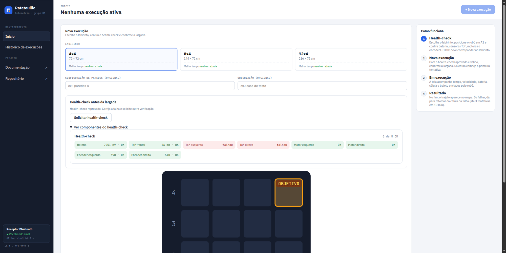

5.44 · ToF laterais corrigidos no robô montado: os três VL53L0X iniciam nos endereços 0x30 a 0x32 e medem
Resultados esperados: Os três sensores iniciam um por vez pelo XSHUT (frontal GPIO33, esquerdo GPIO4, direito GPIO5), mudam para 0x30, 0x31 e 0x32 e acompanham a distância de um obstáculo.
Resultados obtidos: Os três iniciaram (ToF frente OK (0x30), ToF esquerdo OK (0x31), ToF direito OK (0x32)). Com o dedo quase encostado: frontal 25 a 37 mm, esquerdo 24 a 31 mm e direito 62 a 71 mm. Com o obstáculo na distância escolhida para o robô parar: frontal 117 a 125 mm, esquerdo 92 a 103 mm e direito 99 a 109 mm.
Observações: Causa da falha do teste 5.2: a ligação dos laterais passava por adaptadores empilhados (para deixar o sensor na altura das paredes), que davam mau contato no I²C. Os adaptadores foram trocados por uma extensão soldada. Achado: encostado, o direito marca cerca de 35 mm a mais que os outros dois, por isso o controle manual (teste 5.46) usa um limite por lado. Leituras com a tecla m do controle_manual_tof (a cada 300 ms); o dedo é um alvo ruim, então os valores servem para conferir que os três medem e para escolher os limites, não como calibração.
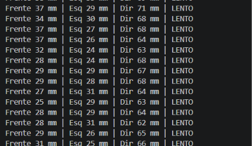
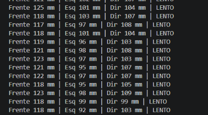
5.45 · Health-check de 8 itens aprovado no robô completo (esp32_real, serial USB), com os ToF reais e a bateria fixa
Resultados esperados: Com o comando {"v":1,"cmd":"health_check"}, o robô roda o autoteste com as rodas no ar e envia 8 hc_item aprovados e o hc_resultado aprovado; o LED fica aceso fixo (aguardando o largar).
Resultados obtidos: Os 8 itens aprovados: bateria 8258 mV, tof_frontal 1200 mm, tof_esquerdo 219 mm, tof_direito 367 mm, motor_esquerdo e motor_direito OK, encoder_esquerdo 493 e encoder_direito 529 pulsos. hc_resultado com aprovado: true, tipo_dip 4x4 e inicio retomada.
Observações: Válido: o primeiro health-check aprovado com os três ToF reais (resolve o pendente dos testes 5.2, 5.4 e 5.12) e o motor esquerdo aprovado sem segurar a bateria, que antes atrapalhava a roda (testes 5.3 e 5.12). Como foi feito no Windows: o tools/monitor_comandos.py não roda no Windows (usa termios), então a linha JSON foi digitada no pio device monitor com --filter send_on_enter --eol LF --echo; a placa só respondeu depois do botão EN (sem --rts 0 --dtr 0 o monitor a deixava em reset). O inicio retomada vem do mapa que os testes anteriores deixaram na NVS. Pendente: o mesmo health-check aprovado pela tela (teste 5.43).
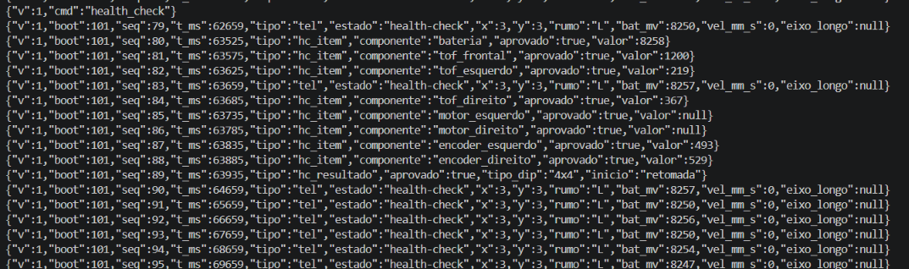
5.46 · Controle manual pelo Bluetooth no robô completo com proteção dos 3 ToF (controle_manual_tof)
Resultados esperados: Pelo app de celular (Bluetooth "Ratatouille"), o robô anda para frente, dá ré e gira, com a bateria fixa e sem o cabo USB. Indo para frente, desacelera perto da parede e freia antes de bater; com obstáculo de um lado, desvia e não gira para esse lado; ré e giro para o lado livre continuam liberados.
Resultados obtidos: O robô andou nos quatro sentidos pelo app. Freou e apitou com o obstáculo à frente a cerca de 12 cm, recusou ir para frente enquanto o obstáculo estava ali e saiu com ré ou giro. Com obstáculo ao lado, recusou girar para esse lado. A tecla z alternou entre lento (PWM 75) e rápido (PWM 130).
Observações: Programa de bancada, não é a navegação autônoma: valida o hardware completo (ToF, ponte H, motores, Bluetooth e bateria) andando no chão. Limites usados, medidos no teste 5.44: frontal 100 mm + vel/4 (cerca de 118 mm no lento), esquerdo 95 mm e direito 105 mm. Achado: o motor esquerdo gira ao contrário sem inverter (SENTIDO_E -1), como já tratado no hal_motor_esp32.cpp. A ré não tem sensor. A conferência foi visual, sem vídeo. Código em src/firmware/bancada/controle_manual_tof/ (PR #287).
5.47 · Integração da energia com o robô montado: a LiPo alimenta sozinha o robô nas corridas pela tela, sem cabo nem fonte externa (RF01 da Energia)
Resultados esperados: O robô faz as corridas alimentado só pela LiPo 2S, com o comando e a telemetria pelo Bluetooth, sem cabo USB nem fonte externa.
Resultados obtidos: 25 execuções no labirinto 4x4, 13 delas concluídas, em 29 tentativas ao longo de 228 min (14:52 às 18:40), com o robô andando por 482 s e 205 passos, tudo com a LiPo.
Observações: Válido: a bateria sustentar o microcontrolador, os sensores, os motores e o Bluetooth em corrida. As 16 tentativas que falharam foram por stuck, não por falta de energia. Gráficos e análise em Bateria nas corridas com o robô montado.
Arquivos: 5.47-execucoes-24-11-2026.csv e 5.47-execucoes-24-11-2026.json
5.48 · Leitura da bateria na telemetria: a tensão da LiPo lida pelo firmware no divisor chega ao back-end no início e no fim de toda tentativa (RF04 da Energia)
Resultados esperados: Toda tentativa tem a tensão da bateria, em mV, no início (bateria_inicial) e no fim (bateria_final), dentro da faixa da LiPo 2S (7,0 a 8,4 V).
Resultados obtidos: As 29 tentativas trouxeram as duas leituras, todas entre 7194 e 7496 mV. Em 4 delas a leitura do fim ficou até 5 mV acima da do início, o que dá a ordem do ruído da medida.
Observações: Válido: o caminho da medida, do divisor ao arquivo exportado pela tela. Fora do critério: a exatidão da leitura, que é o teste 5.52. Gráficos e análise em Bateria nas corridas com o robô montado.
Arquivos: 5.47-execucoes-24-11-2026.csv e 5.47-execucoes-24-11-2026.json
5.49 · Consumo de bateria por tentativa: o back-end calcula a porcentagem gasta pela curva da LiPo e ela sai na tela e na exportação (RF04 da Energia, dado de telemetria do slide 11)
Resultados esperados: Toda tentativa tem o consumo de bateria em porcentagem, igual à diferença entre a carga no início e no fim pela curva de descarga do firmware (BATERIA_CURVA_LIPO).
Resultados obtidos: As 29 tentativas têm consumo_bateria_pct, e as 29 batem com a conta refeita a partir das tensões e da curva (diferença menor que 0,01 ponto). O consumo ficou entre -0,25 e 3,85 pontos por tentativa.
Observações: Válido: o cálculo e a entrega do dado. Ressalva: a curva é provisória, e o valor por tentativa inclui a queda passageira da tensão com a carga: a soma das tentativas dá 36 pontos, enquanto a bateria desceu cerca de 20 pontos na sessão. Gráficos e análise em Bateria nas corridas com o robô montado.
Arquivos: 5.47-execucoes-24-11-2026.csv e 5.47-execucoes-24-11-2026.json
5.50 · Proteção contra descarga profunda: a tensão da LiPo fica acima do corte de 7,0 V durante toda a sessão de corridas (RNF04 da Energia)
Resultados esperados: Nenhuma leitura da bateria chega ao corte de 7000 mV (3,5 V por célula) durante as corridas.
Resultados obtidos: A leitura foi de 7496 mV na primeira tentativa a 7194 mV no fim da última, 228 min depois. A menor leitura ficou 194 mV acima do corte, e a do início de cada tentativa caiu em média 0,76 mV por minuto.
Observações: Válido: a bateria não foi levada à descarga profunda na sessão. Ressalva: 17 das 29 tentativas começaram abaixo do alerta de 7,4 V, a partir da segunda tentativa da execução 9, e o registro não diz se o LED e o buzzer avisaram. Gráficos e análise em Bateria nas corridas com o robô montado.
Arquivos: 5.47-execucoes-24-11-2026.csv e 5.47-execucoes-24-11-2026.json
5.51 · Motor travado não derruba a lógica: com a roda presa, o firmware continua alimentado, detecta o stuck e informa a falha (RNF01 da Energia)
Resultados esperados: Quando o motor trava e puxa mais corrente, o microcontrolador não reinicia: a tentativa fecha com a falha stuck informada pelo próprio firmware, e a execução pode ser retomada.
Resultados obtidos: Nas 16 tentativas com travamento, o firmware informou a falha stuck de origem automática em todas, e 4 delas foram retomadas na mesma execução. A tensão caiu em média 28,7 mV nessas tentativas (2,41 mV por segundo), contra 12,4 mV nas concluídas (0,55 mV/s), e voltou em média 11,4 mV até a tentativa seguinte.
Observações: Válido: a lógica seguir respondendo com o motor travado, e a queda de tensão maior, coerente com o pico de corrente do motor travado medido na bancada (211 mA contra 26 a 30 mA girando livre, teste 2.2 da Energia). Fora do critério: a corrente, que não foi medida, e a linha de 5 V, que não foi monitorada. Gráficos e análise em Bateria nas corridas com o robô montado.
Arquivos: 5.47-execucoes-24-11-2026.csv e 5.47-execucoes-24-11-2026.json
5.52 · Exatidão da leitura da bateria: a tensão lida pelo firmware comparada com o multímetro nos terminais da LiPo, com erro de até 2% (RF04 da Energia)
Resultados esperados: A tensão informada pelo firmware fica a até 2% da medida com o multímetro nos terminais da bateria, antes da primeira e depois da última corrida.
Resultados obtidos: Não executado: a sessão não teve medição com multímetro.
Observações: Pendente desde o teste 5.3. Sem essa comparação, não dá para dizer se os 7496 mV do começo eram a tensão real da bateria, nem ajustar BATERIA_DIVISOR e BATERIA_QUEDA_DIODO_MV. Gráficos e análise em Bateria nas corridas com o robô montado.
Arquivos: 5.47-execucoes-24-11-2026.csv e 5.47-execucoes-24-11-2026.json
5.53 · Autonomia de 30 min de operação contínua com a LiPo carregada, sem troca nem recarga (RNF02 da Energia)
Resultados esperados: Partindo de 8,4 V, o robô opera por 30 min seguidos, equivalentes aos três labirintos de 10 min, com a tensão acima do corte de 7,0 V.
Resultados obtidos: Não atendido nesta sessão: o robô andou por 482 s (8 min) dentro de 228 min, com um intervalo de 74 min sem corrida, e a bateria já começou em 7496 mV.
Observações: A sessão mostra que a bateria aguentou 25 execuções sem chegar ao corte (teste 5.50), mas não vale como operação contínua, e o registro não diz se o robô foi desligado entre as corridas. Falta uma sessão que comece com a LiPo carregada. Gráficos e análise em Bateria nas corridas com o robô montado.
Arquivos: 5.47-execucoes-24-11-2026.csv e 5.47-execucoes-24-11-2026.json
Bateria nas corridas com o robô montado (testes 5.47 a 5.53)¶
Estes são os testes de integração da Energia. Os testes de bancada, com a fonte no lugar da bateria, estão nos testes de energia. Aqui os dados vêm das corridas do robô montado em 24/11/2026, feitas pela tela: a exportação das execuções traz uma linha por tentativa, com a tensão da bateria no início (bateria_inicial) e no fim (bateria_final), em mV, e o resultado da tentativa. A Energia não acompanhou a sessão com multímetro, então os testes usam só o que a telemetria gravou. Os horários do arquivo estão em UTC; a página mostra no horário de Brasília.
Carregando…
O que os registros mostram:
- O robô andou só com a LiPo. Foram 25 execuções no labirinto 4x4, 13 delas concluídas, em 29 tentativas, com o comando e a telemetria pelo Bluetooth.
- A leitura da bateria chega à telemetria. As 29 tentativas trouxeram a tensão no início e no fim. Em 4 delas a leitura do fim ficou até 5 mV acima da do início, o que dá a ordem do ruído da medida. Falta comparar a leitura com o multímetro (teste 5.52, pendente desde o teste 5.3): sem isso, não dá para dizer se os 7496 mV do começo eram a tensão real da bateria.
- A bateria não chegou ao corte na sessão. Em 228 min, com o robô andando por 482 s (8 min), a leitura foi de 7496 a 7194 mV, e a menor ficou 194 mV acima do corte de 7,0 V. A leitura do início de cada tentativa caiu, em média, 0,76 mV por minuto. O resultado não equivale aos 30 min contínuos do RNF02 (teste 5.53): o robô ficou parado a maior parte do tempo, e o registro não diz se ele foi desligado entre as corridas (houve um intervalo de 74 min sem corrida).
- A bateria já começou perto do alerta. A primeira leitura, de 7496 mV, está só 96 mV acima do alerta de 7,4 V, e 17 das 29 tentativas começaram abaixo dele, a partir da segunda tentativa da execução 9.
- Travar custa mais do que andar. Nas 13 tentativas concluídas a tensão caiu em média 12,4 mV (0,55 mV por segundo de corrida). Nas 16 que falharam por
stuck, todas detectadas pelo firmware, caiu 28,7 mV (2,41 mV/s), cerca de quatro vezes mais rápido. É o que se espera de um motor travado, que puxa mais corrente (211 mA contra 26 a 30 mA girando livre, no teste 2.2 da Energia), mas a corrente não foi medida aqui. - Parte da queda é passageira. Entre o fim de uma tentativa e o início da seguinte a leitura subiu em média 11,4 mV, porque a tensão da bateria afunda com a carga e volta em repouso. Por isso o consumo por tentativa mostrado na tela, que é a diferença entre o início e o fim convertida em porcentagem pela curva provisória do firmware, conta essa queda passageira como carga gasta: a soma das 29 tentativas dá 36 pontos percentuais, enquanto pela mesma curva a bateria foi de 24,6% (7496 mV) a 4,8% (7194 mV), cerca de 20 pontos.
Para fechar os testes 5.52 e 5.53 faltam a medição com o multímetro (tensão nos terminais da bateria contra a leitura do firmware) e uma sessão contínua que comece com a LiPo carregada em 8,4 V, que também serve para trocar a curva provisória de porcentagem pela medida. A corrente em operação continua sem medição.
Roteiro dos testes de ponta a ponta pela tela¶
Testes a registrar nesta tabela quando forem feitos, na ordem. O objetivo é operar e coletar os dados só pela tela, sem comando de terminal durante o ensaio (issues QA-05, FIRM-12 e FIRM-13). O terminal serve apenas para gravar o firmware e subir o ambiente.
Preparação (uma vez):
- Grave o firmware completo com o Bluetooth real e desconecte o cabo:
pio run -e esp32_real_bt -t upload, emsrc/firmware. Oesp32_real_bt_tof_mocksó serve para testar o fluxo, nunca como evidência de sensores. - Pareie o robô ("Ratatouille") no notebook e confirme a regra de udev que faz o ModemManager ignorar o
rfcomm(teste 5.37). - Suba tudo com
scripts/ambiente.sh subir --ponte --bluetooth ENDERECO_DO_ROBO. O script instala o que falta, sobe o banco, o back-end e a tela sem mock, liga orfcomme a ponte. O endereço do robô sai debluetoothctl devices. - Abra
http://127.0.0.1:5173. Com o robô ligado e o health-check pedido, o receptor da barra lateral mostra "Recebendo sinal". O robô envia telemetria o tempo todo, inclusive parado, então com tudo certo o receptor permanece em "Recebendo sinal". Se passarem 60 s sem chegar nenhuma linha, o receptor passa a "Sem sinal recente": o Bluetooth deixou de entregar telemetria, o que indica desconexão ou conexão instável (distância, interferência, robô desligado ou ponte sem a porta aberta).
Casos, todos pela tela:
| Caso | Procedimento na tela | Resultado esperado | Registrado |
|---|---|---|---|
| Health-check | Início, "Solicitar health-check" | os 8 itens com valor lido, aberto, em até 30 s; aprovado só com os 8 OK e o DIP igual ao labirinto | teste 5.43 (reprovado pelos ToF laterais) |
| Receptor | olhar a barra lateral antes e depois do health-check | "Sem informação" antes, "Recebendo sinal" depois | teste 5.43 |
| DIP divergente | escolha um labirinto diferente do DIP e peça a largada | recusa dip_divergente, nenhuma tentativa aberta |
pendente |
| Largada | health-check aprovado e "Nova execução" | tentativa 1 de 3 aberta, o robô larga e a telemetria aparece ao vivo | pendente |
| Validade | espere mais de 10 min depois do health-check e peça a largada | recusa health_check_expirado |
pendente |
| Encerrar | "Encerrar tentativa" no meio da corrida | o robô para (até 1 s, QA-05) e a tentativa fecha como encerrado_operador |
pendente |
| Três tentativas | falhe a corrida três vezes | quarta abertura recusada com limite_3; a execução termina cancelada |
pendente |
| Coleta | Histórico de execuções, filtro por configuração e exportar CSV ou JSON | número da execução, taxa de sucesso e tempo por configuração, arquivo com uma linha por tentativa | verificado com dados do banco, falta com corridas do robô |
O que anexar a cada teste: a captura da tela (como a do 5.43), o trecho do log da ponte (scripts/ambiente.sh logs ponte) e, para corridas, o CSV exportado pela tela, tudo em evidencias/testes-integracao/firmware-hardware/.
Regra do domínio: a execução tem até 3 tentativas que dividem o limite de 10 min; ela é um sucesso quando a última tentativa foi um sucesso.